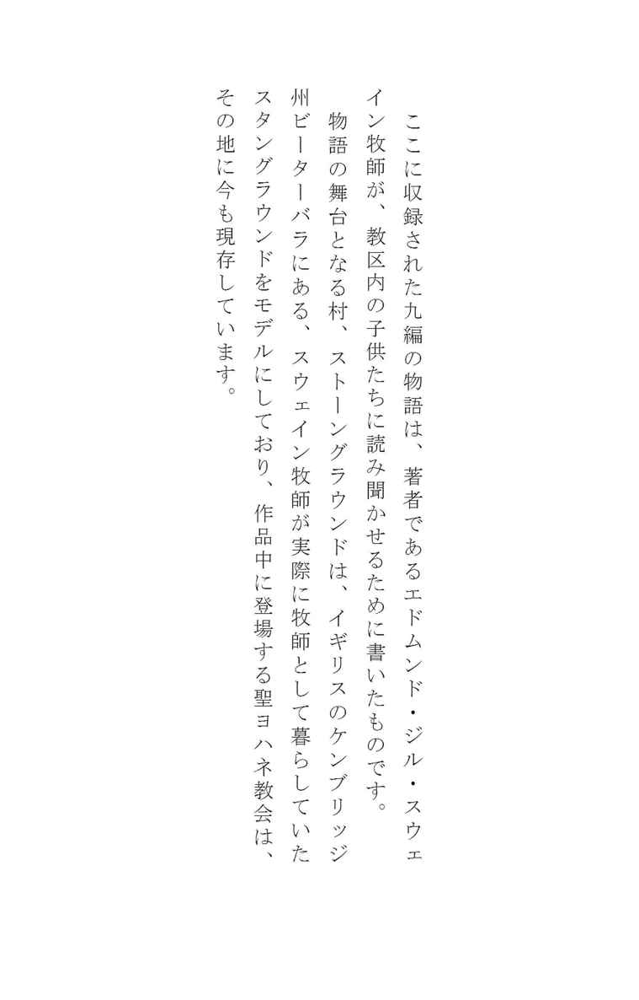
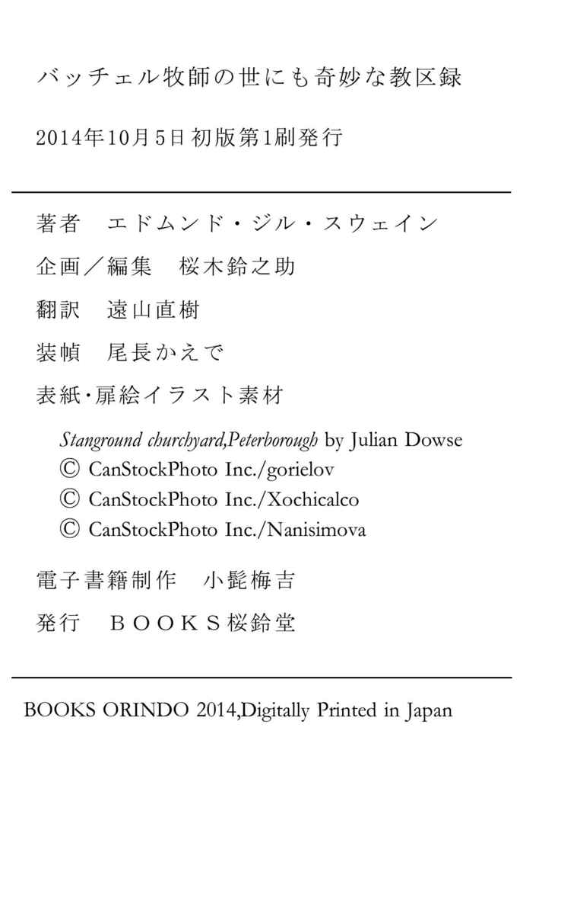

| バッチェル牧師の世にも奇妙な教区録 | |
| Ｅ･G･スウェイン | |
| BOOKSORINDO (2014) | |

目次
銀塩写真
･
〈大湿地〉という古の名前を今も留める、イースト・アングリアの広大な一帯の片隅をよくよく探してみるならば、ストーングラウンドという名の村がある。かつてはのどかで美しい村だったが、今はもう村とも美しいとも呼べなくなってしまった。
人は魂の住まいである肉体という〈土くれの家〉の他に、その肉体を住まわせるためのもう一つの土の家をこしらえる。そしてこの二つ目の家は、ここストーングラウンドや近隣の村々の足下の土から作られる。煉瓦造りという、この地に新たに興った産業が、ストーングラウンドの景観と人口とを大きく変えてしまったのである。有史以前の大昔から眠っていた巨大な恐竜の化石が地中から掘り出されるのを目にした者たちの多くは、その変化を決して良いものだとは思わなかっただろう。
しかしながら、住人たちの住む家の大半は土の地面ではなく、大昔にこのストーングラウンドという名前の由来となった砂利の地盤の上に建っており、そして、数キロ四方に広がる田園風景を見晴らすこのあたりで一番の高台には、何世紀もの昔からずっと、この地の教区教会が建っている。
中世時代には広大な沼地に囲まれて陸の孤島のようだったここストーングラウンドも、今はもう近づくことのできない土地ではなくなった。ときおり川が氾濫し、あたり一面の水没した風景が在りし日の村の姿を偲ばせることもあるものの、近年は道路と鉄道の敷設、そして〈フェンズ〉の干拓により、以前は孤立していた世界との間を自由に行き来できるようになった。
ストーングラウンドの牧師館は教会のすぐ隣にある。その広々とした庭園はよく知られており、その一部、すなわち牧師館に隣接しているあたりはたいそう歴史が古い。これは当然のことではある。というのも、もともとの敷地を、代々この教区を管理してきた牧師たちがその隣の土地を買い足して広げていったからで、庭園はそうして今にいたっている。
歴代の牧師たちは多くを数える。一一四〇年にヘンリー・ド・グレヴィル師が赴任してきて以来、その数は三十を越え、その全員が、現在の敷地に何度か建て替えられたこの牧師館に住み、そしてそのほとんどがそこから世を去っていった。
現在の教区牧師であるローランド・バッチェル師は、少しばかり学者肌の、孤独を愛する男である。とは言っても来客を拒むような偏屈者でもなく、ときおり学校の子供たちなどが遊びに来たりもする。一九〇六年の夏には二人の訪問者があり、そしてこの二人こそは、本人は自分たちの果たした役割を今もって知らないながらも、ここに記す事件の発端となったのである。
そのうちの一人の子供がストーングラウンド滞在中に十五歳の誕生日を迎えたので、バッチェル師は誕生日祝いとしてその子に新しいカメラを贈った。そこでその少年は牧師館の周辺の風景を撮影して回ったのだが、これがなかなかの腕前だった。
そうして撮られた写真の中に、バッチェル師がことのほか気に入ったものが一枚あった。芝生の庭を前景に配した牧師館の写真である。訪問から数週間後、幼い友人から現像された小さな写真（少年のカメラではそれ以上大きいものはできなかった）が数枚送られてくると、バッチェル師はいよいよその写真が気に入ってしまい、引き伸ばしてもらおうと、ネガを送ってほしいと申し入れた。
そんな師の求めに対し、少年は大げさと思われるほどに謙虚な釈明の返事を寄こした。いわく、ネガは二つあるのだが、そのどちらにも肝心の牧師館の写真の同じ場所に、何かしら失敗をしたとしか思えない小さなボケがあるという。そういうわけで、少年としてはそのフィルムを破棄して、次に遊びに行った際にもっと引き伸ばすだけの価値のある写真を撮りたいというのである。
しかしながら、バッチェル師はあくまでもその写真にこだわった。やがて送られてきたネガを虫眼鏡で調べてみると、確かに話の通り、ボケがかろうじて見てとれる。それは絵に描いた流れ星のような形をしており、核の部分から一本の薄ぼんやりとした筋が伸びて、ネガを横切っている。とはいえ気になるほどのものでもない。近所に写真が趣味の男がいて、これが写真については本職顔負けの腕前である。前々から、彼は何か自分で役に立てることがあったら遠慮なく言ってほしいと請け合ってくれていたので、これはちょうどいい機会だと、バッチェル師はネガを送って写真の引き伸ばしを頼んだ。
写真の名人だというこの隣人は、グローブスという名の若き牧師補で、ストーングラウンドからほど近いピーターバラ大聖堂のそばに住んでおり、街を囲む城壁は牧師館の庭からも見える。グローブス氏はラムニー夫人という女性の家に間借りをしている。夫人は年老いてバッキンガム宮殿の使用人を引退した人なのだが、今なお元気で溌剌としていて、彼の身の回りの世話をするにはうってつけの人物だった。
というのも、グローブス氏はラムニー夫人にとって、まるで終わりなき試練のごとき不精者なのである。夫人が彼に植え付けた健全なる恐怖心がなかったなら、部屋は目も当てられないほど荒れ放題になっていただろう。飛び散った薬品でいつもいつも汚れている絨毯やテーブルクロス。炉棚の上の装飾品はぞんざいに片隅に押しやられ、代わりにラベルの貼られた薬瓶が並んでいる。寝台の上ですら、昼の間は乾燥中のフィルムや印画紙などが散乱しているありさまで、夫人のかわいがっている年老いた猫は、現像液をうっかり引っかけられて、脇腹のところに禿げがある。
しかしながら、駄目な子ほどかわいいとはよく言ったもので、ラムニー夫人はグローブス氏のことをたいそう気に入っており、氏の撮った写真を少なからず自慢に思っていた。居間には夫人の全身を映した写真が飾ってあって（もともとは仲直りのための贈り物だったのだが）、これは彼女のお茶仲間たちの羨望の的だった。
「グローブスさんはねえ、それはもういいお方で。それに本物の紳士でねえ。そりゃ薬品をいじってばかりいらっしゃいますけれど、でもあたくしはね、他のお家で働いて二倍のお給金をいただくより、たとえただでもグローブスさんのお世話をする方がいいですわ」というのが夫人の口癖である。
ラムニー夫人は氏が新しく手がける写真には必ず興味を示し、自分には当然そうする権利があるとばかりに批評を加えた。そういうわけで、送られてきた件の牧師館の写真も、彼女に品定めをされた。
「あらまあ。切手みたいにかわいらしい写真ですこと。確かにこれは引き伸ばしませんとねえ。これじゃあ牧師館というよりはお人形のお家みたいですわね」
そう言って夫人は仕事に戻り、グローブス氏はフィルムを持って暗室にこもり、依頼された仕事に取りかかった。
二日後、氏が暗室に繰り返し足を運んだ末に、なかなかのものが出来上がった。昼食のラムチョップを運んできたラムニー夫人はうっとりと見とれたほどである。その時イーゼルにかけてあったのはまだ仕上げ前の写真だったのだから、完成した暁には、幼き写真家とバッチェル牧師を必ずや満足させる作品になるに違いなかった。
グローブス氏は写真の作業をするのは午前中だけと決めていた。午後は庭仕事をして過ごすので、写真の引き伸ばしの作業は今日のところは終わりだった。あとはちょっとした「仕上げ」を残すばかりだったが、しかしグローブス氏の引き伸ばした写真が他の人のものに較べて優れているのは、この仕上げが決め手なのである。そういうわけで、写真はイーゼルにかけられたまま翌朝の完成を待つことになった。
昼食の皿を下げにきたラムニー夫人とグローブス氏は、二人並んでうっとりした目で写真を隅々まで吟味した。とりわけ素晴らしい点として二人が口を揃えて褒めたのは、前景となっている広々とした滑らかな芝生の庭で、これが写真の風景全体を見事に引き立てているのである。ラムニー夫人は若い頃を思い出してこんな感想を口にした。「まるで、誰かが来てその上で踊ってくれるのを待っているみたいですわ」
午後になってグローブス氏は外出した。それが二時半のことで（ここは時間について正確を期さなくてはならない）、帰宅はいつも通り五時の予定だった。
しかしながら、この日は予期せぬ訪問者があっていつもの時間よりも少しばかり帰りが遅れ、ラムニー夫人宅の玄関扉に鍵を差し込んだのは五時十五分だった。
家に入るなり、彼のことを待っていたらしい夫人が玄関広間に出てきた。普段は色艶のいい顔は羊皮紙のような色になり、あたふたと息を切らしながらグローブス氏の部屋の扉を指さした。
そんな夫人の状態を見ていささか不安になったグローブス氏は、慌てて何ごとかと尋ねたが、彼女はただ「写真が！ 写真が！」と繰り返すばかりである。グローブス氏に思い当たるのは、夫人があの写真をうっかり駄目にしてしまったのではないかということくらいだった。おそらく、写真がひらりとめくれ上がった拍子に暖炉に落ちるなりしてしまったのだろう。
グローブス氏は最悪の事態を覚悟して部屋に向かおうとしたが、すると夫人は震える手で彼の腕をつかみ、引き留めた。「入ってはいけません。居間でお茶を飲んでいってくださいまし」
「そんな大げさな。ただの写真じゃないですか。また作り直せばいいだけの話ですよ」
「ただの写真......。本当にそうだといいんですがねえ」
それに引き続くやりとりは割愛しよう。とにかく、グローブス氏はじっくりと時間をかけてなんとか夫人を落ち着かせ、やがて夫人も、まだひどく震えてはいたものの、一緒に写真を見に行くことを承諾したのだった。実を言えば、夫人がそうやって怯えていたのは氏のことを心配してのことであって、彼女はもともと気の強い方なのである。
しかしいざ部屋に入ってみると、驚くような原因は見当たらないばかりか、部屋の中は何一つ変わっていなかった。薬品の染みで汚れ、傷んだ調度類はどれもいつもの場所にあるし、イーゼルにかけられた写真も、出かけた時とまったく同じ状態のままである。テーブルにお茶の支度がされていないことを除けば、何もかもがいつもと同じ状態で、いつもと同じ場所にあった。
しかしラムニー夫人はまたしても取り乱してぶるぶると震え始め、「ほら、あそこ！」と叫んだ。「芝生を見てくださいまし！」
グローブス氏はすぐさま前に進み出て写真を見た。と、その顔がラムニー夫人に負けず劣らず蒼白になった。
人が写っていた。とても言葉では言い表せないようなおぞましい苦悶の表情を浮かべた男が一人、大きなローラーで芝生をならしている。
グローブス氏は驚きのあまり、背後に立ったままでいた夫人のところまで後じさりした。「誰か部屋に入りましたか？」
「いいえ、誰も。あたくし、火を熾そうと思って部屋に入って、この写真をもう一度見ようとこちらを向いたんです。そしたら、あの生ける屍みたいな顔が端っこに見えて。もう気味が悪いのなんのって......。何がぞっとするって、この前に見た時にあんな人はいなかったことですわ。それでね、あたくし思ったんですよ。もしあれがストーングラウンドにいる人だとしたら、牧師さまはあんな恐ろしい顔の人を庭師に雇ってらっしゃるのかしらって。それで、あの顔が頭から離れなくて、どうしてももう一回見ずにはおれなくなって、五時に先生のお茶をお持ちしたんです。そしたら、あれが右に動いていたんです。ほら、今みたいにローラーを引きずって」
グローブス氏は狐につままれたような気分だった。いくらなんでも写真の映像が動いたというのは眉唾ものだが、それでもこの奇妙な、邪悪な顔の男がどうしたものか写真の中に浮かび上がってきたのは事実である。引き伸ばしの作業が終わった時点で、そんなものは写っていなかったことは確かだった。
しかしながら、グローブス氏の恐怖はじきに収まった。彼の心の中で、それは科学的な問題へと変化しつつあった。現像液の化学反応が遅れて現れたことや、その他ありそうな可能性を考え始めた。それでも、ラムニー夫人のたっての願いで、イーゼルの上の写真を裏返して白い裏面だけが見えるようにすると、彼は腰を下ろしてお茶を持ってきてくれるように頼んだ。
写真は見えなくなったものの、あの男の異様なほどの苦悶に歪んだ表情が脳裏から離れず、今なお目の前に浮かんでくるようで、それが氏の心になぜかしら暗い影を落としていた。
軽い食事を済ませてパイプに火を点けると、彼はこの問題の化学的な原因をじっくりと検討し始めた。もとのフィルムの他の写真が、引き伸ばしたあの一枚に写り込んでしまったのだろうか。他の写真に写った顔が、引き伸ばし用のレンズで歪み、この写真の一部になってしまったのだろうか......。
二時間もの間、彼はあれこれの可能性について念入りに考察し、そしてそれらをすべて却下した。彼の光学に関する知識に照らし合わせるなら、あの写真に芝生のローラーを転がす男が写り込むような偶然は絶対に考えられなかった。そもそも彼の持っているネガには、あんな男が写っている写真は一つもないのである。もしあったとしても、あの男が、いわば引き伸ばし機のまわりをふらふらと漂っているようなことは、自然の原因ではあり得ない。
この時分には、現物の写真に対する嫌悪感は麻痺してきていたので、グローブス氏はそれをもう一度よく調べてみて、それで化学的な原因をあれこれ考えるのを切り上げることにした。
イーゼルに歩み寄って写真を表向きにしたその瞬間、今しがたの恐怖がぶり返してきた。それにはきちんとした理由があった。ローラーを転がす男が、今は芝生の庭の中ほどまで進んでいるではないか！ その顔にはやはり、形容しがたいほどの苦悶の表情が浮かんでいる。男は写真を見る者に何らかの助けを乞い求めているように見えた。救いを求めるその声が聞こえてきそうですらある。
グローブス氏が極度の興奮状態に陥ったのも無理はない。生まれつき恐がりな質ではなかったものの、それでも頭のてっぺんから爪先までぶるぶる震えた。突然、彼は視線を引き剥がすようにして写真から顔を背けると、腕を一杯に伸ばしてそれをつかみ、戸棚の引き出しを開けて、そこに入っていた折りたたまれたテーブルクロスの下に突っ込んだ。引き出しを閉めると、写真のことを忘れようと小説を手に取った。
これはまったく効果がなかった。それでもなんとかその晩の残りは過ぎていき、そして夜が更けるにつれて恐怖もいくらか薄れていった。十時になると、ラムニー夫人が部屋の扉を叩き、入ってみたら部屋に一人きりだったということにならないよう、念のために返事を二度聞いてから、いつもこの時間にグローブス氏が飲むココアを持って入ってきた。イーゼルにちらりと目をやり、そこに何もかかっていないのを見ると、その顔にほっとしたような表情が浮かんだ。夫人は何も言わず、グローブス氏も声をかけることはしなかった。
しかしながら、グローブス氏は眠る気にはなれなかった。写真の中のあの顔は彼の想像力の中にしっかり根を下ろしていて、まるでそれが彼の心に魅惑と嫌悪とを同時に感じさせているかのようだった。しばらくすると、もう一度写真を見たいという衝動をどうしても抑えられなくなった。やがて彼は心ならずも写真を引き出しから取り出し、ランプの下に広げた。
ローラーを引く男はあれからさらに芝生の反対側まで移動し、今は写真の左側にいた。
グローブス氏の心を、再び激しい戦慄が貫いた。暖炉の前に立ったまま抑えようにも抑えられぬ動揺にぶるぶると震えた。そうしていると、ふと目の前にかけられた暦が目に留まり、そのおかげでいくらか落ち着きを取り戻した。
翌日は母親の誕生日だった。彼はその日の母親の朝食のテーブルには必ず手紙を添えるよう取りはからっていて、その習慣は一度たりとも欠かしたことはなかった。この日の夜はあの写真のことで頭がいっぱいだったせいで、珍しくそのことをすっかり忘れていた。しかしながら、十一時四十五分に近所の郵便投函箱の集配があるので、彼は机に向かって、心を込めたお祝いの手紙をしたため、書き終わるとそれを投函するために外に出た。
部屋に戻ると、ちょうど時計が夜中の十二時を打っているところだった。机の上にはあの写真が広げたままになっていて、彼の目はまるで吸い寄せられるかのようにそちらを向いた。その目に映ったのは予期せぬ光景だった。芝生をならす男は消えていたのである。芝生の庭は滑らかで、人の姿はなく、ラムニー夫人の言っていたように「誰かがやって来てダンスを踊ってくれるのを待っているかのよう」な雰囲気を取り戻していた。
これ以降、写真は何の変哲もないただの写真に戻った。彼がその目ではっきりと見届けた（そしてわれわれがここに記してきた）一連の写真の変化はすべて目の錯覚だったのだ――グローブス氏はそう思いたかったが、しかしそれを信じるには、あの映像はあまりに真に迫っていた。写真は一週間ずっと、イーゼルにかけられたままにされていた。
やがて写真がストーングラウンドのバッチェル師に送られる時、ラムニー夫人はさすがにもう怯えてはいなかったものの、それが家からなくなることに明らかにほっとしている様子だった。グローブス氏はあの芝生をならす男のことは伏せたまま、引き伸ばした写真を黙って友人の手に渡した。その出来映えは申し分なく、それに見合うだけの賞賛を受けた。
グローブス氏は謙遜しつつ、広々とした芝生を前景に配した風景があまりにも見事だからであって、自分の手柄ではないと答えた。それからこの芝生は、と、牧師館の書斎に二人で腰を下ろして窓の外を眺めながら言葉を継いだ。部屋の中からの眺めも外からと同じくらい素晴らしいですね......。彼は物思いに耽るような口調でさらに続けた。何世紀にもわたってあなたの前任者たちが座ってきた椅子に座り、彼らの安らぎに満ちた仕事を受け継いでいるのだと思うと、きっと身が引き締まる思いがすることでしょう。この窓の向こうの風景、過去に善良な牧師たちが歩いた芝生がそこにある。それ自体が、神の啓示なのでしょうね......。
バッチェル牧師はこのいささか説教じみた発言には返事をしなかった。彼はおざなりにせよ同意するような言葉を探しているような感じだったが、やがてつと部屋を出ていき、しばらくして一冊の羊皮紙の本を手に戻ってきた。
「今の君の言葉を聞いていてね、グローブス君」そう言いながら、バッチェル師は再び腰を下ろした。「過去のちょっとした奇妙な事件を思い出したんだ。それで上階の古い読書室に行ってこの本を取ってきたんだがね。これは一六〇二年までここの教区牧師だったウィリアム・ロングの手記でね。今の芝生云々の話と関係のある、ちょっとおもしろい箇所がある。読んでみようか」
一六〇〇年八月一日――ブライトエルムストオンよりいそぎかへりぬ。二月留まるつもりなりきが果たせず。わが母校エマニエル校の友ジヨサイア・ヰルバトンが、わが教区ストオングラウンドにてわが代はりをつとめたり。出づてより十二日、教区委員の使ひの者たずねきたりて、ヰルバトンが先週月曜日の夜中に姿を消し、以来行方知れずといふ。かくて予定すべて棄て、ふたたび書斎にあり。こころみだれて何も手につかず、ただ窓外を眺むるばかりなり。アンドリュ・バアチが執拗に芝生をならしたるが見ゆ。同じ処を繰りかへし行き来たり。何とて愚図愚図したるかと問ふに、かれ未だならしたりぬ処を黙して指し、為事を続けたり。
八月二日――かへりきてより、アンドリュ・バアチの様子、例ならずあやし。いみじう沈みたると見ゆ。われとおなじく、ヰルバトンを憂ひたるか。ウィルバトンの行方未だ知れず。『聖パウロよりコリントの民への書簡第一』、二章二十七節をもとに説教の原稿したためたるに、アンドリュ、また芝生をならしたり。其れをやめさせ、馬に鞍をのせるやふいひつくる。此地の司教代理にして我が友、ジヨン・パアマにいひ触れなん。かれもまたヰルバトンの朋友なり。
八月二日。前項続き――やんごとなき報せ、わがかへりを待ち居たり。警察の手によりて、哀れなヰルバトンの亡骸、アンドリュのならしたる芝生の下より見出されたり。アンドリュ、下手人なりとて捕らわれり。
八月十日――なんたることか！ アンドリュ・バアチ、絞首刑に処されり。拷問にかけず速やかに処罰を仰せられたるは、情けぶかき沙汰なるや。かれの魂に主の哀れみのあらんことを。かれ、われに尽く懺悔したり。曰く、ヰルバアトンより、教会への寄付金を引き篭もりたるをわれにいひ付けんと脅され、激て殺めたるなり。然ばかり旧き使用人がかくの如き悪事なしたるとはかなしきに耐へず。アンドリュ、己が癇癪を深く悔い改めて嘆き、胸をかきむしりつついひたり。われ、悪事を隠さんとしたかの芝生を永遠にならす運命にありやと。
「ありがとうございます」グローブス氏は言った。「あの小さなネガには日付はありますか」
ある、とバッチェル師はネガを虫眼鏡で調べながら答えた。あの少年の手で八月十日と記されている。それが奇しくも、アンドリュー・バーチが処刑された日と同じ日であることに、バッチェル師は気づいていないらしかった。グローブス氏が気づいていたのは言うまでもない。しかし彼は写真の中の男のことは黙っていた。その姿は今日にいたるまで、二度と再び現れることはなかった。
写真術にはまだわれわれの知らない側面があることは間違いない。カメラには人の目に見えないものが映り、用意されたばかりで働きが活発な状態の現像液には、後になると失われてしまう特別な力があるのだ。われわれの時間という単位は、物質の通常の作用しか知らない人に都合のいいように使われているのであり、当然のことながら融通がきかない。科学の力を自然に向ける者は、自分たちの求めている以上のものまで目にしてしまう危険に常に晒されている。知りすぎることは災いであり、遅かれ早かれ、われわれはその災いに見舞われることになるだろう。もしもその時がやって来たら、われわれもグローブス氏を見倣おうではないか。賢者は語らず、なのである。
深夜の納骨
･
ケンブリッジ大学エマニュエル学寮の名誉校友であるウィリアムズ・ホワイトヘッド師は、一七三一年にストーングラウンドの教区牧師になった。師の在任中の教区録はさぞかし短く、淡々としたものだったのだろう。現存していないくらいなのだから。その上、当時は近隣の噂を集めて紹介する新聞もなければ、教区内の素朴な出来事を記録する教区誌もなかった。
しかしながら、現在はそうでなくとも、当時はそれなりに重大だったであろう一つの事件が、二つの場所に記録されている。ホワイトヘッド牧師は教会に二十三年奉職した後に体調を崩し、その墓碑銘いわく、「回復への虚しい望みをかけて」、湯治のために温泉地であるバースに赴いている。当地にどのくらい滞在していたかは不明である。普通に考えるならば、師は夏に旅行に出かけたと思われ、そして十一月にはかかりつけの医師に回復の望みを諦めるようにと告げられたことは確かである。
死を前にした患者の思いは、ストーングラウンドに残してきた、住み慣れた牧師館へと向けられた。師はかねてより牧師館で最期を迎えたいと望んでいたのである。後任の者たちも自分と同じくそこで幸せに暮らしてほしいと、彼はそう願った。余命のわずかなことを見越して身辺を整理し、少し前に購入したばかりの、牧師館の庭に隣接する囲い地を後世のストーングラウンドの牧師たちに永久に遺贈する由を遺書にしたためた。さらには自分の蔵書も遺産に加えた。それから数日のうちに、ウィリアム・ホワイトヘッド牧師は先祖たちのもとへ旅立った。
教会の北側の側廊の壁にかけられた銘板には、ホワイトヘッド師の年譜とその遺言、二度の結婚、そして前述の、無駄足となったバース旅行についてがラテン語で刻まれている。
師が愛し、そして二度と見ることのかなわなかった牧師館はその四十年後に取り壊され、ジェームズ・デヴィ牧師の代に新しく建て替えられた。その庭は一八五〇年頃、ロバート・タワーソン牧師によってホワイトヘッド牧師の残した囲い地やその他の隣接する地所ともども整地され、庭園になった。教会の景観はすっかり変わってしまった。しかし、現牧師館の二階にある陽当たりのいい部屋には、ホワイトヘッド牧師の読書室が、後任の者たちに永久に遺贈するというその遺言の通り、彼が使い、愛おしんだ当時の姿のままで残されている。
そこにある本は師が整理し、分類していた通りに並べられていた。小さな紙の栞が、ときには興味深い書き込みが残されたまま、今も読みかけの頁に挟んである。余白に書かれた感想が、もはや古臭くて面白みも失せてしまった頁に今なお生き生きとした色を添えている。この書庫でこうした本たちに囲まれながら、自分が今、百八十年前の、当時出たばかりだった新刊が印刷工の手を離れたその時代にいるような錯覚を覚えない者がいるとしたら、それは想像力の乏しい者だろう。
これらの蔵書を受け継いだ者たちの中には、きっとホワイトヘッド師以上にそれを愛した者もいれば、またそれほどでもなかった者もいただろう。まったく見向きもしない者もいたかもしれない。しかしそれを大切にした者もそうでなかった者も本を失くすことはなく、そしてホワイトヘッド牧師の死から約一世紀半の後、蔵書はバッチェル牧師の手に渡った。
彼はその本たちを、父親が息子を慈しむように慈しんだ。独り者の彼は家庭内の雑事に煩わされることもほとんどなかったので、遠い昔ホワイトヘッド師が読みふけった本をたっぷりと堪能することができた。いくつもの長い夏の夜を、彼はもはや忘れられて久しい本をひもといて過ごした。読書室と呼ばれているその部屋は南に面しているので、晴れた冬の午前中にはそこで満ち足りた時間を過ごした。小卓で書き物をしたり、背の高い書見台の前に立ったまま本を読んだりしながら、のんきな草原の牛よろしく、書架の間をのんびりとそぞろ歩いたりもした。
バッチェル牧師にとって、書物の使い道はそれだけではなかった。愛書家のご多分に漏れず眠りの浅い彼は、読書室に通じる両隣の部屋の一方を寝室として使っていた。この部屋割りのおかげで、師はいくつもの眠れぬ夜を本に囲まれてくつろぐことができ、そしてこうして深夜に読書室を訪れる時に備えて、机の前の壁掛け燭台には蝋燭が一本立てたままにされ、すぐ手の届くところにマッチを置いていた。
しかしながら、このように寝室が読書室の隣にあるのも、いいことばかりではなかった。師は建築については門外漢なのできちんと調べてみたことはなかったが、部屋のどこかに建て付けの悪いところがあるらしく、夜の静寂の中、ちょうど読書室の中を人が歩き回っているような物音が聞こえることがあるのである。読書室を挟んで寝室と反対側の部屋に客人を泊めた時などには、朝食の席で、師が夜中の一時か二時頃に読書室にいる物音を聞いたと言われることもしばしばあって、しかしその実、師はその時間眠っていたのだった。
そんな時、バッチェル師は客人たちの誤解を正すことはしなかった。つまらない言い合いはしたくなかったし、それがもとで幽霊の噂が立ってもやっかいである。客人たちの誤解のもとになっている音を自身も聞いたことのある彼は、ただ建て付けが悪いだけだという解釈で納得していたが、しかしそれとても、解釈と呼べるほど大層なものでもなかった。窓枠だか扉だか、とにかく何かが悪いのだろうくらいの大雑把な見立てである。何ごとにつけとにかく無頓着でのんびりした性格のバッチェル師は、実際にどこが悪いのかを調べようとはしなかった。要するにどうでもよかったのである。
不眠症の人は、ぐっすり眠りたいと思っている夜に限って一睡もできないことがよくある。休まなければとことさらに意識するせいで、かえって目が冴えてしまうのである。
一九〇七年のクリスマス前夜、あれこれと忙しい翌日の聖誕祭に備えてぐっすり眠りたいと願っていたバッチェル師は、ベッドに横たわったままなすすべもなくぱっちりと目を開けていた。巷で知られている眠りを誘う方法を片っ端から試してみた結果、いよいよ目が冴えてしまった。
師は窓にカーテンをかけるのが嫌いなので、寝室には月明かりが煌々と射し込んでいた。微風が吹き、読書室の、あの誰かが歩き回っているような物音が、いつにも増してはっきりと聞こえた。この時ばかりは窓枠を修繕してもらおうと決心しかかったほどで、彼がそんな気になるのはめったなことではない。バッチェル師はたとえそれでものごとがよくなろうとも、変化というものを毛嫌いしており、自分の慣れ親しんだものを変えるくらいならば、たいそうな不便を忍ぶ方がましだと思っていた。
そうしているうちに時計が真夜中を打ち、今や眠りにつくことをすっかり諦めたバッチェル師は、ベッドから抜け出て、こうした時のために準備してある大きめの化粧着に袖を通すと、あわよくば本を読んでいるうちに瞼が重くなってくれればと、読書室に入っていった。
月はこの頃にはすでに南の空を通り過ぎ、読書室は今出てきたばかりの寝室とは一転して真っ暗だった。調度類はすっかり闇に沈み、ただ夜空を透かす窓の青灰色の長方形が二つ、浮かび上がっているばかりである。
暗い中を机のあるところまでそろそろと進んでいくと、バッチェル師はいつもその上に置いてあるマッチを手探りした。しかしながら、机の上には何もなかった。ときどき戸棚の上に置いたままにしてしまうことがあるので、右手を前に出してそちらに向けて踏み出したその時だった。宙に差し出したその右手の中に、なんとマッチがそっとのせられたのである。
万事に無関心なバッチェル師といえども、さすがにこれには驚いて、「誰だね？」と、いくぶんおずおずと声を上げた。返事はなかった。マッチを擦って素早くあたりを見回したが、部屋は空っぽで、いつもと変わったところはなかった。空っぽというのはつまり、いつも見慣れているものはみなそこにあるが、師の他には誰もいないということである。
しかしながら、何もかもが一つ残らずいつもと同じ状態だったかというと、そうでもなかった。背の高い書見台の上に四折り判の本が一冊のせてあり、それはどう考えても師が置いたものではなかった。読んだ本を本棚に戻すのは彼の不変不動の習慣であり、このいわゆるバッチェル流〈読書室心得〉は、きっちりと遵守されていた。このような出しっ放しの本は、読書室の整然たる秩序に対する侮辱であるばかりか、師の私生活が侵害された証拠でもあった。
かくして、少しばかり驚きを覚えつつ、バッチェル師はいつでも使えるように壁掛け燭台に立てたままにしてある蝋燭に火を灯したのだが、実を言うならば、今この常ならぬ状況にありながら、彼はこうして時間を潰すことが見つかってまんざらでもない気分なのだった。
調べてみると、それは師には見覚えのない本だった。となると、それが彼以外の何者かの手によって本棚から取り出されたことは間違いない。本の題名は『園芸大全』。ムッシュ・ド・キャンティーニュ著、ジョン・エヴリン訳とある。あまりおもしろそうな本ではなかった。それは園芸を多方面からさまざまに考察したもので、きっとそれなりに興味深いのだろうが、実用書としてはあまりにも細かすぎ、散漫に過ぎる。
これまでその本を手に取ったことがないのはやはり間違いなく、師は今や心中の不安を募らせつつ、どこかの少年が勝手に入ってきて、挿し絵目当てでその本を棚から下ろしたのだろうと自分を納得させた。
しかし、自分にそう言い聞かせているその最中にも、師はその説の欠点を察していた。まず第一に、書見台は背が高すぎて子供には手が届かない。どこかの男の子がその上に本を置くのは、師がそこに本を置きっ放しにするのと同じくらいありそうにないことだった。その上、その本の内容が面白くなさそうであることは一見してわかることであり、わざわざ棚から取り出して書見台まで持っていく子供はいないだろう。
しかしながら、今は読書をしに来たのである。バッチェル師のこの習慣は、これくらいのことで忘れてしまうには根が深すぎた。『園芸大全』を机の上に置いたまま、彼は何かもっと自分好みの一冊はないかと本棚に向かった。
その時である。背後で机を叩く音がしたかと思うと、続いて本の頁がめくれるかさかさという音が聞こえて、師は今度は心から驚いた。とっさに振り返ると、『園芸大全』が開いている。無意識のうちに、彼は目の前の光景に対するもっともな説明を探していた。一陣の風、それもひときわ強い風にあおられて、重い表紙ごと頁がめくれたのだとしか考えられない。師はこの解釈をいったんは受け入れたものの、しかしそれを鵜呑みにするには正直すぎた。
外を吹く風はとても弱かった。それ以前に窓は閉められて掛け金も下りており、さらに駄目押しとばかりに、本は唯一風の吹いてくる方向に小口ではなく背表紙を向けているのである。
バッチェル師は書見台の前に戻って本を見下ろした。さっきのマッチの一件のこともあって、不安を募らせつつ開かれた頁に目を落とした。たいした理由があったわけではなく、ただ何かしらしなくてはならないような気がしたので、その頁の一行目の、途中から始まっている一文を読んでみた。
真夜中に彼は家を出て、森閑たる庭に入っていった。
師はそこで読むのを止め、自分も夜中に散歩をする習慣があるものの、そこに書かれているのが誰の深夜の散策なのかを確かめようとはしなかった。もう本を読む気も失せた彼は、『園芸大全』に背を向けると、ゆっくりと部屋を横切りながら、イエスの墓が空になっているのを発見したペテロよろしく、これはどういうことだろうかと内心で首を傾げた。
反対側の壁の前まで来て引き返そうとした時、またしても紙のかさかさという音がしたので振り返ってみると、あの本の頁がちょうどぱらぱらとめくれているところだった。ほどなく本はさっきとは別の頁を開いたまま静止し、彼がそちらに近づいていく間、それ以上動くことはなかった。目の錯覚でないことを確かめるために、彼はまた頁の一番上の行を読んでみた。著者は普通の会話文に聖書風の表現を用いており、こうした書き方は当時としては珍しいものではなかった。
掘れよ、さらば得られん。
バッチェル師からするならばその軽々しさゆえに不謹慎に思える一文だが、彼は非難を感じつつも興味を覚えた。その先を読もうとしたが、しかし今度はそうさせてもらえなかった。師の目が右に引用した文章の続きを追う前に本の頁が再びゆっくりとめくれ、本の末尾の一文と、巻末の奥付の部分が開かれた。その文末の一行とは以下である。
北には、一本の柊の木が立っている。
何の意味合いもつながりも見いだせないこれら三つの文句が、バッチェル師の頭の中で絡まり合い始めた。気がつけば、この三つの文章を、一つの文句を頭に持ってきて、次は別の文句から始めて、といった具合に順序を入れ替えながら繰り返し並べ替えていた。
こうなってはもうとても本など読めそうになかったし、これ以上不可解な体験をするのもごめんだった。言うまでもないことだが、眠気は（そのようなことがあり得るならば）いよいよ遠ざかってしまっていた。そういうわけで、バッチェル師が次に取った行動は以下である。蝋燭を吹き消し、月明かりに照らされた寝室に戻って少し厚着をし、一階に下りて外に出たのである。
バッチェル師にとって、夜に庭を散歩するのは珍しいことではなかった。眠れずに悶々とした後、そうやって身体を動かすことで眠気を催し、ベッドに戻ってくることもしばしばだった。
そうした際に外に出る時には書斎を通るのが近道で、そこにあるフランス窓から数段の石段が伸びている。今、師はその上でしばしたたずみ、月明かりを浴びて雪のような白銀色に染まった芝生の庭をうっとりと眺めた。そうしてじっと立っていると、近隣の町の時計台が十二時の鐘を打ち、すると師はさっきの一文を思わず声に出して繰り返していた。
真夜中に彼は家を出て、森閑たる庭に入っていった。
なるほど森閑たる夜である。一定の間を開けて響くフクロウの甲高い啼き声と、ときおり聞こえる鉄路の音にいったん注意が引きつけられるために、後に続く沈黙がいっそう深く感じられる。庭園用の静かな私有地を確保するために隣接する囲い地を購入したホワイトヘッド牧師は、北西を走る鉄道のことをどう思っただろうかと、バッチェル師はそんなことを思った。
北の方で汽笛が鳴ったのでそちらを振り向くと、一本の立木が、夜空を背にして美しいシルエットを描いている。その光景を見て、師ははっと息を呑んだ。その木に見覚えがなかったからではなかった。庭園の木々のことならば、彼は一本残らず知り尽くしていた。そうではなく、今彼の目の前に、北には、一本の柊が立っているのである。
いったいこれをどう考えればいいのだろうか。バッチェル師はこれまでも数え切れないほど庭を散歩してきたし、その柊の木もそのたびに目にしていたが、しかしこれではまるで、『園芸大全』の中の文句に追い回されているようで、薄気味悪くさえあった。
しかしながら、繰り返すように、師はものごとに無関心な人である。巷では「師の神経はバイオリンの弦でできている」と評されているほどで、師は自分にそうした一面があることを認めつつも、その評判の不当さを恨めしく思ってもいたのだった。そういうわけで、彼は気を取り直していつも通り庭園をぐるりと一周歩くことにした。いつもはまず北に向かって歩いていくのだが、今夜違う方角を選んだらあの本のことを気にしているようで癪なので、やはりそちらに向かって歩き出した。ほどなく、師はその柊の前にさしかかった。
が、そこを通り過ぎることはなかった。その木の前まで来たところで、バッチェル師はとある小さな発見をして、むっとして足を止めたのである。師の雇っている庭師は、彼に劣らず注意深く几帳面な男で、一日の仕事が終わると使った道具は必ず片付けていく。しかし今そこには、鋤が一本、明るい月光に照らされて地面にくっきりと影を落としているのである。
バッチェル師が次に感じたのは安堵の念だった。読書室での不可思議な体験の後では（今ではあれが現実だったのかどうかもおぼつかなくなっていたが）、このようにごくごく日常的な、ありふれた物にも心を落ち着かせる力があるもので、師はその鋤を納屋に戻すことにした。
地面はよく乾いており、表面にはうっすらと霜さえ降りていて、バッチェル師は小径を外れてその鋤に歩み寄り、それを引き抜こうとした。が、まるでその柊の木の幹を根こそぎ引っこ抜こうとしたかのごとく、びくともしない。はじめは片手で引っ張り、それで駄目なので今度は両手を使ってみたが、やはり抜けなかった。
うっすらとではあるが霜が張っているので、地面に刺さったまま凍りついているのだろうと、バッチェル師は特に不思議には思わなかった。なぜ鋤がそんなところにあるのか釈然とせず、それが凍てついていて片付けられないことに腹が立ちはしたものの、彼はそのまま散歩を続けることにした。
その時である。『園芸大全』の中の三つの文句の最後の一文が、彼の意思を待つことなくひとりでに口をついて出てきた。
掘れよ、さらば得られん。
バッチェル師の行動の自由は今やどこかへ行ってしまっていた。鋤を手に取ると、今度はあっさりと抜けたので、彼は地面を掘り始めた。
「五回だけ掘ったらやめるからな」師は声に出してそう言った。「まったく、馬鹿馬鹿しいにもほどがある」
そうして四回、師は鋤を使って土を掘り返し、月明かりに照らされた目の前の地面に撒いた。特別なものは何も出てこなかった。バッチェル師自身、自分が何を探しているのかわかっていなかった。硬貨なのか、宝石なのか、筒に入れられた古文書なのか。はたまた古い刀剣なのか。実際のところ、師は自分でも馬鹿馬鹿しいと思いながら掘っていたので、本当に何か出てくると期待していたわけではなかった。
そしてとうとう五回目、最後のひとすくい分の土が撒き散らされた。収穫はあることはあったものの、かといって別段あっと驚くようなものが出てきたわけではなかった。掘り起こした土の中に、一本の骨が混じっていたのである。バッチェル師は解剖学にそれなりに明るいので、それが人間の骨であるとわかった。親指で土を取り払うと、月明かりの中でさえ、それが橈骨、すなわち肘と手首をつなぐ部分の骨だと判別できた。
人骨が発見されたとなればただごとではないが、それにしてはバッチェル師の反応はずいぶん淡々としているように思えるかもしれない。しかし実際のところ、そこに人骨があることは不思議でも何でもないのである。
近年の教会堂の建て替えや造園の際に、教会墓地を含む敷地内の地面が掘り返された結果、無数の人骨が出土し、これらは回収されて丁重に埋葬された。しかし泥まみれの骨は見逃されやすくもあり、この橈骨もどうやら教会の敷地内から運び出された土に混じって庭園にやって来たものらしかった。
真夜中の冒険はこうしてあっけない結末を迎えてしまったが、バッチェル師はがっかりするよりも、むしろ嬉しく思っていた。これからもう一つ、やるべきことが見つかったからである。師はこのように出土した骨は必ずきちんと埋葬するように心がけており、その骨も、今すぐに聖なる土の中に戻してやることにした。時刻もおあつらえ向きに思えた。野次馬の目は眠りに閉ざされ、一方で師の目はまだまだ冴えている。
さっきの鋤はまだそばにあり、そして遺骨は彼の手の中にある。バッチェル師はそのまま真っ直ぐに教会墓地に向かった。相変わらず煌々と降り注ぐ月光を頼りに、地面の柔らかい部分を探し、ものの数分後には、遺骨は五十センチほどの深さの地中にきちんと埋葬された。
穴を埋め戻したところで、町の時計台が一時を打った。世界中が眠っているような静寂の中、バッチェル師は鋤を手にゆっくりと庭園に引き返した。それを納屋にしまうと、待ちかねていた眠気がじわじわとやって来るのが感じられた。師はしずしずと牧師館に戻り、階段を上がって寝室に入った。
月の位置が変わり、部屋は闇に沈んでいた。師は蝋燭をかざし、服を脱ぐ前に読書室に入っていった。この深夜の体験と不思議な具合に結びついていた、あの『園芸大全』の中身を確かめたいという好奇心を抑えられなかったのである。
読書室に入ったバッチェル師を、最後の驚きが待っていた。あの本の置いてあった書見台の上には、何もなかったのである。
『園芸大全』は本棚のもともとあった場所に収まっていた。そしてその時、バッチェル師は悟った。自分が埋葬したのがウィリアム・ホワイトヘッド牧師の遺骨であったこと。そしてその夜の自分の行動は、先人の願いを聞き届けるためのものであったことを。
放牧場の怪
･
ストーングラウンドの土地柄、そしてそこに住む人たちの気質については、すでに紹介したいくつかの物語の中でちらほらと言及されているので、おおよそのところはおわかりいただけたのではないだろうか。
ここでさらに付け加えておくなら、現在の村の住民のうち、代々この地に生まれ住んでいる者はごくわずかしかいない。残りはほとんど、近年煉瓦造りで村が栄えるようになってから、東アングリアや中部地方の近隣一帯から移ってきた者たちである。今日ストーングラウンドを訪れる者は、この地には煉瓦産業によって様変わりしてしまった醜い景観と、働き口を求めて集まってきた人々の住む急ごしらえの粗末な家並みくらいしかないことを知ることになる。彼がこの地に来て一番良かったと思うのは、立派な鉄道が通っているおかげで、さっさと帰ることができることだろう。
しかしながら、ごく一般の訪問者の抱くこうした印象は、第一印象というものがしばしばそうであるように、思い違いである。ストーングラウンドのことをもっと知るようになった少数の者たちは、ほどなくこの地の昔から変わらぬ美点と、うわべだけの欠点との見分けがつくようになる。
さらに彼は、この村には意外にもフランスの影響が色濃く残っていることを知って大いに驚くことだろう。古くから村に住む者たちが家宝として大事にしている物の中には、必ずフランスのがらくたが混じっている。多くの家の居間にはフランスの調度品がある。とある十エーカーほどの広さの草原は、〈フレンチ放牧場〉と呼ばれている。教会の扉に貼り出された有権者の一覧には、フランス名が多く見られる（綴りが変化しているものも多いが）。通りを駆け回る子供たちは、お互いにビュナム、ダンジバウ、プランシェなどといった名前で呼び合っている。
バッチェル師自身、ちょっとした珍しいフランスの手工芸品をたくさん持っている。編み目模様の美しい藁細工で覆われた箱。削った牛や豚の骨で組み立てられたギロチンの模型。他にもたくさんあるのだが、その中に、ストーングラウンドから近隣のヤーマスまでの一帯を描いた正確な道路地図が一枚ある。何かの本の見返しを破り取った紙に描かれたもので、裏側にはジュール・リシュパン（Jules Richepin）の署名がある。片隅には鉛筆で書き込みがされており、それによれば、一八一一年にとある羊飼いが拾ったものらしい。
こうしたフランスとのつながりは、何も不思議なことではない。というのも、ストーングラウンドから十二キロ離れたところに、ナポレオン戦争の間、フランス人捕虜を留置するための大きな収容所があったのである。一八〇八年から一八一四年まで、数千人がそこに拘禁されていた。彼らは収容所の中で作る小物類を売ることを許されていた。そして捕虜たちの多くは釈放後もその周辺に住みつき、その子孫たちもそのままそこに留まった。こうした子孫たちには、自分たちの出自に対する好奇心はほとんどない。一世紀前の出来事など、彼らにとってはノアの箱舟と同じくらい遠く、実感のない話なのである。
名字の綴りが似ているので、バッチェル師は身体が弱く、教会でパイプオルガンのふいご師をしているトーマス・リシュパン（こちらの綴りはRichpin）にその地図を見せた。このリシュパンという男、黒髪の大きな頭に、細い顎には先の尖った山羊鬚を生やし、常日頃からどこか異国風の雰囲気があったのである。彼が件の地図の描かれた本の持ち主の子孫である可能性は大いにあると考えたバッチェル師は、地図の描かれた紙切れを見せてそれまでの経緯を話した。
しかしながら、リシュパンはただ「自分の名前には〈ｅ〉がねえでさ」と言っただけで、この問題についてはそれ以上の関心を見せなかった。この物語が終わる前には、それは大きく膨らむことになるのだが。
ストーングラウンドの育ち盛りの少年たちとバッチェル師はもっぱら仲良しで、長い冬の晩の退屈をしのぐためにと、師は教会で子供たちのためのちょっとした倶楽部を開いていた。そしてこうした倶楽部が平穏で滞りなく進むようにと、多くの時間を割いて自ら進行役を務めていたのである。
とある十二月の夜のこと、机についているよりも暖かいからと、バッチェル師を交えて暖炉の前で大きく車座になっていた子供たちは、トーマス・リシュパンの話題で持ち切りだった。
「昨日の夜、〈フレンチ放牧場〉でリシュパンを見かけたよ」一人の少年が言った。
「何時頃だね？」バッチェル師は尋ねた。会話が途切れないよう、言葉の歯車を回し続けるのが彼の役割である。しかしながら実のところ、彼はこれを聞いて少しばかり意外に思っていた。というのも、〈フレンチ放牧場〉はリシュパンとはまるで縁のない場所なのである。しかし会話を弾ませるためにとりあえず質問をしたのだった。
「九時半頃」という返事があった。
となるとますます興味深い。昨夜バッチェル師は、教会がまだ暖かいうちにパイプオルガンの練習をしたのである。九時から十時までオルガンを弾き、その間ずっと、リシュパンはふいご室でオルガンに空気を送ってくれていた。
「本当に九時半かね？」
「うん」（ここでこの少年の返事を正確に再現しよう）。「十五分に学校が終わって、それからみんなでウォッシュ湾が凍っているかどうか見にいったんだ」
「そうしたら、〈フレンチ放牧場〉にリシュパンがいたわけだね」
「うん。下を向いて何かを探してた」と他の少年が言い添えた。
「あと、ズボンが破れてた」とまた別の少年が言った。
細かいことをいちいち確認していてはきりがなさそうである。
「リシュパンさんは話しかけてきたかね？」
「ううん。僕たち、おじさんがこっちに来る前に逃げたから」
「どうして？」
「びびっちゃって」
「何が怖かったんだね？」
「ジム・ラルマンが石を投げつけたら、顔に当たっちゃったんだ。でもおじさん、ぜんぜん気がつかないんだもの。それで逃げたんだ」
「どうしてだね？」
「だって、おじさん声も出さないし、こっちを見もしないし、そしたらおかしくなっちゃって」
「みんな真っ直ぐにウォッシュ湾に行ったのかね？」
少年たちはそうだと答えた。
「家に帰ったのは何時頃だった？」
少年たちはみな十時には家に帰り着き、そしてその時間にはまだリシュパンは教会にいた。
「あそこはどうして〈フレンチ放牧場〉って名前なの？」また別の少年が質問をした。どうやらこの話題にはもう飽きたらしい。
バッチェル師は、あの土地の持ち主が発音しづらい名前のフランス人だったのだろうと答え、ほどなく会話はまた別の方向に流れていった。しかしながら、不動のアリバイがある以上、リシュパンとその破れたズボン、そして彼が石を投げつけられたという話に、師は内心で大きく首を傾げていた。
「真っ直ぐに家に帰るんだよ」おやすみの挨拶をしてようやく帰っていく子供たちに向かって、バッチェル師はそう言って釘を刺した。「それから、石投げはもう禁止だぞ」
少年たちはやんちゃ盛りだし、それにリシュパンは、教会のまわりで彼らの行っている悪さをせっせと注進に及んでいるので、彼が本当に怪我をさせられるのではないかと心配だったのである。
〈フレンチ放牧場〉というのは、十エーカーの広さの見事な牧草地で、わずかしかいない飼い馬を酷使している者にしてみれば、馬たちを一週間その囲いの中に放して休ませてやれるのなら、三シリングの使用料など安いものだった。そうした男の一人が、倶楽部で前述のやりとりのあった翌日の朝、バッチェル師のもとを訪れた。
「トム・リシュパンのことでちょっと困ってるんですがね」男は切り出した。
昨日の今日のことなので、バッチェル師はすぐさま興味を引かれた。「何でしょう？」
「うちの馬を〈フレンチ放牧場〉に入れていたんですがね、そうしたら昨日の夜、サム・バウアーのやつが来て、あそこのそばを通りかかったら、うちの馬がえらい勢いで走ってたって言うんですよ」
「それとリシュパンとどう関係があるんでしょう？」
「まあ待ってください。うちの馬はそんなに走れるやつじゃないんで、それで様子を見にいってみたら、これが本当なんですよ。そりゃもう暴れ馬みたいな勢いで。そしてトム・リシュパンが放牧場の中を歩いていたんです」
「馬を追いかけていたのですか？」おかしな質問だとは思いつつ、バッチェル師は尋ねた。
「いいえ。でも、馬があんな状態になっちまうなんて、やっこさんはあそこでいったい何をしてたんだか」
「あなたが見かけた時には何をしていたんです？」
「歩きながら、落とし物か何かを探していましたね。ズボンはずたずたに破れていて、それであっしが馬を捕まえている間にどこかに行っちまいました」
「でも、リシュパンの家は知っているでしょう？」
「そこなんですよ。困っているのは」男は言った。「それであっしは馬を家に連れて帰って、うちの坊主に預けて、トムの家に行ったんですよ。そしたらトムのやつ、晩飯を食べてましてね。ズボンなんか新品みたいにまっさらで」
「見間違いだったんでしょう」
「でも馬も見間違いをするものなんですかね」
「リシュパンには何と言ったんです？」
「『トム、あんたいつ帰ってきたんだ？』って聞きましてね。そしたら『六時だ。ブーツを繕ってた』って言うんです。確かに、椅子のそばにはいろんな道具が出してあって、トムはブーツを脱いで靴下履きでした。あっしもなんて言ったらいいかわからなくなっちまって」
「馬を休ませてあげて、それからこのことは水に流してしまいなさい」
「そりゃ、あっしだって、トムみたいにかわいそうなやつを困らせたかありませんがね、でもそれとこれとは話が別でしょう。こっちだって家族を食わせなくちゃならないんですし」そう言いながらも、男はバッチェル師の忠告に従うことを承諾し、そこで話は終わった。
この時期の夕方六時頃はまだ明るいが、男もその馬も何かを見ており、そして今の時点では、バッチェル師にはそれが何であるのか説明をつけることはできなかった。しかしながら、謎の答えに辿り着くのに一番遠回りになる方法は、当て推量である。賢明なバッチェル師は、心地良い憶測の原っぱにふらふらと迷い込んでいくことなく、今の男の話が終わらないうちから、実地の調査という、より客観的な道を選ぼうと決めていた。
バッチェル師は、芯が強いのか、それともただ面倒くさがりなだけなのか、判断は読者にお任せするが、これほど好奇心を掻き立てられるような出来事が起こってもなお、毎日の日課に狂いが生じることを良しとはしなかった。今の〈フレンチ放牧場〉の話を聞いてから、サムエル記にある〈エンドルの口寄せ女〉※１を題にとって簡単な説教をし、村人たちに釘を刺しておく必要があるかもしれないと考え始めていた。じきに幽霊の噂が広まるのは目に見えていたからである。ストーングラウンドのような小さな村では、そのような噂はほんのちょっとしたきっかけで始まってしまうし、人の口に戸は立てられない。リシュパンは身体の弱い、気の小さな男で、普通ならばたとえ何かそれらしい噂があったにしても、彼が夜に徘徊しているのではないかなどと疑う者は誰もいないだろう。しかし、これが幽霊の噂となると話は別で、ちょっとでもそんな話が出たが最後、たちどころに広まってしまうことはわかっているので、こればかりは何としても防ぎたかったのである。
すでに述べた理由から、バッチェル師は急いで自分なりの答えを出すことはしなかったが、しかし〈フレンチ放牧場〉という名前の由来には、前日に少年たちに教えたものよりももっと重大な答えがあるのではないかと考えずにはいられなかった。
午後は、教区内の人々の家を訪問するのがバッチェル師の日課である。この日、彼は訪問先にリシュパン宅を加え、彼を慎重に問い正してみることにした。少なくとも、いずれもリシュパンの顔をよく知っている者が四人、放牧場で彼の姿を見かけたと思い込んでいるのは確かであり、この件に関する本人の供述は、何はともあれ聞いておくだけの価値はあるだろう。
しかしながら、その午後にバッチェル師が最初に訪れたのはリシュパンの家ではなかった。師が少年たちと仲がいいことはすでに述べたが、ここでさらに付け加えるなら、こうした親交は年齢も男女の別も問わず、若者たちに対する師の深い情愛のほんの一例に過ぎない。彼は子供たちの恋愛事情を、その両親よりもはるかに詳しく知っていた。縁結びの役を果たすところまではいかずとも、もしも恋人たちがちょっと仲違いをしたり、あるいは大喧嘩をした時などには、仲裁役を務めるのはたいていバッチェル師だったし、二人が別れてしまった場合には当の恋人たちに負けず劣らず心を痛めもした。
この日、リシュパン家を後回しにして優先されたのは、こうした類いの話し合いだった。しかし結局のところ、〈フレンチ放牧場〉の一件については、リシュパンに会うまで待たされることはなかった。バッチェル師はいつ頃になればその件に取りかかれるかと頭の中で算段をつけていたのだが、気がついてみれば、予期せずその話になっていたのである。
セリーナ・ブラウトンは小さい頃から師のお気に入りの子供だった。人好きのする良い子だったし、それでいて師に反抗して気を揉ませたりするいたずらっ子でもあった。そしてとうとう、彼女がボブ・ロックハートとつきあい始めた時には、バッチェル師は我が子のことのように喜んだ。今、師がブラウトン家に向かっているのは、この二人の仲違いを丸く収めるためなのだが、しかしほとんど心配はしていなかった。師の説得の甲斐あって、すでにボブの方は歩み寄りの姿勢を見せているし、あとはセリーナを同じ心境に導いていくだけだが、バッチェル師には自信があった。二人はめでたく、恋の旅路をともに歩ききってくれるだろう。
しかし、これと〈フレンチ放牧場〉がどこでどうつながるのかというと――ひょんなところでつながっているのである。あの牧草地は人目を忍ぶ恋人たちの格好の逢い引きの場所になっていた。そして昨夜、セリーナとボブは別々に牧草地を訪れて、それぞれ一人で相手に対する不満を蒸し返していたのだった。
偶然にも、二人はそれぞれ牧草地の反対側の端にいた。そこにいるのが自分一人だと思っていたボブは、突然の悲鳴ではっと我に返った。すぐさま反対側に駆け寄ると、そこには怯えきったセリーナがいた。二人を仲直りさせようとしていたバッチェル師の努力はここで一気に実を結び、ボブはひどい興奮状態の彼女を家に連れて帰り、母親に預けたのだった――そうした顛末を、娘が居間で伏せっていることに対する釈明として、ブラウトン夫人は息もつかずにまくし立てるように語った。
もちろん、セリーナに会わずに帰る理由もなかったので、バッチェル師は中に入った。ここを訪れたもともとの目的は果たされてしまったが、しかし今やそれはさらに興味深い用件に取って代わられていた。どうやら、すでに得た四人の証言に、セリーナの証言も加えることになりそうである。セリーナはちょっとやそっとのことで悲鳴を上げるような娘ではないからで、いよいよお目当ての質問を切り出そうという時には、師にはどのような答えが返ってくるかは予想がついていた。
しかしながら、セリーナがきっぱりと口にしたその答えは、まったく思いもよらないものだった。なんと、彼女はリシュパンが目玉を探しているところを見たのだという。この珍妙で常識外れの回答を聞いて、バッチェル師は笑いそうになったが、今日は真面目な話なのだからと口元をぐっと引き締めた。
勘違いの理由はすぐにわかった。リシュパンはひどい斜視だったのだが、最近ロンドンで手術をしてすっかり良くなっていた。手術について、もちろん詳しいことは何もわかりはしないのだが、リシュパンは誰彼となくつかまえては自分なりにその内容を詳しく語って聞かせたものだから、彼の目がすっぽりと取れてしまうというのは、今では村の通説になっているのである。
しかしながら、セリーナが他の四人が見たものとほぼ同じ光景を見たことは明らかだった。彼女の証言は正確で、話の筋も一貫していた。破れたズボンの話は出なかったが、これについては年頃の娘のことだから、気づいてはいても遠慮して黙っていたのかもしれない。これで、それまでの証言に、目のない空っぽの眼窩というおぞましい新事実が加わった。彼女が悲鳴を上げたのも無理もない話である。リシュパンはやはり（たとえ目玉をなくしていたのだとしても）地面に落ちた何かを探していたようだったという。
さて、バッチェル師は待ちかねていた次の訪問先に向かった。リシュパンは教会の近くの小屋に住んでおり、教区教会を預かるバッチェル師はこの小屋の大家なのだが、店子のリシュパンには寛大だった。リシュパンの収入は常に不安定で少ないので、彼の債権者は多かれ少なかれ寛大にならざるを得ないのである。
リシュパンはいわゆるその日暮らしの生活を送っていたが、しかし彼は驚くほど世渡り上手で、まわりに波風を立てずにやりくりしているようだった。お情けで彼に任されている教会の雑用仕事の給金は必要以上に多かった。男物の衣服のお下がりはうまいことに片っ端から彼のところに集まるようになっていて、おかげで彼は着る物に困るどころか、売りに出すほどの洋服持ちである。さらにはどうしたものか、取り立てて美人ではないにせよ、良い細君にも恵まれていて、彼女は自分でも働いて夫の収入を補いながら、感心するほど家事と夫をうまく取り仕切っていた。
しかしながら、リシュパンは決して施しに頼ってばかりの男ではなかった。彼はこれでなかなかに多才な男なのである。たとえば、植物はみな彼の友達のようなもので、とりわけ、生来のものかあるいは努力して身につけたものなのか、果樹を育てることに関しては素晴らしい才能の持ち主で、彼が丹精込めて育てた木々は、恩返しとばかりにたっぷりと実をつける。近所にある数本のブドウの木も、彼は独自のやり方でまめまめしく世話をしているのだが、その方法が優れている証拠に、こちらもやはり枝にたわわな実りぶりである。
これほど有益ではないものの、他にも、木や厚紙や紙などを使って玩具を作るのも上手かった。教区内の品行方正な子供たちはみな、そうした彼のお手製の玩具を持っている。その上さらに、リシュパンは並外れた音楽の才能も持ち合わせていた。手に取る楽器という楽器を片っ端から演奏することができ、雌の孔雀さながらのその声さえなかったならば、本職の歌い手にだとてなれたであろう。とはいえ、彼がパイプオルガンのふいご師の仕事にありつくことができたのは、まさにその声のおかげなのだが。さすがにあの声では、聖歌の合唱に加わりたいとは思わないだろうから。
議論で自分を弁護するだけの機転のない人間の多くがそうであるように、リシュパンは弱腰である。憂さ晴らしがしたい時には出会った人をつかまえて愚痴をこぼすのだが、そうした吐け口の見つからない不満は、家に持って帰って細君相手にぶちまけ、そして彼女はそれを、カナリアの鳴き声や煮炊きの物音と同じようにあしらう。つまりは聞き流すのである。
セリーナと会った直後にバッチェル師がリシュパンの家を訪れてみると、リシュパンが大声で弁舌も滑らかに一席ぶっているところだった。滑舌がいいのは主に同じことをさんざん繰り返したからであり、これはリシュパンが言葉の表現に乏しいからだが、しかしそれでも彼の憤懣やるかたなき胸中を伝えるには十分であった。
「おれァ〈フレンチ放牧場〉になんざ行ってねェよ。そうだろ？」リシュパンは細君に向かって訴えていた。「あんなところに何の用があるってんだ？」
ここで彼はバッチェル師が入ってきたことに気づいたが、ただ口調を少し改まったものに変えただけで、言葉を切らずにそのまま話を続けた。
「こいつが夜に外出させてくれるッてんなら、あんなところよりももっとましなところに行きまさあ。警察なんざ、あたしが今いるところがわかってりゃいいんで。じゃなきゃ黙ってりゃいいんだ。人が行ってもいないところに行ったなんて決めつけやがって、あいつらいったい何様だっていうんですかねえ」
この発言と、この後さらに延々と続いた似たような話からするに、〈フレンチ放牧場〉の噂がすでに広まっていて、今では警察まで関心を持っていることは明らかだった。今の状態のリシュパンに何を質問しても、またぞろ同じ長台詞が返ってくるだけであることは目に見えていたし、それに今の彼の独り語りで知りたいと思っていた情報は得られた。
そこで、バッチェル師はリシュパン夫人に確認を取るだけで十分だと判断した。夫人いわく、バッチェル師のオルガンの練習に付き添ってふいご室にいる一時間を除けば、リシュパンは確かに毎晩家にいるという。この点を確認すると、リシュパンには話し疲れるまで好きなだけ話してもらうことにして、バッチェル師は小屋を後にした。
もはやこれ以上、この目撃談を疑うことはできなかった。バッチェル師が倶楽部の少年たちからこの話を聞いてからまだ丸一日も経っていないが、すでに申し分のない目撃者が少なくとも二人、同じ証言をしているのである。師はお茶を飲みながらこの問題についてじっくりと考えた。一番気がかりなのは、リシュパンとこの一件との奇妙なつながりだった。こうなれば、誰よりもリシュパンのためにできるだけの調査をしてやらなければならず、バッチェル師は言うまでもなく、次は事件の起きた現場である放牧場を調べることにした。
〈フレンチ放牧場〉は、近隣にあるほかのどの囲い地よりも人目につく場所にある。それは地元の人々に〈お山〉と呼ばれている高台の端に位置しているのである。実際は山と呼ぶほど高いわけではないのだが、それでも放牧場に立って海の方角を見やれば、どこまでも続く平坦な田園風景を見晴らすことができる。かつてこの一帯は半塩水に浸かった荒れ地だったのだが、今では肥沃な畑が、輝く水をたたえた用水路に四角く区切られて、まるで大きなチェス盤のように広がっている。
ここからの風景にはもう一つ見どころがある。一本の土手が、遥か地平線に向かってどこまでも真っ直ぐに伸びているのだが、これを今は使われていない線路の土手と勘違いされる方もおられるかもしれない。実は、これはチャールズ一世時代にオランダの土木技師たちが手がけた大事業の名残で、川の流域と、それよりも二メートルほど海抜の低い、〈中間地帯〉と呼ばれる広大な干拓地とを仕切る堤防なのである。この堤防には、〈フレンチ放牧場〉から二百メートルほど下ったところに、水位を下げて舟を通すための巨大な閘門の一つがあって、水門番の住む藁葺き屋根の小屋ののどかなたたずまいが、美しい点景となっている。
これはバッチェル師にとっては馴染み深い眺めで、それも当然のことだった。この周辺に絵になるような風景がほとんどないので、ストーングラウンドに良い印象を持ってもらいたい客人を案内する場所といったら、ここくらいしかないのである。放牧場までは短い小道が通っていて、牧師館からはものの五分で行くことができるので、師はたびたびそこに足を運んでいたのだった。
言うまでもなく、バッチェル師はその夜も放牧場に行くつもりだった。何一つ見逃すことのないように、必要とあらばひと晩中居座る覚悟だった。あとはただ、いざ放牧場に行ってみたら教区の半分の人間が同じように見物に来ていた、などということにだけはならないように願うのみである。現地で一人になれるかどうかは、ひとえにこの空模様にかかっていた。空気はだんだんと冷え込んできて、北東の風も吹いている。高台にある〈フレンチ放牧場〉にいれば、風が身に染みるだろう。
バッチェル師は書きそびれていた手紙をしたためてそれからの三時間を過ごし、そして夜の九時になると、一番厚手の外套とブーツを身につけて放牧場に向かった。現場に続く小道を歩いていると、自分が一人だけではないことに気づいた。たくさんの声がする。ほどなく、その中の一番大きな声が誰のものかわかった。ジム・ラルマンが自分の狙いの正確さを自慢している。他の者たちもそれに異を唱えはしないものの、自分たちの手柄をてんでに主張している。これは困ったことになった。しかもさらに悪いことに、背後でも足音がするではないか。
ほどなく、「こんばんは」と挨拶があった。バッチェル師が大いにほっとしたことに、相手は警察官だった。彼はすぐに師に追いついて、声をかけてきた。
「奇妙な手口ですな。リシュパンのあれは」
「手口、といいますと？」バッチェル師はとぼけてみせた。
「この三日というもの、やっこさん夜に〈フレンチ放牧場〉を歩き回って、村人やらを怖がらせているんですよ」
「リシュパンは毎晩家にいますよ。ひと晩中」
「私が言っているのは、やっこさんが実際にいた場所ですよ。本人がいたと言っている場所ではなく。証拠は嘘をつきませんからな」
「でも、リシュパンにも証拠はありますよ。私が夫人に確認しましたから」
「先生は牧師さんだから誰よりもよくご存じでしょうがね、細君っていうのは夫に従うものなんですよ。リシュパンは自分のことを幽霊だと思わせようとしているんです。その手の幽霊なら私らの管轄でね。幽霊の噂が出た時には、私らにはわかるんですよ。ははん、これはどこかで七面鳥がなくなるだろうってね」
「それでも、ときどきは本当に幽霊が出ることだってあるでしょう？」
「いいえ」警官は答えた。「うちのやつと二人で探してみましたがね。そんな例はありませんでしたな」
「探したって、どこをです？」
「〈警察官心得〉の中をですよ。狂人も、脱走兵も、死体も載ってますがね、幽霊はありません」
バッチェル師はこれを潮に会話を切り上げた。野次馬たちを残らずやっかい払いする上手い方法を考えついたので、さっそく実行に移すことにしたのだ。この時分には、二人は少年たちの一団のいるところに辿り着いていた。
「ほら、石投げ小僧たちがいますよ」バッチェル師は大きな声で言った。
少年たちの手から小石がぽとぽとと音をたてて落ちた。
「この子たちはみんな、外をうろついて物を壊して回っていないで、倶楽部にいなくちゃいけないんですがね。この子たちを無事送り届けてもらえませんか？ リシュパンが来たら、私が派出所まで連れていきますから」
警官はこの提案がいたく気に入ったようだった。彼の〈警察官心得〉は融通の利くものらしい。一方で、少年たちのことをよく知っているバッチェル師は、この腕白坊主たちがこれから三十分は時間を稼いでくれるだろうと安心し、ゆっくりとその場を去っていく一行を見送りながら、自らの手際の良さに悦に入っていた。
門の周辺には他に人がいる気配はなく、それを軽々と乗り越えると、バッチェル師はほどなく放牧場の一番高い地点に立ち、四方の暗闇に目を凝らした。
およそ三十メートル先までは見通しがきくものの、それより先は暗くて何も見えなかった。バッチェル師は放牧場の端から端までをジグザグに進んでいくことにした。これならば敷地内を隈なく、そしてなるだけ短時間で調べることができる。かくして師は目を真っ直ぐ前方に向けて、きびきびとした足取りで歩き始め、折り返しのところまで来ると足を止めてあたりをじっくりと見回した。馬はいなかった。飼い主たちが用心をして連れ帰っていたのだ。これは言うまでもなく、バッチェル師にとっては大助かりだった。
十分ほどで放牧場の反対の角に辿り着いた。人影とおぼしき者は何も見かけなかった。それから彼は引き返して敷地内をもう一度調べたが、何の手がかりも得られぬまま出発地点に戻ってしまった。あの警官が戻ってくるのではないかと心配しながら、師は風に逆らって今一度、三度目の調査を始めた。
三度目の正直で、今回は収穫があった。二度目の折り返し地点であたりを見回していると、リシュパンとおぼしき人物が視界を横切って真っ直ぐ水門の方に向かうのがはっきりと見えた。放牧場のそちら側には門はない。リシュパンは敷地を囲う垣根をするりと通り抜けていくように見えた。師の方はそうはいかず、ここでひどく手こずってしまったものの（枝には今なお彼の衣服の切れ端が引っかかっている）、それでもすぐにまた相手の姿をとらえた。
人影はどこをどう見てもリシュパンのようである。それは丘の斜面を下り、水路にかけられた木板を渡り、水門の門番小屋の角を曲がって見えなくなった。小屋の入り口はそちら側にある。
バッチェル師はセリーナ・ブラウトンのおぞましい証言を確認する機会には恵まれなかったが、自ら目撃した今の光景で、他の者たちが作り話をしているのではないことは完全に証明された。相手から三十秒と遅れずに、暗いのでそろそろと足を運びつつ水路を渡り、その後を追ってすぐさま小屋の角を曲がった。予想していた通り、そこには誰もいなかった。
バッチェル師は普段通り、ノックをしてから自分で小屋の戸を開けて中に入った。水門番は台所で雑用をしていた。彼はこんな時間に牧師がやってきたことに驚いて、挨拶代わりにその思いをそのまま口にした。
「夜の散歩がてら寄ってみたんですよ」バッチェル師は言った。「ところで、最近リシュパンに会いましたか？」
「先週の土曜に会って、それきりですよ」
「夜は寂しくありませんか」
「いいえ。誰やら彼やらが遊びに寄ってくれますもんで。月曜は一人来ましたし、昨日もまた別のやつが来てましたよ」
「今日は誰か来ましたか？」バッチェル師は本題に入った。
水門番いわく、その日小屋に入ってきたのはバッチェル師が最初だそうで、それからしばらく世間話をしてから、彼は小屋を後にした。
今や時刻は夜の十時である。通りがかりに灯りが見えたので、師はリシュパンの家に立ち寄った。リシュパンは疲れて八時半からずっとベッドで寝んでいた。細君は夫を怒らせた噂に見るからに困っている様子だったので、バッチェル師はできる限り言葉を尽くして慰めてやり、それから牧師館に戻った。
師は書斎の暖炉の前に腰を下ろして、今日も無事一日が終わったと自分をねぎらった。寒い戸外から逃れ、家政婦がいつも忘れずに入れておいてくれる暖炉の火明かりの中で、いろいろと考えを巡らせるのは楽しかった。
リシュパンと放牧場にいた彼に似た男、この二人の関係について、読者もバッチェル師同様にあっさりと答えをお出しになっているだろう。何のことはない。二人は血縁だというだけのことである。〈フレンチ放牧場〉という名前が古くから伝わっていたことからするに、ひょっとすると、リシュパンの先祖であるあの男が、過去にも放牧場で目撃されたことがあったのかもしれない。彼がなぜ過去のその時期に現れ、そして今また戻ってきたのか、その理由については、憶測の上にさらに憶測を重ねる話になるので、バッチェル師は追求しなかった。
次に起こった出来事を信じられないと思う向きもあるようだが、しかしそれはとどのつまり、そうした者たちはそれを信じるだけの想像力が欠如しているというだけのことである。
物語の批評家は、偶然を都合よく使って話を進める作家に対して辛辣である。「そういうのは、現実に起きる出来事だけに許されるものなんでしょうな」リシュパンの話をする時、バッチェル師はいつもそう語った。「それに較べて、小説というのは決まりごとを守ってたしなむ遊びなのでしょう」
「確かに」師はさらに続けた。「あの夜のような展開になる確率は何百万に一つでしょう。でもそれでこの話が信じられないというのなら、私たちはいったい何を信じればいいのです？」
そこでその場にいた誰かが、信憑性のある話ならいくらだってあると反論した。
「どんなことが起こったとしても」バッチェル師は聖書について説教をする時のような口調で応じた。「やはりそれが起こる可能性は何百万に一つなのではありませんか。そもそもなぜ、私たちは〈起こる〉という言葉を使うのでしょう？ 〈起こる〉というのはどういう意味なのでしょうか」
返事はなかった。それは明らかに形だけの質問だった。
「それならば、私がこの間の日曜日に献金皿に入れた半クラウン硬貨が、一八八一年に私が叔父からお小遣いとしてもらって、次の日に使ってしまったものとまさに同じ硬貨だったとしたら、それもやはり信じられない話なのでしょうか」
「本当にそうなんですか」
「神のみぞ知る、ですよ。でも、もし私が入れた半クラウンの来歴を知ったとしても、そこからわかるのはただ一つ、この先さらにまた驚くべき巡り合わせが生まれるということだけなのです」
こうした問答が交わされるきっかけとなったのは、事件の調査のためにあちこち出歩いた日の真夜中、バッチェル師がまだ書斎の暖炉の前でくつろいでいる間に、水門番の小屋が焼け落ちたという知らせが届いたからである。藁葺き屋根が乾燥していたのだ。強い東風が吹いていたことはすでに述べたが、そのおかげで、小屋は燃えにくい骨組みまでわずか一時間できれいに燃え尽きてしまった。ストーングラウンドでは、この火事は痛恨の一事として今なお語り継がれている。これでこの村には、絵になる建物はあと一つを残すだけになってしまったのである。
水門番が牧師館の呼び鈴を鳴らしたのがちょうど夜中の十二時のことだった。それは夜分遅くに云々の詫び言など必要ないような、文字通り火急の用件だった――
火が出始めてまもなく、水門番は夜釣りの漁師をつかまえて手伝ってもらい、二人はそれぞれ運河を行き来するための平底舟の長い竿を使って屋根の麦藁を急いで引きずり落とした。するとなんと、地面に散らばった麦藁の上に、屋根の棟の南端のところから、人間の骨と衣服の断片が落ちてきた。それでバッチェル師も一緒に来てもらえないだろうかというのである。
バッチェル師は外套を着て再び水門番の小屋に向かった。火事を見に来た野次馬たちは水路の向こうには行かないように足止めされており、小屋の周辺には誰もいなかった。焼け落ちてくすぶっている材木の山のそばに、屋根を葺く麦藁の下から出てきた亡骸が横たわっていた。右手の指で一本の羊の骨をしっかりと握りしめており、その骨には犬に囓られたような歯形がついていた。
「餓死ですな」水門番が言った。「十年前にもこういう浮浪者を見たことがありますよ」
村人たちは一軒の農家の納屋に遺体をきちんと安置して鍵をかけ、バッチェル師は紐に通された金属の十字架を牧師館に持って帰った。十字架の表にはイエス像が彫り込まれており、裏側にはピエール・リシュパン（Richepin）の名前が刻まれていた。翌日、師は最寄りのカトリック教会の司祭を訪れて事情を話し、十字架を彼に託した。遺体は簡単な検視調査の後に墓地に埋葬され、葬儀は男が帰依していたらしいカトリック式で執り行われた。
事件の一部始終からバッチェル師が導き出した答えは奇妙なもので、かなりの部分が謎のまま残された。どうやら、ピエール・リシュパンは火事の予知めいたものによって永き眠りを乱された。しかし自分の亡骸が発見されることまでは予見できなかったようである。彼は地図をなくして自分の一族のもとに帰ることができずにいたが、その地図をなくしてからの時間の経過については自覚がなかったらしい。
この地図を、翌日バッチェル師は手帳に挟み、彼の遺族についての情報を得るために、トーマス・リシュパンを訪ねた。
リシュパンには数キロ離れたジェイクスレ―・フェンに住む父親がいるようで、バッチェル師はそちらに足を運ぶだけの価値はあるだろうと考えた。そういうわけで、その同じ日の午後、師は自転車に乗ってジェイクスレ―に向かった。
リシュパン氏は自宅からさほど離れていないところで働いており、呼ばれてすぐにやって来た。夫妻はバッチェル師の評判をよく知っており、彼はとても丁重なもてなしを受けた。家は手入れがとても行き届いており、夫婦は自然で品のある接客ぶりで、一緒にお茶をどうかと誘った。バッチェル師にしてみれば、リシュパン父子の間には大きな隔たりがあることは一目瞭然だった。父親の方は古い血統の最後の一人であり、息子は新しい世代なのだ。後者の方が遙かに劣っているというのは、この国の教育はどうなっているのか。
家の中にはフランスの小物類がいくつかあり、おかげでバッチェル師はすんなりとお目当ての質問を切り出すことができた。それらは家宝であるとのことだった。
リシュパン氏はお茶を前にして語った。「私の祖父は先の戦争の捕虜だったのです――祖父も、その兄も」
「お祖父さまはピエール・リシュパンとおっしゃるのでしょうか」
「いえいえ。ジュールです。ピエールは脱走した大叔父の方です」
「あなた、バッチェル先生にあの本を見せてさし上げたら」夫人が言った。
運ばれてきたその本とは、パスカルの『瞑想録』で、表紙にはジュール・リシュパンの署名があった。見開きの一ページ目がなかった。バッチェル師は手帳に挟んであった地図を取り出し、そのページの破れた部分にあてがってみた。ぎざぎざの紙の端同士がぴったりと合わさった。
バッチェル師が地図をその本に挟んだまま返すと、老夫婦はとても喜んだ。彼は二人に、この一件について聞かせてもいいと思われる部分だけを伝え、それ以上は伏せておいた。
東の窓

･
十七世紀、〈大湿地〉の干拓を行った土木技師のフェルミュイデン※２とオランダ人労働者たちは立派な働きをしたし、そしてそれが彼らの粉骨の努力によってなされたことは確かだろう。しかしその一方で、それがこの地の負の遺産として残っていることも、紛れもない事実である。彼ら土木工たちから水を奪い取られた川は結局のところ沈泥でふさがってしまい、そしてある土地の水を抜くことは、他の土地を水浸しにする結果にしかならないことが、ようやく現代になって判明しつつあったのである。
このように水を騙し取られた川の畔にあるストーングラウンドのような土地は、今やオランダ式干拓事業の一方的な被害者となっていた。自然の吐け口を失った水は彼らの土地を襲ったのである。かつて川沿いに土地を持っていたつましい農家などは、最近では川沿いにあるはずの畑が川底になってしまうようなことがますます頻繁になってきており、夏場の氾濫で畑の作物が全滅してしまうこともしばしばだった。
二十世紀初頭のある年のこと、こうした洪水の一つがストーングラウンドに並外れて甚大な被害を及ぼし、自身も作物を育てている者の一人として、自分よりも恵まれない隣人たちの被った損害の大きさを容易に見積もることのできたバッチェル牧師は、それを補償するためにひと肌脱ぐことにした。
しかしながら、貧しいストーングラウンドの村では、師が音頭を取って募った義援金も雀の涙で、そこに託された慈善目的を実現するにはとても足りなかった。これでは、大きなジャガイモ畑を失った者に、せいぜい猫の額ほどの土地しか補償してやれそうになかった。
バッチェル師が教会の東の窓にまつわる幸福な事件に遭遇したのは、ちょうどこの頃、慈善活動がうまくいかずに落ち込んでいた時のことだった。
ここで問題のこの窓について簡単に説明しておこう。それは大きなステンドグラスで、宗教改革期という、教会装飾にとってはいささか恵まれない時期に作られたものだった。絵柄もガラスの色合いも、あらゆる点で残念な出来映えの代物である。しかしながら、絵柄の様式はきちんとした伝統に則っている。ステンドグラスの下端には四角に区切られた小窓が五つ並んでおり、それぞれが我らが主イエスの生涯における五つの場面に割り当てられ、そして左から数えて二番目の窓には、この教会の守護聖人である洗礼者ヨハネの堂々たる立ち姿が描かれている。このステンドグラスに描かれている絵の中で、ここに記す事件に関係のあるのはこの一枚だけである。
さて、バッチェル牧師は音楽にそれなりの心得がある。聖歌に関心を持っていた彼は、稽古にはほとんど欠かすことなく参加した。ときおり聖歌隊の指揮者が欠席した時などには、その代役を立派に務めもする。ストーングラウンドでは、教会の世話人の手間を省くために、聖歌隊の指揮者が練習の後でガス灯を消し、教会の戸締まりをするのが習慣になっていた。こうした雑事も、必要とあらばバッチェル師が担当していた。
ここで、読者のためにその手順を細かく紹介していこう。教会の側廊に大きなガスの計量器が立っており、バッチェル師はいつもガス灯を一つだけ残してすべて消して回り、最後に計量器のところの元栓を閉める。その一つだけ残される明かりは、内陣の入り口のすぐそばにある一つと決まっていて、これは聖歌壇の上にのらないと手が届かないのだが、元栓を閉めてから火が完全に消えてしまう前に、そこまで歩いて十分に間に合うことは経験からわかっていた。そういうわけで、この最後のガス灯のつまみを絞り、明かりのない堂内を扉まで歩いていき、外に出て教会の戸締まりをするのは簡単なことだった。
さて、これからお話しするとある晩のこと、解散の言葉とともに聖歌隊はめいめい急いで帰っていった。バッチェル師は後に残って散らばった賛美歌集を片付け、それから前述した手順通りに灯りを消していった。しかしこの日、彼は最後のガス灯を消して聖歌壇からそろそろと下りる前に、ふと洗礼者ヨハネのステンドグラスを見上げた。
ほの明るい夜空を背に、東の窓のステンドグラスの絵模様がうっすらと浮かび上がっていた。と、バッチェル師の見ている前で、聖ヨハネの肖像が右腕を北の方角に向けて真っ直ぐに伸ばし、それと同時に顔を師の方に向けた。この動作を三度繰り返すと、肖像は再びいつもの見慣れた立ち姿に戻った。
ガラスに描かれた絵が突然動く力を与えられたと考える読者はいないであろう。それはバッチェル師も同じである。しかしそれが確かに動いたように見えたのは間違いなく、普段はものごとに無関心な彼も、これはさすがに何も調べもせずにやり過ごすことはできなかった。さらに、ここで思い出していただきたいのだが、以前に紹介した古い読書室での体験のおかげで、師は他の人間ならば適当に説明をつけて片付けてしまいたがるようなささいな出来事にも注意を払うようになっていたのである。
そういうわけで、この件をこのまま放っておくのでは気分がすっきりしなかった。どうせ目の錯覚だったのだろうと思いながらも、それならそれで錯覚の原因を突き止めようと師は心を決めた。一つだけ、はっきりしていることがあった。つまり、聖ヨハネの肖像が実際に動いたのでないならば、そのすぐ背後で何かが動いたということである。かくして、師はさっそく教会を出て戸締まりをし、窓の裏側を調べに向かった。
ストーングラウンドの住人で、この地の古い領主館を知らない者はいないし、それが今は廃墟になってしまったことを残念に思わない者もいない。十五年ほど前にそれが火事で焼け落ちてしまったことは、教区にとってはいまだ立ち直ることのできないほどの痛恨の惨事だった。敷地は建物が焼け落ちた直後に投機家たちの手に渡ったが、まったく買い手が付かなかったために十年以上の間寝かされたままで、風雨か酔狂な侵入者くらいしか訪れる者もなかった。今もなお、崩れ落ちた瓦礫の山の中から焼け焦げた屋敷の残骸が突き出しており、その瓦礫の山全体も、伸び放題の雑草に覆われて久しい。きちんと整備された庭園や領地に囲まれたかつての立派な屋敷は、今やすっかり荒れ果てた廃墟に変わってしまった。
ストーングラウンド教会は、六百年ほど前にこの領主館（古くはベアリステッド荘と呼ばれていた）の敷地内に建てられた。ここは地盤となる砂利層の状態が素晴らしく、この好条件を生かさぬ手はないと、教会堂は屋敷の目と鼻の先に建てられた。昔は今よりものんびりとしていたから、この近さも何ら不都合をもたらさなかったのだろう。しかしながら、世の中が変化し発展するにつれて、隣家との適切な距離などという発想が生まれ、教会の敷地は屋敷の住人の私生活を尊重するために頑丈な石塀で隔てられた。
この変更に際しては、二軒の間の地面の狭さに応じた配慮がなされた。教会の東面の壁はすでに領主館の庭園内にぐっと張り出しており、屋敷の南側正面からほんの五十メートルのところにある。かくして、教会敷地の東側の壁は一部が途切れている。北東の角から始まるそちらの壁はすぐにいったん切れて、やがて南東の角から再び始まっており、教会の東の壁と窓は領主館の庭園に面したままになっている。教会の東面の壁を這っているのは領主の蔦であり、ステンドグラスに降り注ぐ朝陽を遮るのは領主の木々なのである。
さて、われわれがこうした事実をおさらいしているうちに、バッチェル師は教会を出て庭を抜け、石塀の南東の角の近くに設けられた小さな戸の前に辿り着いていた。それは前世紀の領主の誰かが、教会への近道として自分とその家族のために作らせたものだった。今はもう使われていないので開けるのにいくぶん手こずったものの、ほどなく塀の反対側に出た彼は、ステンドグラスの左から二番目の小窓を見上げていた。月がとても明るく、ガラスの暗い表面が、その前に取り付けられた保護用の金網を透かしてはっきりと見える。
教会側の敷地に立つ木々の中には樺の木が一本あって、下の方の枝を窓の前に伸ばしており、銀色の樹肌が月明かりを浴びて光っていた。葉のない梢はバッチェル師の視界をほんのわずかに遮るだけで、洗礼者ヨハネの肖像は鉛の輪郭線までくっきりと見えた。しかしながら、彼が調べたがっていたステンドグラスの動いた原因と思われるようなものは、何も見当たらなかった。
いささか落胆しつつ引き返そうとしたその時である。夜空を横切る一切れの雲が再び月を隠し、あたりは師が教会を出る前と同じくらいの暗さになった。バッチェル師の見守る前で、ステンドグラスとそのまわりの壁が翳っていき、やがて聖ヨハネの肖像が闇に埋もれて見えなくなった時、白っぽい靄のような人影が一つ、聖ヨハネに重なるようにして、前述の樺の木の枝の上にふわりととまった。
とはいえ、人影とひと言で片付けてしまうと語弊があるかもしれない。それはどちらかと言えば人影の上半分で、トランプ遊びの好きなバッチェル師は、手札を広げる際に、上半身を斜めに切られた絵札のジャックが、手前のカードに三角形の下半分を隠されて見えてくる光景を想像した。
ここで帰るなど論外である。バッチェル師の目はそのおぼろげな人影に釘付けになっていた。二つの雲の合間から月明かりが再び射し込むと、それはしばらく見えなくなった。が、月がまた次の雲に隠れるやいなや、再びはっきりと浮かび上がった。今回それは、その一方の腕を三度持ち上げ、ちょうどバッチェル師が教会の中で見た時に聖ヨハネがしていたように、北にある領主館の方を指し示した。
この仕草につられて、樺の木からまだ少し離れたところにいたバッチェル師は、自然とそちらに歩み寄っていった。彼が近づいていくと、人影は空中を斜めに下りてきて、師と廃墟を真っ直ぐに結ぶ線上に止まった。とは言ってもそれは地面に降り立つのではなく、もしも下半身があったならばちょうど上半身がくるようなところで静止し、そうしてその位置に浮かんだまま相手の来るのを待っているような感じだった。師が蔦やら茂みやらに覆われた地面をなるだけ急いでそちらに近づいていくと、人影は彼が一歩進むたびに廃墟の方へと近づいていった。
地面が歩きやすくなるにつれ、足取りはどんどん早くなった。たちまち二人は草の生えた原っぱ（屋敷が建っていた時分は芝生の庭だったのだが）に辿り着いた。人影はなおも後ろを向いたまま屋敷の方に向かっていき、少し離れてその後を追うバッチェル師の姿が続いた。やがてとうとう、おぼろな人影は瓦礫の山のてっぺんで止まり、そして彼が近づいていくと、二つの大きな石の隙間に姿を消した。
うまい具合に再び現れた月のおかげで、バッチェル師はこの隙間に気づき、そして光が差しているうちにその場所に目印を残した。足下に転がっていた大きな木枝を拾い上げ、それをその隙間に突き立てた。次にその先端を裂いて、そこに教会から持ってきていた何枚かの紙の一枚を挟んだ。これだけ念を入れておけば見逃すことはまずないだろう――というのも、言うまでもなく、バッチェル師は翌日明るくなってから戻ってきて調査を続けるつもりだったからである。とりあえず、今夜のところは調査は打ち切りのようである。月光はまたすぐに翳ったが、師が追いかけてきたあの不思議な人影はもう姿を見せず、しばらくそのあたりをぶらぶらした後、彼は習慣通り寝る前の読書をしようと牧師館に戻った。
バッチェル師は少しばかり血の騒ぐような体験をしたくらいで習慣を乱される人ではなく、かといって尋常ならざる体験を単なる神経症の兆候と片付けてしまうような輩でもなかった。彼は極めて広い心の持ち主であり、他人と異なるものを感じたからといって自らの感覚を疑うようなことはなかった。たとえ今夜の冒険に誰か連れがいて、その人物が彼が見た現象を見なかったとしても、それはこの件における自分の役割の方が重要とみなされているからだと判断していただろう。
そういうわけで明くる朝、バッチェル師はさっそく昨夜奇妙な体験をした場所に戻った。目印はそのまま残っており、あのおぼろな人影が入っていったように見えた隙間をじっくりと調べることができた。小高く積み上がった瓦礫のてっぺんに大きな石材が二つ並んでおり、その接し合う面がそれぞれ丸く窪んでいるために、その間に隙間ができているのだった。
バッチェル師はさっそくこの二つの石をどかし始めた。かろうじて彼の腕力でも動かせるくらいの重さだったので、それらを小さな瓦礫の山の下まで運ぶと、次にその下の瓦礫を手で掘り出した。やがて瓦礫の中から、黒ずみ、表面の曇った二枚の銀貨が出てきた。
それは昨夜の不思議な出来事を解明してくれるような発見ではなかったが、それでもバッチェル師には、あの一件は自分の注意をこの硬貨に向けようとする試みだったように思えてならず、細かく調べてみるつもりでそれを持ち帰った。
二枚の銀貨を二階の寝室に持っていき、手水鉢に少し水を入れて、石鹸と爪を磨くためのブラシでこすってやると、ずいぶんきれいになった。十分後、今度は水にアンモニアを加えて磨き、ぴかぴかになった銀貨を丁寧に水気を拭いてから調べ始めた。
二枚ともアン女王時代のクラウン銀貨で、エディンバラで鋳造されたことを示す小さな〈Ｅ〉の文字と、イギリスとウェールズの混合銀を使用していることを証明する薔薇と羽根飾りの刻印がある。年号はないが、バッチェル師は迷うことなく一七〇八年前後のものと判断した。美しい硬貨で、それ自体かなり興味を引かれる発見ではあったが、しかしなぜ彼がその隠し場所に導かれたのか、その手がかりになるようなものは何もなかった。それは師には解くことのできない謎だった。他にもしなければならないことがあったので、彼は二枚のクラウン銀貨を化粧台の上に置いてその仕事に取りかかった。
それ以降、バッチェル師はほとんどその銀貨のことは忘れていて、ようやく寝る時間になって化粧台の上のそれを手に取ると、蝋燭の明かりの中、その出来映えに感心しつつあらためてよく調べてみた。しかし新たな発見はなく、それをまた化粧台の上に置くと、ほどなく枕に頭をのせた。
眠くなるまで本を読むのがバッチェル師の習慣である。ちょうどこの時はウォルター・スコットの『ウェイバリー』もの※３を読み返しているところで、いつもベッド脇に置いてある書見台にはその中の一冊、『ウッドストック荘』※４が広げてあった。ウッドストック荘での巧妙に仕組まれた幽霊のからくりを読んでいると、自分も何か似たような罠にかけられているような気がしてきたが、すぐに自分の体験したことはそれでは説明がつけられないという結論に達した。頭を切り換えた彼は、再び頁に目を落とした。
しかしながら、今夜に限っては瞼が重くなる前に活字を追うのが億劫になってしまった。眠気はなかなかやって来ず、やっと訪れたと思っても長続きはしなかった。続かないどころか、ろくに眠れなかった。何度も何度も、おそらくは一時間くらいごとに、部屋の中に自分以外の誰かがいるような気味の悪い気配がして目が覚めるのである。
そうして寝ては起きてを繰り返しているうちに、バッチェル師はとある物音、彼なりの表現を借りるならば、「幽かな」音をはっきりと耳にした。彼はそれを、声を出せない犬の弱々しげな泣き声にたとえた。あまり気の利いた比喩とは言えないが、それでもいちおう彼の抱いた感覚を表現しているようである。その音（と呼んでいいものならば）を初めに聞いた時、彼はベッドの上で身を起こしてあたりをよく見回したが、何も見えないので蝋燭に火を灯した。それでどうにかなると思っていたわけではないが、気休めにはなるように思えたので、蝋燭をつけたまま半時か一時間ほど本を読み、やがて火を吹き消した。
この後はもう眠りを乱されることはなかったものの、翌朝目を覚ましたバッチェル師は、昨夜はよく眠れなかったせいでぐったりしていた。あの二枚の銀貨は、師にとっては意外なことに、何ごともなく化粧台の上にあった。彼はベッドを出るとすぐにそれを確かめた。それがなくなっているか、あるいはそうでなくとも、先夜の体験についての手がかりになるような何らかの変化があることを期待していたものの、何もなかった。仮に、昨夜のあの物音が本当に幽霊が現れたしるしだったとしても、この二枚の銀貨はそれとは何の関係もないように思われた。
翌日、バッチェル師は二枚のクラウン銀貨を化粧台の上に置いたまま外出し、いつも通りの日課をこなした。それらに忙殺されて、あの硬貨については時おりふと思い出すくらいのもので、やがてまた寝室に引き上げる時間になった。銀貨を見つけたあの瓦礫の山をもう一度調べてみるつもりではいたのだが、暇がなかったのだった。
その夜、彼は銀貨を手に取ることはなかった。着替えをしながらその値打ちがいかほどのものか見当をつけようとはしたものの、答えの出ぬまま他のことを考え、ほどなく今夜はよく眠れるようにと願いつつ、ベッドに身を横たえた。
しかし、その願いは聞き入れられなかった。眠りに落ちて一時間も経たぬうちに、師は忘れもしないあの声にならぬ犬の泣き声でまたしても目を覚ました。今回、その音（便宜的にそう呼ぶことにする）はしつこく続いた。彼はもはや眠ろうという努力さえも放棄し、しだいにそわそわと落ち着かなくなってきたので、いっそのこと起きて服を着替えることにした。
バッチェル師がもしやと思ったのは、ここで音がぱたりと止んだからである。どうやら、彼が目を覚ませば相手は満足するようである。ここから、昨夜も今夜も、その何ものかはこの自分に何かをしてほしがっているのだと推測するのは簡単なことだった。バッチェル師はこうした場合に労を惜しむような人ではない。もしも助けを求める人がいるのならば、たとえこのような不可思議な状況であろうとも、手を差し伸べたいと思っていた。
そういうわけで、もう一度領主館に戻ることにした彼は、着替えを済ませると、階下に下りて暖かい外套をはおり、外に出て玄関の扉を閉めた。着替えている間も、牧師館を出る時も、もうあの音は聞こえなかった。
外に出ると、師の感じていたもしやという思いはさらに強まり、確信に変わった。自分がベッドから誘い出されたことにもはや疑いの余地はなかった。というのも、三十メートルほど前方に、真っ直ぐ廃墟に向かっていくあの薄ぼんやりとした奇妙な上半身が見えたのである。師はなるだけ急いでその後を追った。前回と同じく、蔦や雑草に足を取られて歩みの遅れる彼を、人影は待っていてくれた。そしてこれもまた前回と同じく、それはバッチェル師がすいすいと後をついてこられるようになった途端に、真っ直ぐにあの瓦礫の山に向かい、そこで姿を消した。
領主館の下には地下牢もなければ地下室もない。住まいとして以外の使われ方をしたことはなく、建物自体もあくまで住居用につくられていた。だからバッチェル師は、自分の冒険が味気ないものに終わるであろうと確信していて、あの三角形の友人（と彼は呼び始めていたのだが）がまたしても姿を消してしまったことをいささか歯がゆく思っていた。自分に何か用があるのならば、なぜこんなにあっさりと消えてしまうのだろうか。彼が再び現れるまで待つほかはなさそうだった。
バッチェル師はポケットにパイプを入れていたので、瓦礫の山がはっきりと見える位置にある日時計の台座に腰を下ろした。何らかのさらなる合図があることを期待しつつパイプに煙草を詰めて一服したが、何も起こらなかった。あたりの下生えの中をハリネズミが動き回る音がし、ときおり頭上で一羽の鳥が上げるせわしないさえずり声が聞こえたが、それを除けば静かな夜だった。
新たな発見のないままもう一服し、吸い終わったパイプでブーツを軽く叩いて灰を落とすと、師は瓦礫の山に歩み寄った。近くに目印に使った木の枝が落ちていたので、それを人影が姿を消した場所に突き立て、それから寝室に戻ると、無駄骨を折った代わりに、五時間ぐっすりと眠ることができた。
バッチェル師は次の日こそは真相を明らかにしてやると決心した。そこで今回は、庭仕事に使うつるはしと鋤を用意して、朝早く領主館を訪れた。目印のある場所につるはしを突き立て、大きめの石をきれいに取り除いた。次に手と鋤で瓦礫を掘り崩していき、ほどなくその高さが半分ほどになった時、またもや硬貨が出てきた。
クラウン硬貨が三枚と半クラウン硬貨が二枚、そしてそれよりも細かい硬貨が十枚ほどあった。師はこれらをまとめてハンカチで丁寧に包み、ひと休みした後で作業を再開した。しかしながら、すでに作業はほとんど終わっていた。
硬貨に続いて、二十センチほどの長さの楢の板切れが何枚か出てきた。さらに続いて、バッチェル師がさてはと思い始めていた通り、蝶番のついた箱の蓋が出てきた。それは平らな石材の上に裏返しになったまま埋まっていた。手に取ってみると、土はほとんどついておらず、細く横に長い穴の上には、二世紀前の優雅でごてごてとした書体で、〈貧しき者へ〉と金文字で記されていた。
たちどころにすべてが腑に落ちた。この箱が中身の入ったまま崩れた石材に潰され、壊れてしまったことは明らかだった。そして、それに劣らず明らかなのは、箱が火事によって焼け落ちた壁の中に隠されていたことで、バッチェル師はあの〈友人〉が、かつて教会から献金箱を盗んだ泥棒であったことを確信した。師に託された仕事はこれで終わったらしく、さらに焼け跡を掘ってみても、もう何も出てこなかった。バッチェル師は献金箱の破片を丁寧に拾い集め、その場を立ち去った。
バッチェル師が次に取った行動は、決して擁護できるものではない。彼にはこれらの硬貨が法律上の〈埋蔵物〉であり、ゆえに国家の所有物であることを知らなかったはずはないのだから。にもかかわらず、骨董品に詳しい彼はよく知っている伝手を使ってそれを現在流通している硬貨に両替し、その額を念願であった水害義援金に使うことにしたのである。自分の財産として扱うために、師は先日の二枚のクラウン銀貨と同じように、新たに掘り出した硬貨も一枚一枚きれいに磨き上げ、買い手を探してもらうためにロンドンにいる古物商の友人に送って結果を待った。献金箱の蓋は、今回の事件の記念として今なお大切に保管されている。
古物商の友人からはすぐに返事があった。硬貨は飛ぶように売れ、売上金はバッチェル師の期待していた額を大きく上回った。師が硬貨の入った小包をロンドンに送ったのは土曜日の朝のことで、そして翌週の火曜日、夕方の最後の配達便で、二十ギニーの小切手が届いた。書斎の机の上には書き込みの少ない水害義援金の寄付者名簿があって、彼はさっそくそれに、このたび摩訶不思議な経緯を辿って手に入れた金額を記入したが、詳細欄に何と書けばいいのかすぐには決められなかった。かくしてそこは空欄のまま、ただ金額の記入欄に二十ギニーとだけ書き入れ、詳細欄には、暇のある時に何か適当な文句をこしらえて書き込むことにした。
こうして、師は書きかけの寄付者名簿を机の上に置いたまま寝室に引き上げた。寝間着に着替えながら、あの二十ギニーは〈原状回復費〉とするのがふさわしいのではないかと思いつき、空欄のままにしておいた箇所にそう書き込むことにした。翌朝もう一度考えてみても、この決定を変える理由は見つからなかったので、師はさっそく書類を仕上げてしまおうと、寝室から真っ直ぐ書斎に向かった。
しかしながら、今回の事件にはあと一つ、バッチェル師が予想もしていなかった展開が待っていた。用紙に近づいてみると、驚いたことに、なんと空欄はすでに埋まっていたのである。読みづらい、文字を長く引き伸ばした書体で、そこにはこう書かれていた。〈長かった。マタイ伝五章二十六節〉。
さらに不思議なことに、バッチェル師はその筆跡に見覚えがあって、初めは彼にもそれがなぜなのかはわからなかった。しかしながら、師はこうしたことに関してはとりわけ物覚えがよく、そして朝食が済む前に、それを書いた人物に見当をつけ、その答えには自信があった。
はたしてその推測は正解だった。バッチェル師は教区内の重要な書類を収めてある教区保管箱のあるところに向かった。彼はこれまで、暇を見てはその中身にひととおり目を通していたのだが、その日は巻物に記された教区吏の報告書を手に取った。
数分後、目当ての筆跡が見つかった。それは間違いなく、一七〇五年から教区吏を務め、一七一〇年に職務中に死去した、サラシエル・スラップストンの字だった。右に挙げられた福音書の該当する箇所については、読者はここであらためて記すまでもなくご存じだろう――
「汝、一厘残らず償うまで、そこを出ずるを能わじ」
ルブリエッタ
･
･
この物語をよりよく理解していただくために、読者にはまず短い前書きをお読みいただこう。とはいえたいそうなものではなく、ただバッチェル師がインドのプネーにあるヨーロピアンカレッジの学長女史から教わったいくつかの事実を簡潔にまとめたものなのだが、しかしこの事実こそが肝要なのである。
この物語自体は、口の重いバッチェル師をなだめすかしてようやく聞き出したものである。内容が内容だけに、師はそれを活字にするにはふさわしくないと考えていたようである。しかしながら、出版するといっても非常に限られた読者しか関心を持たないような本になるからと説得すると、師は安心して以下に記す体験を語ってくれた。お読みになればおわかりいただけると思うが、ここで知り得た知識については決して他言なきよう、これをお読みになる方はある種の誓いを立てたことになることをご了承いただきたい。
ルブリエッタ・ロドリア嬢は、前述の学長女史の手紙によれば、美しく活発な十七歳の若い娘で、インドのとある裕福な商家の令嬢である。正確な国籍は不詳。しかし、婚期が近づくにつれて一人ならず立派な求婚者に言い寄られていた彼女は、当然ながら学友たちの大きな注目を集め、持ち前の美貌と気立ての良さで、学友たちの間でも人気者だった。学長女史いわく、彼女はキリスト教圏でのいわゆる深窓の令嬢ではなかったが、それでも誰もが好きにならずにはおれない娘だという。
彼女の学校生活は誰もをあっと言わせるような形で終わりを告げた。彼女は最終試験について並々ならぬ不安を抱いていたのだが、実際に試験が終わった時にはなんと気を失っていたのである。すぐさま郊外にある父親の邸宅に運ばれた彼女は、そこで病状に応じた治療を受け、きめ細かな世話をされた。しかしその甲斐もなく、彼女は三週間、床に伏せったままぴくりとも動かず、ひと言も口をきかず、食事もとろうとしなかった。それから十日間、様態は悪くなるばかりだった。意識はまったくなくなり、医者たちは心配ないと請け合うものの、両親は娘が生きているとはどうしても信じられなかった。
この頃にはすでに決まっていた彼女の婚約者も打ちひしがれており、そしてそれは彼女に対する愛情からだけでなく、自責の念からでもあった。というのも、彼の度を超した教養主義こそが、彼女を駆り立てて晩学に打ち込ませ、挙げ句の果てにこのような悲惨な結果をもたらそうとしていたからである。どちらか一方でも屈してしまえば、二人ともこの重苦しい闘病の日々を乗り越えることはできないだろうと、誰もがそう思っていた。
しかしながら、十日後に変化が訪れた。ルブリエッタが、家人や友人たちが狂喜する中、意識を取り戻したのである。みるみる健康を回復した彼女は、三ヶ月後にめでたく結婚し――そしてきっと、前途洋々たる人生を送っていると信じております――と、彼女のことをよく知る学長女史はそう手紙を結んでいる。
ストーングラウンドに住んでいる間も、バッチェル師はかつて自らが学位を取得し、またささやかながら教鞭を執ったこともある母校と疎遠になっていたわけではなかった。師は学者としてのめざましい業績こそなかったものの、優等学位を取得していたし、実用にかなうだけの豊富な一般教養を身につけてもいて、そしてそれは日々役に立ってくれるだけでなく、時にはちょっとした副収入をもたらしてくれもした。
ケンブリッジ大学は、良かれ悪しかれ、実際の生徒数の百倍もの数の受験者に試験を課す立場にあった。同大学の試験制度は大英帝国の津々浦々にまで行き渡り、大学の認定証を欲しがる者は世界中で引きも切らなかったのである。
こうした生徒たちの試験の採点者として、教育経験の豊かなバッチェル師は毎年雇われるのである。世界各地からの答案用紙が彼の書斎に散乱し、毎年学期末の数週間は、そうした答案の採点に追われて机にかじりつくのが恒例になっていた。部屋の隅にきちんと積み上げられた答案用紙の山が週を追うごとに高くなっていくのを、バッチェル師は満足そうな顔で眺めた。その山の高さはそのまま、採点が終わり、ケンブリッジ大へ得点の報告も済んだ答案の数の目安なのである。最後の答案用紙がこの山のてっぺんに置かれる日は、ひと仕事やり終えたという達成感に溢れる一日であり、その満足感に唯一勝るのは、後日この骨折りの報酬としてかなりの額の小切手が送られてくる日だけだった。
こうして師が机に縛られている間、牧師館の召使いたちもそれなりに不便を強いられる。椅子や机の埃を払ったりきれいに並べたりしたくても、その上には答案用紙が散らばっていてるし、しかもそれには触ってはならないと言いつけられている。答案用紙のある部屋には客を通してはならないと命じられてはいるものの、バッチェル師は牧師館の部屋という部屋に手当たり次第に答案を置いていくのだから困りものである。しかしながら、彼が主に採点作業を行う書斎においては、この入室禁止令は厳守され、バッチェル師自身が案内するのでない限り、そこに客人が通されることはなかった。
そういうわけだから、一月初旬のとある晩のこと、所用から帰ってきて、見知らぬ人物が書斎に腰かけているのを見つけた時の師の苛立ちのほどはご想像いただけるだろう。しかしその苛立ちはすぐにおさまった。客人が女性であること、そしてランプの脇に座っていたために、彼女が妙齢の、しかもかなりの美貌の持ち主であることがわかったからである。
この若い娘がバッチェル師の心に呼び覚ました気持ちは極めて珍しい類いのもので、それはこのようなうら若い女性がこのような時間に訪ねてくることに負けず劣らず珍しかった。師は彼女が婚姻の報告のためにやって来たのだろうと察したが、彼女の華やかな雰囲気にすっかり心を奪われていたので、相手がなかなか用件を切り出さないのもありがたく思えた。とはいえ、娘の態度は奇妙だった。部屋に入ってきたバッチェル師に挨拶をするでもなく、それに気づいたような素振りも見せないのである。
とうとう、師はいつもの決まり文句で話を切り出した。「さて。今日は何のご用でしょうかな？」
するとその声を聞いて、彼女はそのきれいな黒い瞳でバッチェル師を見据え、彼はその目が涙で濡れていることに気づいた。
バッチェル師はすっかり面食らってしまった。娘の頬に一粒の涙がこぼれ落ちて、彼女はそれを隠すように手をかざし――と、眩い一粒のサファイアが、ランプの光を浴びてきらりと輝いた。うら若い乙女の涙と、その得も言われぬ優雅なたたずまいを前にして、バッチェル師は年甲斐もなくうろたえてしまった。
その時、彼の心の中に、今まで感じたことのないような優しい気持ちが込み上げてきた。自分ではそれを父親が子供に対して抱くような感情だろうと思いながらも、それでいて、そんな気持ちになることを慎むべきだという自覚もあった。師は良識のある、礼節に対しては非常に厳しい人なので、表向きは相手の女性にしばらく落ち着きを取り戻す時間を与えるためにそっと書斎を出て他の部屋に移ったが、しかし実際は、自分の気持ちを整理したかったのだった。
独身男のご多分に漏れず、バッチェル師には独り言を言う癖があった。「無駄だぞ。ローランド・バッチェル。あのお嬢さんのために席を外したような振りをしたって。気をつけないと恥をかくぞ」
それから彼は前日、〈ペスタロッチ〉※５という人名を調べるために使ってテーブルに置いたままにしてあった百科事典を手に取り、何か気を静めてくれるような単語を探してぱらぱらと頁をめくった。同じ〈ハ〉行にある〈俯瞰〉の中の一項目がぴったりのようだった。ロマンの欠片もない、おびただしい数の素っ気ない事実の羅列を眺めていると緊張がほぐれてきて、ほどなく師はあまり馴染みのない知識の小道を辿っていた。この治療法を執拗に続けていると、四、五分経った頃には心も落ち着き、書斎に戻ってもよさそうだった。師は歩きながら会話を切り出すうまい文句を考え、ついでに後で入り用になるのを見越して、婚姻登録簿を持っていった。
書斎の扉が開かれた時、驚きのあまり茫然となった師の手から、帳簿が床に落ちた。部屋には誰もいなかったのである。あの若い娘は姿を消していた。彼女の座っていた椅子は空っぽのままそこにあった。
バッチェル師はいったん腰を下ろし、しばらくしてから呼び鈴を鳴らした。いつも師の身の回りの世話をしている少年がやってきた。
「あのお嬢さんはいつ帰ったんだね？」バッチェル師は尋ねた。少年はぽかんとした顔をした。
「私が帰ってくる前におまえがこの部屋に案内したお嬢さんだ」
「先生。ぼくは誰もお通ししていません。先生が留守の時には、書斎にはどなたも案内しません」
「帰ってきたら、そのお嬢さんがいたぞ」
少年は今度は信じられないといった表情を浮かべた。
「たった今、誰か帰っていかなかったかね？」
「いいえ。先生がお帰りになってすぐに玄関に鎖をかけましたから」
これは決定的である。この玄関扉の鎖というのは古くて重たい代物で、扱うとなるとこれがたいへんな力仕事だし、ガチャガチャとやかましい音もする。バッチェル師は少年を下がらせ、猛烈な勢いで頭を働かせ始めた。読者はよくご存じのように、超自然的な現象をすでに何度か経験している彼は、言うまでもなく、この美貌の令嬢の訪問には何らかの目的があるのだと感じていたのである。
しかしながら、師はあの訪問が、もうすでに何か不思議な余韻を残していったことにも気づき始めていた。暖炉の前に座って彼女の姿を思い出そうとしても、想像力がきちんと像を結んでくれないのである。彼はもどかしくなってすぐに諦めた。彼女の顔の細かな部分は思い出せるのだが、それらを組み合わせても、彼女を初めて見た時に感じた印象は蘇ってはこなかった。
彼は今や、机の上にある答案用紙に意識を集中することができなくなっていた。何度となく、心がもう一方の関心の方へふらふらと漂っていってしまい、そこでいったん机を離れて、別の椅子に腰かけて本を読むことにした。それはあの令嬢の腰かけていた椅子なのだが、それを選んだことについて、何か別の理由をこしらえて自分をごまかそうとすらしなかった。
そればかりか、彼はこの三十分の間にすでに自分についていくつかの新しい発見をしていたのだが、本を選ぶ際にまた新たな驚きがあった。これまでのバッチェル師ならば、間違いなく今しがたの百科事典の〈俯瞰〉の項目の続きを読んでいただろう。事典は隣の部屋に開いたまま置いてあるし、まだその項目の十分の一も読んでいない。
しかしそうする代わりに、師はたった一度、それもほんの二分ばかり中を覗いたきり二度と顧みることのなかった一冊の本を思い出した。それは前年早々、とある親類から誕生日の贈り物としてもらったもので、贈り主は何も考えずに適当に選んだのか。あるいはひょっとすると、賢明にもこうなることを見越していたのだろうか。
それは十七世紀の詩集で、当時バッチェル師は一瞥しただけで読む価値なしと見切りをつけてしまった。その時に読んだ一編を、こんなものは文学的ながらくただと評価した彼は、それを予備の寝室の一つに放り込み、以来二度と目にすることはなかったのだった。
そして今、かつて一度目で追っただけの愚にもつかない詩句が、長い時を経て師の心に蘇ってきたのである。
美しく、甘く、若き者よ。受け取るがいい。
汝が勝者の眼にのみ許されし褒美を。
こうして今、その一節を思い出したバッチェル師は、それをくだらないと思うどころか、二階に上がってその詩集を手に取り、たちまち夢中になって読みふけった。もう詩の文句を歯の浮くようなたわ言だなどと思うことはなかった。一篇また一篇と読み進んでいくうちに、この世界には自分がこれまで奇妙にも背を向けてきた一面があったことを彼は悟り、そして、こうしてさまざまな詩歌を紡ぎ出す感性の持ち主たちは、天与の表現力を持っているのだと認めざるを得なかった。
かくて我、かの女の姿いたづらに求めつつ、
ふたたび童にたちもどりて、己が影を追ひたり。
彼の麗しきはことごとく、
見ゆれども抱けぬ、まぼろしのごときものなれば。
素晴らしい！ これのどこが戯れ言だというのか。師は彼らの詩を評してがらくた呼ばわりした自分を恥ずかしく思った。
バッチェル師はさらに頁をめくった。二度読んだ詩もあったし、とある詩などは何度も繰り返して読んだ。その一篇を暗記しようと決めた彼は、家人たちがもう寝室に引き上げているのをいいことに、声に出して読み始めた。文芸という分野の中にこれほど美しいものがあることを初めて知った彼は、覚えきれなかった箇所を見ようと詩集に目を戻し、そしてその時、一滴の涙がその頁に落ちた。それがあまりにも尋常ならざることだったので、師はまず天井を見上げたが、しかしそれが本当に自分の目からこぼれ落ちた涙だと悟ると、満面に笑みを浮かべた。あの女もまた、この同じ椅子に座って涙をこぼしていたではないか。この事実が二人を結びつけているように思われたのだった。
しかしながら、このような夢想はほどほどに楽しむべき贅沢品である。ほどなく、バッチェル師は詩集を閉じ、自分への戒めとして猛烈な勢いで答案用紙を片付け始めた。合計で数人分の採点が済んだ時、いつもの冷静な自己が怒濤の勢いで戻ってきて、熱に浮かされた心を冷やし、彼を寝室に連れ去った。
バッチェル師が眠りの中で見た夢の内容、あるいは彼が夢を見たのかどうかは明らかではない。いずれにせよ、師は前夜よりも醒めた状態で目を覚まし、前夜の抒情的な思いの残滓は、髭を剃る際に鏡に映る自分の顔を見ると跡形もなく消え去った。
「ふん。何がポエムだ」師は口のまわりに石鹸を塗りながらそう言い、やがて身支度が済んで朝食の席に着く時分には、熱病が治ったようなさっぱりした気分だった。
しばらくすると、書斎で待つ退屈な事務作業のことが意識に割り込んできたが、しかし今日は珍しく、それもうとましくは思えなかった。朝食のテーブルの上に置かれた手紙の中に、試験を監督する事務長からのものが一通あった。よく見慣れた封筒の体裁を見れば、中身はすぐに見当がついた。バッチェル師のように几帳面な人間にとって、それはほとんど非難に等しかった。採点済みの答案の得点を知らせるようにという、催促の手紙である。むっとしながら封筒の口を手で破ると、中身は予想していた通りのものだった――受験番号一〇〇四番の氏名と成績を問い合わせる紋切り型の文面で、師は朝食を食べながら、どうして報告漏れがあったのかと首を傾げた。
師は食事が終わるとすぐに一〇〇四番の答案を探した。受験者はルブリエッタ・ロドリアという名前で、当然ながら彼はその名に覚えはなく、そしてその答案はすべて採点が済んでいた。なぜこの答案が問い合わせの対象になったのだろうか。
バッチェル牧師は習慣通り朝食後のパイプに火を点けると、答案用紙を手に取り、暖炉を背にして立ったままあらためてその中身に目を通した。すると、さらに納得のいかないことが出てきた。採点の文字が自分のものではないのである。バッチェル師の、書いた本人以外にはほとんど判読不能な悪筆の代わりに、端正な筆跡の数字が並んでいる。さらに、答案用紙の一枚目にある最初の設問に与えられた点数が、その問題の最高点よりも多いのである。
バッチェル師はパイプを置き、机を前にして腰を下ろした。いったい何がどうなっているのか。一〇〇四番の答案を一枚一枚見ていくと、他の設問もみな同じような具合に最高点よりも多い点が与えられており、すべての点数を合計すると、満点の一・五倍もの点数になっている。
「まったく。どこの素人がこんな採点をしたんだろう？ 気づかない私もどうかしているな」
しかしながら、今肝心なのはケンブリッジ大の事務長氏に正確な点数を報告することなので、彼は一〇〇四番の答案を一枚目から読み始めた。
ところが、いくらも読まないうちに、その答案にはすでに最後まで目を通していることに気づいた。そうなるといよいよわけがわからない。そればかりか、その答案には頭を悩ませたので良く覚えており、その理由もなかなか興味深いのである。
バッチェル師がインドの役所に勤めている友人から聞いた話では、野心あるインド人やシンハラ人※６の間には西洋教育を過剰にありがたがる風潮があって、前途有望な男性の多くが、師が採点をしているまさにこの試験に合格した女性としか結婚したがらないのだという。自分の青鉛筆が間違った解答を減点しているだけでなく、それと同時にどこかの女子の婚約を破談にしてしまうのかもしれないと思えば心穏やかでなく、友人からその話を聞いて以来、バッチェル師は東アジア圏の学校の若い女性たちの答案を採点する際には細心の注意を払うようになっていた。
最初にルブリエッタ・ロドリアの答案を採点した時、彼はそうした事情をすぐに思い出したのだった。師は彼女の合否がかかっている問題をよく覚えていた。論理力を試す問題の答えとして、他愛もない考察がだらだらと書かれており、そしてどうしたものか、そこから正しい結論が導き出されていたのである。まぐれ当たりかもしれないし、あるいはあまりよろしくない手段が使われたのかもしれないが、いずれにせよ、バッチェル師はこうした際に定められている通り、この問題には零点を付けた。
師を悩ませたのはこの部分ではなく、最後まで採点を済ませた時に、受験者がわずか数点の差で不合格であることに気づいたことだった。そこでしばしの心の葛藤の末に、受験者の論理的思考にお情けで救いの手を差し伸べ、合格に足りない三点を足してやろうという誘惑に駆られないよう、素早く〈不可〉の文字を書き込んだのだった。
今、再びその同じ答案に目を通しながら、師は前回と同じように受験者に同情してしまって困惑し、しかも今回のその気持ちは以前に輪をかけて強かった。一〇〇四番の答案用紙越しに、あのサファイアの指輪のお嬢さんの面影がちらついて消えなかったからである。その姿が、彼の思考の流れる方向を決定づけた――仮にルブリエッタ・ロドリアがあんな風な女性だったとして、それがどうしたというのだ？ 一〇〇四番の解答に論理的な欠陥があるとしても、それでいいではないか。そもそも若い女性というのは筋道を立ててものごとを考えることにからきし弱くて、それでいて直感が優れているものなのだ。それに、何のかのと言っても答えは正解なのだし、正しい答えにはきちんと点数が与えられるべきではないか？――さらに似たような心の声が長々と続き、そして結局のところ、バッチェル師は筋を曲げて必要な三点を加算し、一〇〇四番を合格にしたのだった。
「やれやれ。労多くして何とやらだ」そう言いながら、師は所定の用紙に点数を書き込んで封をした。「でも今度こそは、一〇〇四番は合格だ」
しかし、〈不可〉の採点結果は確かに一度送ってあったはずなので、彼はなぜ問題の答案への問い合わせが必要であったのかを教えてほしい旨を書いた手紙を同封しておいた。翌日、事務局から短い公式の返信が届き、それによれば、バッチェル師から報告のあった得点は試験の最高得点を大きく上回っていたので、報告用紙に記入する際に間違いがあったに違いないと判断したのだという。
「これはまた、不思議な偶然もあるものだな」バッチェル師は言った。
確かに不思議ではあるが、しかし採点が済んだ直後に起こった出来事はそれに輪をかけて不思議なものだった。バッチェル師はこうした公式文書は遅れずに返信するよう心がけているので、その場ですぐに採点結果を投函しに出かけた。郵便局は牧師館の玄関からほんの百メートルしか離れていないので、師はものの三分で書斎に戻ってきた。そこで彼が最初に目にしたものは、机の上に広げられたままの一〇〇四番の答案用紙の上に置かれた、美しいサファイアの指輪だったのである。
ひと目であのサファイアだとわかった。
「労多くして......益が多すぎるな、これでは」
師は指輪を手にとって調べてみた。たいへんな値打ちもののようである。サファイアは大粒できらきらと輝いていて、台座の細工も見事だった。
「はてさて。これはどうしたものか」バッチェル師は呟いた。
ストーングラウンドの最寄りの宝石商は、腕が良く、経験も豊富な昔気質の職人である。彼はこの地の自然史協会の会員で、その縁でバッチェル師とも親しかった。そういうわけで、師は指輪をこの宝石商のところに持っていき、見立ててもらった。
「四十ポンドで買うよ」宝石商は言った。
バッチェル師はそれは預かり物なのだと答えた。「台座の細工は？ イギリスのものですかな？」
宝石商いわく、それは間違いなくインドで作られたものだという。
「確かですか？」
「確かだとも。アクロイド少佐がこれに似たやつをインドのプネーから持って帰ってきたことがあってね。石以外はそっくりなんだ。去年のことなんだが、あたしが修理してやったもんでね」
それだけ聞けば十分だった。バッチェル師はその指輪に見合う宝石箱をせがんで譲ってもらうと、それから一時間のうちに、プネーのヨーロピアン学寮のルブリエッタ・ロドリア嬢宛てにそれを郵送した。ついでに同校の学長に宛てて手紙をしたため、この物語の前書きとして冒頭に紹介したのは、この手紙に対する学長の返信を要約したものである。
それが済むと、バッチェル師は気が楽になった。ルブリエッタ嬢のことは、疑わしきは罰せずで寛大に遇しはしたが、しかし袖の下をつかまされたなどと言われては心外である。
残りの答案については、師はきっちり厳正に採点した。それもほとんどの答案に二度目を通すほどの徹底ぶりだったが、いつもより余計に頑張っただけあって、心の重荷はずいぶん軽くなった。最後の答案は締め切り日の前日に採点が終わり、それからまもなく、報酬の小切手を受け取ったバッチェル師は、これで一件落着だとほっとしたのだった。
親類や介護人たちがルブリエッタ嬢の意識を回復させようと努めている間、本人がインドを離れていたことを、バッチェル師はこれまでの経験から察していた。しかし彼の友人は、人間の本質やその秘められた力について非常に狭い見方しかしない者がほとんどなので、彼は今回の体験については長い間誰にも話していなかった。それには個人的な理由もあった。それについては、ここまでお読みになった読者諸兄にはお察しいただけるだろう。
しかしながら、実はこの事件には後日談があって、バッチェル師はそれをまんまと隠しおおせていたのだった。一度、師が思いきってこの話を披露したことがあったのだが、その時彼はそのサファイアについて根掘り葉掘り問い詰められ、うまく答えられなかった。もちろん、これだけで彼の誠実さが疑われる理由にはならない。いつも見慣れている物について細かなことを質問され、きちんと答えられる者などほとんどいないだろう。どのテーブルは足が三本で、どれどれのテーブルは四本だなどと、誰が覚えているだろうか。
しかしながら、聞き手の中に疑り深い者が一人いて、とあるディケンズ作品の有名な一場面※７を真似て、ぞんざいな口調でこう切り捨てたのである。
「あたしゃ信じないね。そんな指輪なんか、ありもしないくせに」
もちろん、バッチェル師はその台詞がどの作品に出てくるかを知っており、そして自らの潔白を証明しようとするあまり、ここでついに、ルブリエッタ嬢にまつわる最後の秘密を自ら暴露してしまったのである。
師はポケットからあのサファイアの指輪を取り出すと、それをその疑り深い聞き手に渡して、これまたその同じ場面に登場するギャンプ夫人の口真似で、こうやり返したのである。
「ほら見てごらん！ いいかいあんた、あたしはねえ、嘘吐き呼ばわりされるためにこの指輪を三年も隠してたわけじゃないんだよ。馬鹿お言いよ！」
「でも、指輪は送り返したんじゃなかったんですか」と、何人かの声が上がった。
「それがどうしてここにあるんです？」残りの者たちも声を揃えた。
こうして、バッチェル師は自分が話の結末部分を隠していたことを白状した。プネーに指輪を送り返してから六週間後、師はその同じ指輪が、またしても机の上にあるのを発見したのだという。今回、それは郵便で送られてきていた。小包には短い手紙が一枚同封されていた。今やこの事件を最後まで話してしまう気になったバッチェル師は、この手紙も一人ずつ順に手渡してみせた。それにはこう書かれていた――
「愛しいお方。どうかこの指輪を受け取って、わたくしのために身につけてくださいませ。あなた様のおかげで幸せになれた女の、忘れ形見として――Ｌ・Ｒ」
「はてさて。これはまたどうしたものか」
その手紙を読んだ時、バッチェル師は再びそう自問した。そして今回は、ほとんど間髪を入れずにその疑問に答えた――薬指にするりと指輪をはめることで。
あの詩集は今も一階にあって、師がよく手に取る本と一緒に並べられている。彼はその中の少なくとも半分の詩をそらんじている。
バッチェル師とて、「愛しいお方」などと言う言葉は、頭の禿げた御仁に対するお愛想であることはよくよく承知してはいたが、それでもやはり、その手紙を読むと心が弾むのだった。
彼は、「あなた様のおかげで幸せになれた女」のことをたびたび考えることを認めているが、しかしそういう時には、狭量だとは思いつつも、後悔の念にどうしてもとらわれてしまうのだという。名も知らぬどこかの東洋の紳士もまた、自分のおかげで幸せになったのだと。師はその誰かのことを、〈お相手さん〉と呼んでいる。
楡の杭
･
ストーングラウンドの牧師館の庭は、七世紀以上にわたって教会の所有地とされてきたことは確かな事実である。そしてその七世紀の間ずっと、その敷地はほとんど聖域のような侵すベからざる地として扱われ、その神秘性は永久不変のものと思われてきた。
しかし、時が移ってより傲慢な時代になると、利に敏い者が出てきて、その土地を他人に売り渡しても、天罰が下りたり、新たな所有者が慌てて自らの不敬を正したりするようなこともないのだとそそのかすようになった。そのような言い分が本当なのかどうかは、いずれ時が経てばわかるだろう。すでに紹介したいくつかの事件をお読みいただければ、これまでこの敷地は、善良な者、それほどでもない者、双方によって重んじられてきたことがおわかりいただけるだろう。
さて、ここでさらにもう一編、そうした事件にさらに輪をかけて不思議な物語を紹介しよう。
まずはじめに、ここまで触れる機会のなかった教会の庭の一画について説明しておきたい。庭園の西の端に位置するこの一画は下り斜面になっており、流れの淀んだ小川が一本あって、これは地元では〈お濠〉と呼ばれている。その岸には野鳥の鷭が巣を作り、最近はめったに見られなくなったものの、ときおりはカワセミがやって来ることもある。
しかしながら、この西側の風景の中心となっているのは、丈高い楡の木立である。庭園の中を通る小径はすべてこの木立に向かって伸びており、木立の根元の部分は土を盛り上げた小さな舞台のようになっていて、その上には大きな石がごろごろと庭園風に配置され、近年はシダが生い茂っている。
庭造りについてはいささかお堅い趣味の持ち主であるバッチェル師は、この荒れ放題の土舞台のことをずっと苦々しく思っていた。彼が手入れをしている教会の牧師館の庭園には、もともとは草花が野生のまま雑然と伸び放題になっていたものが、公園さながらにきっちりと整備された箇所が一つならずあって、これについては以前の方がよかったという声も少なくない。
しかしながら、バッチェル師はそんな意見などどこ吹く風、いつかはこの土舞台を撤去してやろうと心を決めていた。そもそもそんなものが庭園の中にある意味がわからなかった。なぜ楡の木の根元に盛り土をして、その上にごろごろと岩を転がしておかなければならないのだろうか。それも一日を通して陽当たりが悪く、雑草しか生えていないような場所に、である。誰であれその舞台をこしらえた者は何も考えずにそうしたのか、あるいは何かバッチェル師には見当もつかないような目的があったのだろう。
そういうわけで、庭園の冬支度も済んだ十二月のとある日のこと、バッチェル師は庭師の手を借りて土舞台の石を他の場所に移す作業に取りかかった。
とは言っても、これはあくまで言葉のあやであって、読者も実際のところはお察しいただけるだろう。つまり、石を撤去する作業に取りかかったのは庭師一人で、バッチェル師はといえば手ではなく口だけを動かして、横からほとんど役に立たない批判をしていただけだった。確かにバッチェル師は身体を動かすよりも頭で考えるのが得意な方なので、普段彼が庭に出て手伝いのつもりですることは、庭師とその助手の少年が二人きりで遠慮なく話ができる時には、別の言葉で呼ばれていたのだった。
庭師が舞台の上から下ろした石は、バッチェル師の力ではびくともしないような大きさのものがほとんどだったが、しかしその大きさに対する師の驚きは、ほどなくその形状に対する興奮に取って代わられた。古い物に対する彼の強いこだわりがむくむくと頭をもたげた。というのも、次から次へと舞台から下ろされる石は、彫刻の施された柱頭や、崩れたアーチ窓や中仕切りの断片、その他教会建築の遺物という、師にとっては目のご馳走のようなものばかりだったのである。
師はたびたび舞台の上で作業をしている庭師を呼んでこうした断片を組み合わせてもらい、やがてしばらくすると、かなりの長さの柱廊のアーチ部分が完全な形で復元された。おそらくは数世紀の間ばらばらになっていた石材がこうして今、一つに組み合わさった光景を前に、バッチェル師は興奮して満足そうに揉み手をしながら、土舞台の石の撤去が終わる頃には教会の内陣を丸ごと再現できるかもしれないぞと鼻息を荒くした。
こうした方面に師ほど熱狂的な興味を持ち合わせていない庭師は、ただひと言、「オルガンを掘り出す時は慎重にいきましょうや」と言っただけだった。
作業はさらに続けられ、やがてとうとう、舞台の上は茶色い土だけになり、バッチェル師の目的はおおかた達成された。こうして掘り出された石材は丁寧に組み合わされて庭園のそこかしこに飾られているのだが、これはよく知られていることなので、ここで触れる必要はないだろう。
しかしながら、一つだけ省いてはならないことがある。どっしりと太い楡の木の杭、見るからに相当に古く、それでいてとても頑丈な杭が一本、石の掘り出された跡の穴の中に立っていたのである。それが何のためにそこにあるのか、一見してわかるような理由はなかったが、しかしそれは地中深くしっかりと打ち込まれており、庭師の力でも、はたまた（焼け石に水ではあるものの）庭師とバッチェル師が力を合わせても、揺することもできなかった。見苦しいわけではないので、師としてはそのままにしておいてもよかったのだが、そこで庭師が叫んだのである。
「こいつぁ、ポンプの支柱におあつらえ向きの杭でさあな」
なるほど確かに、その杭は支柱として使うにはもってこいだったので、それならば、とさっそく引き抜くことになったのである。
ちなみにこのポンプというのは、〈お濠〉の水を汲み上げるための小さな鉄製の手押しポンプである。これまでも代わる代わるいろいろな支柱に取り付けられてきたのだが、どの柱も長持ちしなかった。ポンプが悪いわけではない。そもそも故障するほど上等な代物ではない。しかし、このポンプを使うのはたいてい庭師の手伝いの少年たちで、元気のあり余っている彼らに力任せに把手をぐいぐいやられると、いつもほんの数日で支柱が折れてしまうのである。ある時など、庭師が半日がかりでしっかりと地面に固定したら、すぐさま支柱ごと引っこ抜かれてしまったこともあった。
そういうわけで、ポンプが使えないと毎日不便だったし、それに庭師はヘボ大工という自らの悪評を日を追うごとに気に病むようになっていたので、彼が「こいつぁおあつらえ向き」だと叫んだのも無理のないことだった。その杭はこれまで支柱として使われたどの木よりも頑丈そうだったし、実際たった今庭師が身をもって確かめたように、まるで根を生やしたようにびくともしない。
「ほう！」バッチェル師は言った。「まさにおあつらえ向きだ。さて、はたして引き抜けるものかね？」
この手の質問をいつも自分への挑戦とみなす庭師は、返事をする代わりに黙ってつるはしを手に取り、作業に取りかかった。バッチェル師は例によって手は出さず、ときおりこうしてはどうか、ああしてはどうかと役に立たない提案をした。と、しばらくして、どういう風の吹き回しか、彼はとうとう口だけでなく身体を動かし、慌てて前に進み出て庭師の手を止めたかと思うと、
「今の、銅ではなかったかね？」と早口で尋ねたのである。
土いじりが好きな者ならば誰もが知っていることだが、地中というのはまるでびっくり箱のようなものである。鋤で土を掘り返す作業の単調さに、何か予想のしないものが出てくるのではないかという期待が興を添えてくれる。こうした期待の裏には必ず、何か金目のものが見えているわけで、好事家のバッチェル師がひどく興奮しているのを見た庭師も、自分のように好事家でない普通の人間にとっても何か値打ちのあるものが出てくればいいがと張り切った。銅が出てくるのなら銀も、そして銀が出てくるのならば、金だって出てくるかもしれない。
そういうわけで、バッチェル師の熱心な問いかけを受けて、庭師は自分の掘った穴の中を覗き込み、硬貨とおぼしき丸い形をしたものはないかと目を凝らした。
ほどなく、バッチェル師の注意を引いたものが見えた。前述した楡の杭の表面に、つるはしの当たった跡らしい、光沢のある引っ掻き傷があった。なるほどそれは確かに銅ではあったものの、庭師はがっかりして作業を再開しようとした。彼はそういった類いの銅には胸は躍らないし、ほとんど興味もなかった。
しかしながら、一方のバッチェル師は今や地面に手足をついて穴の中を覗き込んでいる。杭には小さなでこぼこの銅板が釘で打ち付けてあった。師はそれをあっさりと取り外すと、すぐさまその表面を、庭師が弁当を包むのに使っていた薄い木の皮できれいに拭いた。やがて立ち上がると、この出土品をじっくりと調べた。
銅板の表面には文字が刻まれており、それはわざわざ手間をかけて解読作業をする必要のないほど鮮明だった。金槌と釘を使って銅板に深い穴を穿ち、拙いながらもうまい具合に点線で文字が描かれている――
コノ杭抜クベカラズ
一七〇二年十一月一日
と言われても、この杭を抜くとバッチェル師はもう決めていたし、彼が今手にしている銅板に対して興味を抱いた主たる理由も、この杭がどれくらい昔からそこにあったのかを知るためである。かつてこのあたりにあった道路の標識か何かを偶然掘り当てたのではないだろうか、と彼はそう見当をつけていたが、どうやらそのようである。
現在の牧師館の庭の端で井戸が発見された一件（これはまた別の機会に紹介しよう）で、かつて教会の敷地の境界線は現在とは異なるところにあったことが判明した。古物収集家として、師は古い庭園の全体図を解明し、記録に残すことをささやかな目標としており、この杭の位置はその手がかりになってくれるかもしれなかった。ここが庭園の西端の一点であったことはどうやら間違いなさそうである。おそらくは、ここから先が庭園の敷地であり、ここまでが一般に開放されていた古い通用路であることを示す標識として立てられていたのではないだろうか。
その間、庭師は作業を続けていた。かなり手こずりながら、杭を押さえている石ころや土を取り除いていった。そのうちにあたりは暗くなってきて、作業がまだ終わらぬうちに遠くの時計塔が五時の鐘を打った。いつもならば、庭師が家に帰る時間である。しかしながら、彼は仕事を中途半端のまま残しておく男ではないので、ときおり杭を揺すって緩み具合を確かめながら、つるはしを使って地面を掘り続けた。
やがてようやく、杭は左右に数センチほどぐらぐらと動くようになった。土と杭の間に詰め込まれた石をいくつか取り除き、さらにその下の石も掘り出す。つるはしが固い鉄に当たった手応えがしたので調べてみれば、錆び付いた鎖が出てきた。
「ずいぶんいろいろと埋めたもんですなあ」
そう言いながら、庭師は濃さを増していく夕闇の中、ほとんど見えない鎖をさらにたぐり寄せた。
その間、バッチェル師は杭を左右に揺すって緩めるという、もっと楽な作業に当たっていた。庭師はつるはしを地面に置くと、師の支えている杭をつかんだ。二人で力を合わせると、杭は今度はあっさりと抜けた。
地面から引き抜いてみると、杭は先端が異常なほど長く尖っており、なるほどこれならばびくともしなかったのも当然である。庭師は帰り支度をする前に、支柱代わりのその杭をポンプのそばまで運んでおいた。明日になったらそこに打ち込んで、手伝いの小僧たちが使っても動じないくらいにしっかりとポンプを据えつけるのだという。
鎖についても、それなりの長さがあるのならば、うまい使い道がいくつかありそうだと庭師は言った。彼はあれこれ工夫するのが得意なのである。しかしながら、雇い主のバッチェル師は、廃品をいろいろと使い回す庭師のそんな才能をみっともないと思っていたのだった。すでに述べたように、師はこぎれいな感じの庭を好む方で、間に合わせの道具類は嫌いなのである。その日もすでに、庭のサヤエンドウが古いガス管に蔓を巻きつけているのを目にしていた彼は、錆びた鎖などという格好の獲物を庭師にくれてやるつもりはなかった。
それで彼は、庭師に向かってその鎖は自分がもらいたいと答え、しかもそれは本音なのだった。実際に何か使い道を考えていたわけではないし、関心を引かれたわけでもなかった。とはいえ、それは腐っても一七〇二年に埋められた鎖なのである。古物収集家としては見逃すわけにはいかない。
庭師が杭を運んでいる間、バッチェル師は鎖がうっすらと土をかぶっているだけであることに気づいた。まわりの土はつるはしできれいに取り払われていた。そこで、師は明日になったら鎖を回収して自分のところに持ってくるように頼むと、庭師におやすみの挨拶をして自室の炉端に向かった。
右のくだりを読んで、取るに足りないようなことを書き連ねているだけだと思われる方もおられるだろうが、しかしここで、すべての読者に申し上げたい。取るに足りないことなどありはしないのだと。何かが取るに足りないと思えたのだとしたら、それはその部分だけを他から切り離して見ているからに過ぎない。その結果と照らし合わせてみるならば、取るに足りないようなことが極めて重大であったと後になって判明することも往々にしてある。そしてこのバッチェル師と庭師の（くどいようだが）取るに足りない庭作業も、この先で驚くべき結果を迎えることになるのである。
これからその顛末を、バッチェル師から聞いた通りに記していこうと思うが、出来事の起こった順序は整理した方がいいだろう。今のところ、バッチェル師は牧師館の炉端に、庭師は家族と一緒に自宅にいる。楡の木の杭は引き抜かれ、石が掘り出された跡の穴が、鉄の鎖らしきものが埋もれたまま、地面にぽっかりと口を開けている。
この晩、バッチェル師は外食をした。気立てがよく、なかなかの話し上手でもある彼が、たまの客人としてテーブルに座を連ねることは、このあたりにあるいくつかの名家では歓迎されていたのである。とはいえ、バッチェル師は招待先の食料庫やワイン蔵に大きな損害を与える類の客人でないことは、真っ先にお断りしておきたい。師はポート酒が好きだが、質の良いものだけを、それもほんの少しだけたしなむ程度である。
そういうわけだから、晩餐会から帰ってきても、飲み過ぎて身体がふらふらになることもなければ、頭がぼんやりしていることもない。こうしたお呼ばれの席から帰ってきてから、頭を使う作業をすることも珍しくない。師の机の上には必ずと言っていいほど、さまざまな地方紙に寄稿する原稿が書きかけのまま広げられている。彼の趣味なのである。原稿は机の上で彼の手が空く時を待っていて、そしてそうした空き時間の中でも、晩餐会が終わって一時間か一時間半くらい経った頃が一番筆が進むのだと、本人はよく話している。
さてこの夜、バッチェル師は夜の十一時に、近くに住む退役軍人の邸宅で開かれた晩餐会から帰ってきた。その夜はいつもほどには楽しめなかった。隣に座った若い女性が、古物にまつわる質問を執拗に浴びせてきたからである。
バッチェル師は仕事の話をするのが好きではなく（古物趣味は彼にとっては立派な仕事なのである）、それに若い女性と一緒にいると落ち着かなくなってしまう。これは、仕方のないことではあるが、自分が若い女性にとってはお義理でつき合う相手でしかないということがわかっているからである。彼女たちに対して限りない善意を抱き、彼女たちと一緒にいることを心から好ましく思えばこそ、それと引き替えに自分がほとんど何も差し出すことができないことが申し訳ないのである。師と彼女たちとの人生に共通するものがあまりにも少ないせいとはいえ、それでも自分が単なる生き字引として扱われていることに気づいた時などは、気分ががっくりと沈んでしまう。師の言葉を借りるならば、きちんと人間扱いされていないような感じがするのだそうである。
この夜、おそらく自分から進んでバッチェル師の隣に座ったその若い女性は、師をまさにその生き字引扱いにし、おかげで彼はしょんぼりと家路を辿ったのだが、それでいていくらか愉快な気分でもあった。しょんぼりしていたのは、大好きでいながら交わす機会のめったにない世間話に加わることができなかったからであり、そして愉快だったのは、このたいそう陽気な若いご婦人と、彼女が持ちかけてきた話題とがあまりにちぐはぐだったからである。というのもこの女性、口を開けば埋葬の様式の話ばかりするのである。
パイプに火を点け、肘掛け椅子にどっかりと腰を下ろしながら、バッチェル師はその夜の会話を思い出し始めた。彼女はその問題について前々から深い考察を重ねていたのか、あるいは（こちらの方がもっともらしく思われたが）、どこかで読んだうろ覚えの話を持ち出してきたのだろうか。師は彼女の質問と、それに答えつつ、話題をもっと明るい方向へと導こうとする自らの虚しい努力とを、心の中で再現した。
たとえば、こんな感じである――
女性 昔はなぜ十字路に人を埋葬していたのですか。
牧師 それはですね、墓地というのは神聖であり、しっかりと守護された場所ですから、罪を犯した者はキリスト教徒と一緒にそこに埋められる権利を剥奪されるとみなされていたのです。ですから罪人の身内や知人たちは、道端に十字架のある四つ辻を選んで、その足下に墓をつくるようになったのですよ。私はスコットランドに旅行したことがあるんですが、向こうにはそういう十字架が......
しかし、そのご婦人はスコットランドの話には乗ってはこず、なおも埋葬の話を続けた。
女性 棺桶がまた使われるようになったのはなぜでしょう？ お役所で上げていただくお葬式には棺桶はありませんわ。
牧師 確かに。棺桶を使うのは、ハムレットの父王のように、死者が地上を出歩かないように閉じ込めておこうという無知な迷信によるところが大きいのです。遺体は必ず足から先に運び出されますが、これは故人が戻ってこないようにという意味合いがありまして、お墓に重い石板で蓋がされるのも、やはり死者を閉じ込めるためですね。そういえば、こうした石板にはとてもおもしろい墓碑銘が刻まれていまして......
が、彼女は墓碑銘にも釣られなかった。そしてそのまま、死者の魂を墓の中に閉じ込めて生者の平穏を確保する方法、とりわけ凶悪犯の場合に使われた埋葬法について、バッチェル師に話をさせたのだった。とにもかくにも、一風変わった女性だった。
しかしながら、その会話のおかげで、バッチェル師は何のかのと言ってもそれなりに興味深いこの問題についての記憶を新たにし、教区録に目を通して、特殊な埋葬に関する記録を当たってみることにした。しかし今夜のところはそれは置いておくことにして、月の明るい夜なので、庭で一服しようと外に出た。
そういうわけで、もうじき夜中の十二時になろうという頃、バッチェル師は昼の陽射しに負けず劣らず明々と降り注ぐ月光をいっぱいに浴びながら、教会の庭園をのんびりとそぞろ歩いた。そうしているうちに、昼間作業をしていたあの古い土舞台に辿り着いた。月が出ているおかげであたりは夕暮れ時よりも明るく、舞台に上がって前述した穴の縁に立つと、土に埋もれた鎖の一部がはっきりと見えた。庭師が来る前に隠してしまおうか？ とはいえもう寝る時間である。町の時計塔がちょうど十二時を打っているところだった。師は鎖に決めてもらうことにした。あっさりと抜けたら持って帰る。抜けなければ朝までこのまま置いておく。
鎖はすっぽりと抜けた。それはまるで、それ自体が力を持っているような感じだった。どのくらい抵抗があるか確かめようとほんの少し引っ張ってみたら、次の瞬間には鎖を手に持ったまま地面に仰向けに倒れていた。さいわい一メートルほど後ろに楡の木があって、倒れる途中でその木が受け止めてくれたからよかったものの、それでも師をびっくりさせるほどの勢いはあった。
本当に少し力を入れただけだったから、あれくらいで転んでしまうのは不思議だった。それに、几帳面な彼は、まだ着たままだった夜会服が汚れていないか少し気になってもいた。しかしながら、肝心の鎖は手に入ったので、持ち運びしやすいようにそれを手早くぐるぐると輪にすると、牧師館へ足を向けた。
そこから五十メートルほど離れたところに長い石塀があって、これは庭園の北側の境界線となっており、その向こうを幅の狭い小道が一本走っている。夜のこの時間でも、この小道で足音がすることは珍しいことではない。そこは鉄道会社で働く男たちが昼夜を問わず仕事場への行き来に使っているし、それ以外にも、近隣の大きな町で夜遊びをした者が帰りに通ることもある。
しかし、輪にした鎖を片手に持って牧師館に向かっていたバッチェル師はその時、足音ではない音を耳にした。紛うかたなき人の揉み合うような音がしばらく聞こえたかと思うと、やがて耳をつんざくような長く鋭い悲鳴が一つ上がり、続いて慌ただしい足音がした。それは今すぐ助けを必要としている者にしか上げることのできないような悲鳴だった。
バッチェル師は鎖を地面に落とした。庭園の石塀は三メートルほどの高さがあるので、乗り越えるのは無理である。そこで彼は急いで牧師館に駆け込んで玄関から表の通りに出ると、そのまま真っ直ぐに小道の方に向かった。
玄関を出てまもなく、男が一人、衣服のひどく乱れた状態のまま走ってくるのが見えた。男はバッチェル師の姿を見るや慌てて道の反対側に移り、そちら側の壁の陰に隠れて逃げようとした。
それはバッチェル師のよく知っている男だった。スティーブン・メッドという名の転轍手で、真面目できちんとした男である。師はすぐさま何があったのかと声をかけた。しかしながら、メッドは返事もせずになおも暗い壁際を走ってくるので、バッチェル師もそちら側に移動して相手の行く手を遮った。メッドは取り乱した様子で、息を切らしながら答えた。「こんなところにいるのはまっぴらごめんだ。通してくれ」
バッチェル師が彼の肩に手をのせ、月明かりの中に引っ張り出して相手の顔を覗き込むと、目の近くの傷口から血が流れていた。
メッドはバッチェル師の馴染みのある声を聞くといくらか落ち着きを取り戻し、口を開こうとしたが、しかしその時、また別の誰かの悲鳴が上がった。今度は少年か女性の声で、それを聞いた途端、メッドはバッチェル師を乱暴に押しのけ、自宅の方角へと走り去った。師はそれに劣らぬ勢いで小道に駆け込み、すると道を中ほどまで行ったところに、怪我をして怯えた少年が一人、地面に倒れていた。
少年は初めのうちは地面にうずくまって動こうとしなかったが、こちらもまたバッチェル師の声を聞くと安心し、彼に抱えられて、黙ってされるがままに立ち上がった。この少年も顔に怪我をしており、バッチェル師が牧師館に連れ帰り、傷口を洗って薬を塗ってやると、じきにまがりなりにも落ち着きを取り戻した。少年は鉄道会社に雇われて、昼夜の別なく列車の運転手を起こしに行って指示を伝える、いわゆる〈呼び出し坊〉だった。
バッチェル師が暴漢（おそらくスティーブン・メッドを襲った犯人と同じと思われる）について少年に質問する頃合いをじりじりしながら待っていたのも無理もなかった。前述の小道は端から端まで月明かりに照らされていたのだが、それにもかかわらず、彼には人っ子一人見えなかったのである。
そんなわけだから、少年が落ち着くと、師は真っ先にこう尋ねた。「誰にやられたんだね？」
少年は迷うことなく答えた。「誰にも。誰もいませんでした。それなのに、いきなり棒みたいなもので殴られて......」
「スティーブン・メッドに会ったかね？」バッチェル師は重ねて質問した。これはいったい、何がどうなっているのだろうか。
少年いわく、メッド氏はずいぶん前の方にいたが、近くには誰もいなかったのに、突然誰かに殴り倒されるのを見たという。
これ以上の質問は無駄に思われた。バッチェル師は少年を自宅の玄関まで送り届けてから、牧師館に戻ってベッドに入ったが、眠れなかった。考えごとを止められず、そして今考えることといえば、今夜の目に見えぬ通り魔のことばかりだった。朝までの時間が長く感じられたが、それでもようやく夜は明けた。
バッチェル師は早起きをして、質素な朝食をこしらえた。新聞を読むともなく読んでいると、その目が〈エルムハムで謎の通り魔事件〉という見出しに引き寄せられた。しかし、今は自分の抱えている謎のことで頭がいっぱいで、他所の通り魔のことなどにかまっていられる気分ではなかった。
それでもエルムハムのことは知っていたので（ストーングラウンドから十五キロほど離れたところにある小さな町である）、電報に毛の生えた程度の内容しかないその短い記事に目を通した。
記事によると、三人が謎の通り魔に襲われたのだという。二人は軽傷で済んだものの、もう一人の若い女性は重傷で、それでも命に別状はなく、意識もあった。本人の証言によれば、自宅に一人でいたところ、突然鉄のような固い感触のものでしたたかに殴りつけられたそうである。悲鳴を聞きつけた隣人が駆けつけてくれなかったら、確実に出血多量で死んでいたという。その隣人氏は悲鳴を聞いてすぐに窓の外を見たものの表には誰もおらず、それにもかかわらず勇敢にも彼女を助けにいったそうである。
新聞を持つ手を下ろしたバッチェル師が、昨夜自らが目撃した事件とこの三つの悲劇との類似におおいに衝撃を受けたのも無理のないことである。昨夜の体験で気が昂ぶって眠れぬ一夜を過ごした後では、普段通り仕事をすることなどとてもできなかった。
そんな中、彼は先日の晩餐会での会話と、それがきっかけとなって思い立ったちょっとした調べもののことを思い出した。風邪を引いていたり、あるいは何か別の理由から集中して仕事をする気になれない時、師はそういう調べものをして時間を潰すことがよくあった。そこで教区録を取ってきて、特殊な埋葬に関する記述を集めてみることにした。
該当する書き込みは一つしかなく、そしてその一つで十分だった。一七〇二年の万霊節、十一月一日の日付とともに、以下のような記録があった――
本日、エルムハムの悪人、施しを拒びしふたりを無慙にも殺め、騒のおほきなるに自害して果つ。彼の亡骸、杭をばうたれ、腕鎖もてくくられ、牧師館の庭の土の深きうちにぞ埋葬られけり。
エルムハムの事件の続報はなかった。捜査が行き詰まったか、あるいは犯人が逮捕されたのだろうか。
それにしても、バッチェル師とは初対面で、牧師館の庭のことも何も知らないはずのあの若いご婦人が、狙い澄ましたようにこの話題を持ち出してきたのは、いったいどういうことなのだろうか。バッチェル師はその日は一日中、この疑問について何度も何度も自問したが、答えを出すにはいたらなかった。彼にわかるのはただ、あのご婦人は自分に警告をしてくれていたのだということ、そしてそのせっかくの警告を、自分はあまりにも頭が固すぎて、活かすことができなかったということだけだった。
インド土産のランプ傘
･
バッチェル師についてここまで書かれてきたことをお読みになられた方は十分ご承知のことだろうが、彼は習慣を変えることを嫌う人である。近年見る見る生活が便利になっていく世の中にあって、そんなことはどこ吹く風といった顔をしている。どんな場合であれ、彼にとっては慣れ親しんだ不便さの方が、不慣れな便利さよりも好ましく思えるのである。
そういうわけだから。今日にいたるまで、師は書きものには羽根ペンを使っているし、懐中時計のゼンマイは竜頭ではなく専用の鍵を使って回し、炭酸水は王冠ではなく、なくならないようにとコルク栓が首のところに針金で結わえ付けられている丸底瓶のものしか飲まない。
となれば、師が今から三十年前、大学の新入生時代に買った読書用のランプをいまだに使い続けていると聞いても、読者は驚きはしないだろう。必要とあればそのランプをカンテラよろしく部屋から部屋へと持ち運び、それ以外の照明器具には見向きもしない。
これはなんとも見栄えのしない安物のランプで、「使い手が扱いやすいように」などという発想がまだまだ希薄だった時代の産物である。火を灯すには部品をいくつか外さなくてはならないし、火を消す際には上から吹き消すという原始的な方法を用いる。
しかしながら、バッチェル家の女性たちが牧師館を訪れるたびにいつも驚くのは、そのランプと他の調度品とのちぐはぐさである。牧師館の室内は上品で落ち着いた雰囲気でまとめられているのだ。しかし牧師の就任祝いに親族から贈られた、縦溝彫りの真鍮の支柱に据えられた洒落たランプは、いまだに箱から出されてもいなかった。
親戚の中に、師よりも若く、悪知恵の働く者がいて、彼女は周到に事故を装ってまんまとその古いランプを壊すことに成功し、これならばもう元には戻せまいと思っていたのだが、一年後に来てみれば、ランプはつぎはぎだらけの見るも無惨な姿でいまだに使い続けられていた。
以来、バッチェル家は一族を挙げて、さらには何人かの部外者までも巻き込んでその目障りなランプへの攻撃を企てたものの、ランプはそのすべてを乗り越えてきたのだった。
この戦いにおける唯一の勝利は、つい最近、しかも誰もが予想しなかった形でもたらされた。師の取り持ちで結婚してインドに移り住んだ従妹が、インド土産のランプ傘を贈ってきたのである。身内を偲ぶ幸福な記念品である。傘には仏像の絵模様が入っていて、それを珍しがったバッチェル師は、なんとその傘を愛用のランプにかぶせ、そしてそのままにしておいたので、友人たちはみなたいそう驚いた。
師が己を曲げてこの真新しく、そしていささか不釣り合いな傘をランプに付ける気になったのは、仏像の絵模様のためではなかった。傘の生地の珍しい色合いにすっかり惚れ込んだせいである。その鮮やかな、橙がかった赤はこれまでに見たことのない色で、こうした装飾品について自分よりも詳しい客人たちが同じ感想を口にするのを聞いたバッチェル師は、我が意を得たりとばかりにそれを特別な色なのだと決めつけてしまった。
実際、その傘以外にその色を見たことのある者はいなかった。きちんと名前のある色は、どれを当てはめてみても微妙に違う。バッチェル師自身は名前には頓着していなかったが、それでもそれが自分の好みの色であることは直感的にわかったし、そればかりか、その色には何か言葉では言い表すことのできない魅力があるような感じもしていたのだった。
この傘をつけたランプを持って部屋に入り、カーテンを閉める。するとこれまで関心を持ったことのなかった部屋の中の光景にうっとりと見入ってしまうのである。書斎に並ぶ本も、食堂の古めかしくて重苦しい調度類も、この新たな光に照らされると、より親しげな雰囲気をまとうように感じられた。まるでそれまではかちかちに凍りついていたのに、今その氷が溶け、生命を与えられたかのように。それはあたかも、あのランプ傘が光に祝福の力を与えているかのようで、それを浴びた部屋は、バッチェル師の言葉を借りるならば、ぱっちりと目を覚ましたような雰囲気に包まれるのだった。
師の呼ぶところのこうした〈光の染め色〉の効果がひときわはっきりと現れるのは、食堂だった。大きな食卓があって便利なので、彼はそこで夜を過ごすことがよくあった。炉棚に肘をのせたお気に入りのポーズで立ったまま、暖炉の上に据えられた大きな古い鏡に映る部屋の中の風景を眺めていると、心が喜びで満たされていく。部屋の向かいにある大きなマホガニーの戸棚は、そうやって見つめているうちにあの独特の色の光が透けて輪郭がぼやけ、生き生きとしてくるように思えて、それがバッチェル師の想像力を心地良くくすぐった。
たとえば、その戸棚が牧師館の調度品の一つに加わった十八世紀以降、その前で数々の場面が演じられてきたわけだが、それを記録し、再現する力が戸棚にないことを、おどけて残念がってみたりする。ランプ傘の赤みを帯びた光の中にいると、バッチェル師はいつも想像力が豊かに刺激されるので、ここでひとつ、彼が鏡の前で思い描く空想を詠んだ詩歌などを紹介すれば、読者にもお喜びいただけると思うのだが、しかしこれについては、とても他人さまにお見せできるようなものではないからと、バッチェル師本人からここに載せることを禁じられてしまった。
この件に関して彼がこれほど頑なに拒否しなければ、バッチェル師が大胆にも自然科学の領域に踏み込んだ意欲作を、ここでご披露するところなのだが。食堂の鏡はそこに映り込んだ光を永遠に留めていて、そして適切な刺激を与えられた時にのみそれを反射する力があるという、幻想科学的な詩である。
巡り移ろう人の世の、その姿、
他日の興にと貴む鏡。
という二行で始まる一節などは、光学を学ぶ者からすれば失笑ものだろう。
後になって、彼はこの詩をたびたび読み返しては驚いたものである。というのも、この他愛もない空想があれほど深刻な形で現実のものになった時、この詩を書いた自分が、思いがけず科学的な新発見をしていたことに気づいたからである――それも、反射現象の、教科書などで一般に知られている科学的事実に引けを取らない、きちんと実験を踏まえた上で確立された事実を。その実験の一部始終を、これからここで紹介しよう。
とある凍てつくように寒い一月の夕方のこと、バッチェル師は食堂でくつろいでいた。椅子を暖炉に近づけていたので、彼の背後の空間の上半分が鏡に映っていた。あのランプの傘の投げかける、外光よりも明るく澄んだ光が、開いた本の頁を照らしていた。
一人でいたい時に限って来客があるもので、これはもはや宿命と言っていいほど逃れることのできないことである。この日も夜の九時に玄関の呼び鈴が鳴った時、バッチェル師は思わず苛立ちの声を上げた。ほどなく、使用人の少年が「マッチャー氏がお見えです」と来客を告げに来て、バッチェル師は慌てて愛想のいい顔をこしらえると、客人を迎えに出た。
マッチャー氏は農業に携わる者たちの友愛組合※８、〈古き落穂拾いの会〉の地方管区担当会長代理で、その肩書きの仰々しさにふさわしい、お堅い感じの人物である。バッチェル師はすぐさま、その日の夜は潰れたと観念した。
地方管区担当会長代理は、このたび新しく施行される国民保険法が、この国に古くからある友愛組合に及ぼすであろう影響について話し合うためにやって来たのだった。バッチェル師はそうした組合の熱心な支持者であり、会合に出席したり、時には書記を務めることもあったし、組合の問題についてはいつでも進んで相談に乗ったりもしていたのである。そういうわけで、彼はマッチャー氏に暖炉の前に向かい合わせに置かれた椅子の一方を勧めると、いくぶん気乗り薄な耳を傾けた。
「これはこれは」と言いながら、マッチャー氏は部屋を見回した。「こんな寒い夜には絶好の隠れ家ですな。牧師さま、このたびはこうして会談のためのお時間を割いていただき、心からお礼を申し上げます。こうして心地のよいお部屋におりますと、ついつい長居をしてしまいそうです」
バッチェル師は喉元まで出かかった反対の言葉をかろうじて呑み込み、マッチャー氏の立派な頬髭の影が、まるでその淡々とした語り口に合わせるかのように、向かいの壁紙の二本線の間を上下するのを眺めながら、これからの長い長い三十分に向けて心の準備をした。
〈地官代理〉（こうした役職名が略語で呼ばれるのはいつものことである）は、単刀直入な人物ではない。そのまわりくどい物言いは組合支部での会合を重ねるうちに身体に染み込んだもので、バッチェル師は長たらしい前置きを聞かされるのを覚悟した。
暖炉の上の鏡を真っ直ぐに見つめたまま、マッチャー氏は切り出した。「わたくしがですね、今日こうして牧師さまのお宅にお邪魔いたしましたのは、このたび新たに施行される国民保険法に関しまして、長らく続いてまいりましたわたくしどもの組合の繁栄に――わたくしどもの組合の繁栄にですね」と、ここであたかも相手がそのくだりを聞き逃したかのように、同じ文句を繰り返した。「悪影響を与えることを狙っていると思われる点が一つ二つあるからなのです。わたくしは昨日、〈事故損害堅忍会〉の副本部長と会談の機会を持つことがかないまして、（師の出席する会合ではこうした単語は当たり前のように出てくるので、すんなりと理解できた）、この問題は慎重な検討を要するということで、わたくしどもの意見に賛同していただきました。わたくしどもの会則には、組合の健全な運営に必要不可欠なものが一つ二つあるのですが、これを今年の七月から廃止にせざるを――ええ。廃止にせざるを得なくなってしまうのです。わたくしどもはメディア人でも、ペルシア人※９でもありませんから、このように力尽くのやり方で――」
ここでマッチャー氏は例のごとく、「ペルシア人」のくだりを繰り返そうとしたのだが、その時さっと部屋の中を見回したかと思うと、死んだように真っ青になった。バッチェル師は腰を上げて慌ててそちらに手を差し伸べた。マッチャー氏は見るからに具合が悪そうだった。しかしながら、氏は気丈にもすぐに椅子を立ち、「どうか失礼をお許しください。今日はこれでお暇いたします」と、最後まで言い終わらぬうちからそそくさと戸口に向かって歩き出した。
バッチェル師は本当に心配になって、その後を追いながら、ブランデーか何か気付けになるようなものはいらないかと声をかけた。しかしながら、マッチャー氏は立ち止まって返事をしようとすらしなかった。バッチェル師が追いつく頃には、彼はすでに玄関広間を突っ切って扉の把手に手をかけていた。扉を開けると、そのまま挨拶もなしに表の通りに出ていってしまった。しかも、いつもは威厳すら漂うそのお堅い物腰はどこへやら、走って逃げていったのだからいよいよ奇妙である。
バッチェル師はわけのわからぬまま玄関の扉を閉めて食堂に戻った。読みかけの本を取り上げ、再び椅子に腰を下ろした。しかしすぐには頁に目を落とさず、マッチャー氏の不可解な行動を思い返しなどしつつ、そこでふと目を上げて鏡を見やると、戸棚の前に一人の老人が立っていた。
バッチェル師はとっさに振り返り、そしてそうしながら、マッチャー氏も今しがたそれと同じことをしていたことを思い出した。部屋には誰もいなかった。鏡の方に向き直ると、老人はまだそこにいた――一見したところ召使いのようで、おそらくは執事だろうか。モーニングコートに白い立ち襟、きれいに剃り上げた顎、短く刈り込んだもみあげ、きびきびとしていながら気品のある身のこなし。どれもこれも名家の執事ならではのものであり、戸棚の前に立つその姿はいかにも様になっている。
もう一つ、鏡の下枠すれすれのところに何かが映っているのが見えたので、バッチェル師はもう一度振り返ってみたが、またしても、普段と違うところは何もなかった。鏡の中に見えたものとは、厚さ数センチの四角い楢材の箱で、その執事はちょうどその鍵を開けようとしているところだった。
その時、バッチェル師は極めて有意義な実験をしてみることを思いついた。あのインドのランプ傘をいったん外し、テーブルの上に置いたのである。するとどうだろう、鏡には誰もいない空間と、調度類の素っ気ない直線しか映っていないではないか。しかし、傘を元に戻すと、消えた執事と楢材の箱が再び現れた。
執事は箱を開けるとすぐに、上着の裾の裏に左手で隠し持っていた丸めたハンカチを取り出した。右手でハンカチの中身をつまむと、急いでそれを箱の中に入れて蓋を閉め、それが済むとすぐに部屋を出ていった。この最後の一連の動作には、誰かが部屋に入ってくるのを恐れているような雰囲気があった。箱に鍵をかける余裕すらなかった。誰かのやって来る物音を耳にして、慌てているような感じだった。
実は、バッチェル師がその箱に関心を示したのには理由があるのだが、これについては後述する。執事が出ていくと、彼はすぐさまその箱をじっくりと観察した。一度ならず、もっと近くで調べたいと願うあまり実物の戸棚を振り返ることもあったが、しかし当然ながらそこには箱はなく、やり場のない失望を感じつつ鏡に向き直った。
やがてようやく、その箱の映像を頭に焼き付けると、再び椅子に腰かけて今しがたの執事の行動を頭の中でおさらいしたが、今や彼は、あれは何やら良からぬ行動だったのではないかと考えていた。残念なことに、ハンカチの中身は見えなかった。執事が何かに気づいてびくびくしていたことと、そしてそのために、箱の中に何かを入れながら、一刻も早くその場を離れようとしていたこと、鏡に映っていた映像からわかるのはそれだけだった。この場面で明らかになったのは、あの男は何やら隠したいものを持っていたということ、そして人目を忍んでそれを隠していたということだけである。
「これで終わりなのだろうか」バッチェル師は座ったまま鏡を覗き込みながら独りごちた。「それとも第一幕が終わっただけなのだろうか」
今なお箱がそこに映っていることが、その問いに対する一応の答えにはなっていた。とにかくあれが消えないことには、部屋はいつもの姿には戻らない。じわじわと背景に溶けて消えていくにせよ、あるいはあの執事が持ち去るにせよ、バッチェル師はその場面をしっかりと見届けるつもりだった。執事があの箱を持ってきたのかどうか、その場面は見てはいなかったが（マッチャー氏は見たのかもしれない）、彼がそれを持ち出すかどうかはどうしても確かめたかった。
そうして彼が鏡を見つめていると、ほどなく第二幕が始まった。何の前触れもなく、戸棚の前に女が一人立っていた。彼女は勢いよく戸棚に駆け寄り、あっという間に鏡の中を横切ってしまったので、顔かたちは判然としなかった。
その女は今、戸棚の方を向いて立っている。箱は完全にその背に隠れてしまい、バッチェル師にはっきりとわかるのは、女が長身であること、そしてその髪の色が漆黒で、いくらか乱れているということだけである。女の顔が見たくてたまらず、師は思わず「こっちを向け」と声に出していた。自分の声にまったく何の反応もないのを見て、己の愚かさに気づいた。彼はもう一度ちらと背後を振り向いた。部屋に誰もいないことを確認するため、そして、自分が今目撃しているこの鏡の中の無言劇（師はそれが悲劇なのではないかと思い始めていた）には、おそらくは一世紀も前にすでに幕が下りているのだとあらためて自分に言い聞かせるために。
しかしながら、女の顔を見る機会はやって来た。彼女は真っ直ぐ鏡の方を向き――というか、鏡の中から真っ直ぐバッチェル師の方に顔を向けたので、おかげで師はその顔を目の前ではっきりと見ることができた。端正ではあるが酷薄そうな感じのする顔で、肌は蠟のように白く、美しい目は大きく見開かれ、光を帯びている。女は急いで部屋の中を見回し、戸口の方に二度目をやると、あの箱の蓋を開けた。
「さっきの立派な執事さんは、どうやら見られていたようだぞ」バッチェル師は言った。「もしあの執事がこの美人さんのものをくすねたのだとしたら、この先まずいことになるな」
この時ばかりは、師は戸棚の中を鏡張りにできるものなら大枚をはたいてもいいと思い、当時の調度類の趣味があまりにも品が良すぎて、そうした装飾の出る幕がなかったことが残念でならなかった。鏡張りになっていれば、あの箱がどうなっているのか見ることができただろうに。
しかし実際は、女の手元はその背中に隠れて見えなかった。彼女はどうやら忙しく手を動かしているようである。両方の肘が（こちらははっきりと見えている）手元の動きに合わせて細かく揺れているのがわかる。ほどなく、最後の仕上げとばかりに、両方の肘が同時に外側に引っ張られるように動き、そのおかげで、まるで女の手元が実際に見えているかのようにはっきりと、何かがちぎり取られたのだとわかった。苦労した末にぴったりと閉じた瓶の蓋が外れた時と同じ動きだった。
「お次は何だろう？」その動きを見ながらバッチェル師は言った。これでもう、あの楢材の箱は出てこないだろう。「これで第二幕は終わりなのか」
それはまだ終わってはいなかった。そしてこの鏡の中の無言劇は、まもなく本当に悲劇の様相を呈し始めるのだった。女は箱を閉じ、さっきと同じように戸口の方を見やった。そして大急ぎで部屋から駆け出していくような素振りを見せたが、そこで突然、何ものかに行く手を遮られたらしい。はたと立ち止まったかと思うと、ぐったりと床に倒れ込んだ。気絶したようである。
それきりバッチェル師には何も見えず、ただあの箱が戸棚のもとあった場所に残っているのだけは確認できた。彼は腰を上げて鏡の前に立ち、この無言劇の舞台の全景を見渡した。さっきよりも広がった視野の中、あの女が絨毯の上で身体を丸めて横たわっており、部屋の戸口に灰色の鬘をかぶった牧師が立っていた。
「ストーングラウンドの教区牧師だ。間違いない」バッチェル師は言った。
「敬虔なる我が先輩の使用人たちは、主人に隠れて何かしていたらしい。牧師の姿を見た今の女の反応からして、何やら深刻なことが起こっているぞ。ご老人もおかわいそうに」師がそう続けている間に、老牧師は部屋に入ってきた。
この最後のかわいそうという言葉は、老牧師の顔を見て出てきたものである。頬には涙の跡があり、ぐったりとして具合が悪そうな様子である。しばらく気絶した女を見下ろしていた彼は、やがて身を屈めると、握りしめられた女の手をそっと開いた。
老牧師が女の手のひらの中に見つけたものを知ることができるのならば、バッチェル師は右腕だとて差し出しただろう。老牧師は彼女の手から何かを取り上げ、愕然とした表情のまましばし立ち尽くしていた。やがてその口がだらりと開き、目から意識の光が消えたかと思うと、今しがたあの女が倒れたのとちょうど同じような感じでぐったりと床に倒れ込んだ。
並んで横たわる二人の姿が、テーブルと戸棚の間にかろうじて見えていた。それは奇妙で、悲惨な状況だった。老牧師が今にも倒れそうになった時、バッチェル師は彼を助けようと思わず振り向いてしまい、自分が見ているのが鏡の中の映像に過ぎないことをまたしても思い知らされて、無力感のあまり気分がずっしりと重くなった。今絨毯の上に横たわる二人はもう人の助けの届かぬ、数百年の時の彼方にいるのだ。二人を助けてやるのは、ワーテルローの戦いの負傷兵を助けるのと同じようなものだった。
バッチェル師はランプ傘を外してこの気分の重さを和らげたいという誘惑に駆られた。実際に傘に手をかけるところまでいったが、しかし今やはち切れんばかりに膨らんだ好奇心は、この無言劇を最後まで見届けないことには収まりがつかないであろうことは、自分でもわかっていた。
最初に目を覚ましたのは女の方だった。こちらが先に倒れたのだから、これは当然である。もしも鏡の中で女の顔を見ていなかったら、彼女が意識を取り戻して最初に取った行動に、師はびっくり仰天していただろう。しかし実際にはただ嫌悪を覚えただけだった。女はまだ自分の足で立つこともできないうちから、気を失った老牧師の手を無理矢理こじ開け、そこにあったものをさっと奪い取ったのである。その際、宝石のきらめきがバッチェル師の目に映った。
女はすぐに立ち上がってふらふらと戸口に向かい、そこでいったん足を止めて床に横たわる牧師の姿に向かって薄笑いを浮かべると、玄関広間に姿を消した。それきり彼女の出番はなく、その姿が見えなくなって、バッチェル師も気分が清々した。
老牧師が目を覚ますまでは時間がかかった。やがてようやく彼が身じろぎをした時、ありがたいことに、戸口にあの執事が現れた。壊れやすい物を扱うようなそっと優しい手つきで主人を立たせると、執事は片腕でしっかりと牧師を支えながら部屋を出ていき、とうとう舞台には誰もいなくなった。
「これで少なくとも、第二幕は終わりだ。どのみちあれ以上は見ていられなかったかもしれないが。今度あのひどい女が出てきたら、傘を外して、この事件とはもうおさらばしよう。もし戻ってこなければ、あの箱がどうなったのか、それから今主人を連れ出した立派な執事が悪者なのかどうか、最後まで見届けよう」
バッチェル師は今目撃した光景に心から動揺しており、身体が疲れたようにぐったりしているのを感じていた。しかしながら、無言劇の大詰めの部分を見逃してしまうのではないかと思うと心配で、腰を下ろすことはできなかった。椅子に座った状態では、戸口も、床のあたりも死角になってしまうので、師は炉棚の前に立ったまま、あの楢材の箱が消えるのを待っていた。
その箱を注視していたバッチェル師は、そちらにばかり気を取られて次の展開を危うく見逃すところだった。半開きになった戸口から一枚の天鵞絨の幕が覗いていたのだが、彼はそちらにはまったく注意を払っていなかった。それは内装の一部なのだとなんとなく思っていて、それも仕方のないことではあった。そちらに目を向けたのも、ただ何気なくそうしただけに過ぎなかった。
しかしながら、その幕が廊下伝いにゆるゆると動き始めたのに気づくと、彼の好奇心は新たにそちらへと向けられた。十分前に執事が老牧師を支えて出ていったまま、扉は半開きになっていた。戸口は鏡の斜め向かいにあるので、その向こうにある廊下の一部が戸口の隙間から細く見えている。バッチェル師は扉を大きく開け放とうとしたが、しかし当然ながら、本物そっくりの鏡像にまたしても騙されてしまったことを悟っただけだった。実物の扉は、マッチャー氏が帰った後に師が自分で閉めていた。それにしても、マッチャー氏のあの慌てぶりも、今にしてみれば合点がいく。
天鵞絨の幕はなおも戸口の細い隙間の向こうを移動し続け、そしてそのおかげで、それが何であるかは自ずとわかった。遺体を覆う布である。天鵞絨の布でしっかりとくるまれた亡骸が、その安息の地に向けて屋敷から運び出されているところで、それに続いて、喪服に身を包んだ会葬者たちが長い列をなしていた。女性たちは黒い手袋をつけた手に帽子を持ち、たっぷりと飾り付けられた薄い縮緬のベールが、床に届かんばかりに垂れ下がっている。
列の先頭にはあの老牧師の姿があって、手を貸そうとする遺族の二人に向かって首を振っている。バッチェル師は死者に対して心からの哀れみを感じつつ、戸口の向こうを葬列が通り過ぎていくのを最後まで見届け、そして会葬者たちが出ていったのを確かめてからようやく、あの箱の方に向き直った。
彼はこの悲劇ももう終幕が近いだろうと確信していたのだが、はたしてそれはすぐにやって来た。短く、あっけない幕切れだった。あの執事がこっそりと食堂に入ってきて、窓のカーテンをいっぱいに開き、ブラインドを巻き上げ、あの箱を持ってすぐに出ていった。そこまで見届けて、バッチェル師はランプの蝋燭を吹き消してベッドに入り、翌日になったらある目的を果たすことにした。
その目的とは何か、読者には翌日を待たずにここで種明かしをしてしまおう。実はバッチェル師はあの楢材の箱に見覚えがあって、それが今も牧師館の中にあることを知っていたのである。
ホワイトヘッド牧師の寄贈した古い読書室には三つの大きな戸棚があって、その中には十八世紀末に起こった、十分の一税※１０を巡る大きな裁判に関する資料がびっしりと詰まっている。この三つの中の一番端の戸棚に、こうした書類に混じって、ここまで何度も登場したあの楢材の箱はあった。
バッチェル師の記憶にある限り、その箱は前述の裁判に関わった多数の地主の、救貧税の評価額を記した書類が詰まっており、これまではわざわざ中をあらためるまでもないと思っていた。しかしながらこの夜、彼はその箱の中身に丁寧に目を通すことを固く心に決めて眠りについた。これだけ時が経ってしまってから、今日鏡の中で目撃したいくつかの場面を読み解く手がかりが見つかる望みはほとんどないだろうが、それでもせめてやるだけはやってみようと思ったのである。たとえ何も見つからなくても、あの箱は食堂で起こった事件の生き証人として大切に保存しておくつもりだった。
物語のばらばらの場面だけを知っている者が、それを一つにつなぎ合わせようとして眠れぬ夜を過ごしてしまうのは仕方のないことである。バッチェル師もまた、執事とその主人である老牧師、意地悪そうな顔の女、葬式の場面などをあれこれと組み合わせてたっぷり一時間以上過ごしたが、納得のいく答えに辿り着くことはできなかった。
しかしいったん眠りにつくと、夢の中では謎はあっさり解けてしまって、答えを出せなかったことが不思議に思えるくらいに誰が見ても明快な答えが出てきた。が、翌朝目が覚めてみると、その答えの難点がこれまた誰が見ても明快で、そんなもので納得してしまった自分が不思議に思えてくるのだった。理性という批判者がいないと、何であれわれわれはいともあっさりと納得してしまうものである。しかし、まだあの楢材の箱という動かぬ証拠があるので、バッチェル師はそれを読書室の戸棚から下ろして布で埃を拭き、着替えを済ませてから階下に持っていった。
朝食の皿は食卓のほんの小さな一画を占めているだけなので、残った部分に箱の中に入っていた書類を一枚一枚広げて目を通していった。師の記憶は正しかった。それはこの教区の貧民監督官による救貧税の査定書で、ほどなく二十数枚がテーブルの上に広げられた。これらの書類はそれ自体には何の面白みもなく、鏡の中の一件には関係がなかった。どうやら誰かがこの箱を書類入れとして使っていたようだった。
しかしながら、しばらくすると文書の内容が変わった。バッチェル師は質も色も異なる紙に記された、また別の種類の文面を読んでいた。
「アイルランド産ベーコン。サザークのホップ問屋ブロードリー商会にて」
「干しぶどうワイン。キャスリン街の酒蔵」
「最上級の剃刀。リトルブリテン地区のフォスター商会」
さらに、リューマチ薬の調合法、マホガニーの艶出し剤の作り方など、他にもそうした内容のものが続いている。これはあの執事のものらしい。
バッチェル師はそうしたメモ類を一つ一つ取り除けていき、さらに関係のない他の書類も除外していった。家計簿、私信が一、二通、宝くじの広告などが続き、やがて彼は箱の内側の半分ほどを占めている小さな仕切り部分に手をかけた。仕切りの蓋には骨で作られたつまみが付いており、バッチェル師はこの蓋を取り外し、書類の広げられたテーブルの上に置いた。
まずはじめに、あの執事がハンカチの中から取り出したものが目に入った。とうの昔に錆び付いた刃に、見るもおぞましい血糊がこびりついた折りたたみナイフが一つ。今や干からびて黄色く変色した、ほっそりとした人間の指が一本。そしてその指には、金の指輪がはめられていた。
バッチェル師はこの哀れな指を手にとって指輪を抜き取ったが、それは今にしてなお、そう簡単なことではなかった。それから指を箱の中に落とすと、指輪を持ってすぐに別の部屋に向かった。食欲はもうなくなっていたので、呼び鈴を鳴らして皿を下げてもらい、その間に拡大鏡を使って指輪を調べた。
指輪にはもともと大きな宝石が三つ嵌め込まれていたのだが、三つとも強引にもぎ取られていた。宝石を固定する台座の爪が、ことごとく外側に曲がるか折れるかしている。指輪の内側には麗々しいイタリック体で、AMEY LEEという名前が刻まれ、台座の裏の幅広になっている部分には、次のような一文があった。
喜びは倍に、悲しみは半分に。
この哀れな、ささやかな愛の贈り物を手に持ったまま、バッチェル師はあの無言劇を心の中でもう一度最初から再現していった。この指輪が、その謎を解く手がかりだった。これには、他の指輪と見間違いようのないほどに立派な宝石が埋め込まれていたことに疑いの余地はなかった。宝石を見つけた時の老牧師の驚きようは、師の目に焼き付いていた。それにしても、指輪がどのようにして盗まれたかを、あのご老体が知らずに済んだのはせめてもの救いだった。
エイミイ・リーという名前は、バッチェル師にとって自分の名前と同じくらい馴染みのあるものだった。この七年間というもの、毎週日曜日、少なくとも朝夕二回の礼拝の際に、彼は内陣に座って、足もとに刻まれたその名前と、隣の石板に刻まれたロバート・リーの名を目にし、うねるような抑揚を描く賛美歌の響きに耳を傾けながら、AMEYという古風な綴り方をする例が他に誰かあっただろうかと思いを巡らせていたのである。
この銘の刻まれた石板を知っていたおかげで、バッチェル師は指輪の持ち主を特定することができたわけだが、その知識を活かしてもう一つ、することがあった。教会の床の、その銘の刻まれた石板の上辺に沿って小さなタイルがいくつか並んでいる。石板は動かせないが、こちらのタイルならば――バッチェル師にしてみれば、これは牧師としての務めだった。善は急げとばかり、彼はその指輪をエイミイ・リーの指に戻してさっそく教会に持っていき、そしてそこで、鑿を使ってタイルの一つを外すと、その墓の主の指を丁重に埋葬したのである。
執事が獲物を横取りされたことに気づいたかどうかは、神のみぞ知ることである。彼は当然ながら葬儀が終わると即刻暇を言い渡されただろうし、あの楢材の箱は彼の手か、あるいはまた別の誰かによって、人目に付かないような場所にしまわれたのだろう。
あの箱は今なお、戸棚の中の法律関係の書類に埋もれたままになっていて、そしてこの先ももう一世紀の間は、そのままそこにあり続けるだろう。バッチェル師は一度はこの事件を記録に残そうと決めていたのだが、結局何も書かず、箱を元の場所に戻すと、食堂に引き返してあのインド土産のランプ傘を外し、火のついたマッチをその端に当てて、それがゆっくりと燃えていくのを見つめていた。
あと一つだけ、語り残したことがある。バッチェル師はふと思い立って、マッチャー氏を訪ねていったのである。〈落ち穂拾いの会〉の庶務課から聞いた氏の住所は、ウィリアムスン通り、アルバート・ヴィラ十三番地で、ストーングラウンドから一キロ半も離れていなかった。
さいわい、バッチェル師が訪ねていった時にマッチャー氏は家にいて、玄関を開けるなり上着を着ていないことについてたっぷりと詫びの言葉を重ねた。
「この間の火曜日の夜はご気分が優れないようでしたが、大丈夫でしたか」バッチェル師は言った。
「その節はたいへん失礼いたしました。あの日は家に帰ってから妻にさんざん叱られまして、わたくしも穴があったら入りたいくらいでした」
「奥さまも、あなたの具合が悪いのはおわかりだったのでしょう。きっとそうですよ。それはマッチャーさんのせいではありません」
バッチェル師は居間に通されており、そこにマッチャー夫人が姿を見せて、自分で返事をした。
「本当に恥ずかしかったんでございますよ、牧師さま。主人がいつもみたいにぺらぺらおしゃべりしたのかと思うと。それも牧師さまのお宅にまで押しかけていって。いやね、主人はお酒はそれはもう一滴も飲まないんですけれども、豚のハムが大好物でございまして。あんまり相性が良くないみたいで、特に夜に食べたりすると、決まって胃がもたれるんです」
「ということは、ご気分が悪かったのは豚のハムのせいだったのですか」
「ええ――というか、その、それだけでもないのですが」マッチャー氏は答えた。「お腹の調子はまったく悪くなかったのです――ええ、悪くなかったのです。しかし頭が少しぼうっとしておりまして、それでですね、これはもう誓ってもいいのですが、牧師さまの他に、一人の老紳士が箱を持ってお部屋に入ってきて、それを戸棚の上に置くのが見えたのです」
「食堂には誰もおりませんでしたが。もちろん」
「もちろんでございます。誰もおりませんでした。それがどうにも薄気味悪くてしかたありませんで。たいへん失礼なことをいたしました。どうかお許しください」
「お気になさらずに。そういう勘違いというのは気持ちの悪いものですから」
「いつかまた、先日の国民保険法のお話の続きをさせてください」客人を玄関まで見送る際に、マッチャー氏はそう付け加えた。
「あいにくあまり暇がありませんので」バッチェル師は答え、さらに思い切ってこう言った。「当分無理だと思います」
「では、ご都合のいい時までお待ちしてもかまいません。それほど急ぐことはありませんから」
「ずいぶんと先のことになると思いますが」バッチェル師は言った。
「どうかお気になさらずに」マッチャー氏はとびきり愛想良く答えた。「その時が来たら、お手紙でもいただければ嬉しく存じます」
宝の行方
･
「ぼくはね、世の政治家たちや、教師たち、聖職者たち、それから男子諸君に感謝したいね」朝食の後の葉巻に火を点けながら、ワードル氏は言った。「ぼくがその手の趣味に走らなかったことをさ」
ワードル氏はバッチェル師の友人である。ときおりストーングラウンドに遊びに来る彼は、合理主義者であけすけにものを言う。古物趣味のことを狂気の一種だとみなしていて、バッチェル師が古い教区録や、教区委員のつける帳簿や、古文書などをほじくり返しているのを見るとむっとした顔をする。古文書などは、「小汚い紙切れ」呼ばわりである。
「なあバッチェル。そんなものは捨ててさ」と、いつものように彼は言う。「新聞を読みたまえよ。人間もっとまっとうになるから」
バッチェル師は答える代わりに黙って辛抱強い笑みを浮かべ、ワードル氏が葉巻を持って部屋を出ていくと、目の前に広げた文書に再び目を落とした。もうすでに二十回は読んだものである。それはこの教会の資産目録で、エドワード六世が即位して六年目の年の日付が記されている――正確には一五五二年五月十五日である。その年に国王が発した勅令により、すべての教会資産は、ミサに必要とされる最低限のものを除いてすべて徴収され、追って指示のあるまで保管されることとなった。時を置かずに発布された次の指示とは、無情なる接収令であった。古物の愛好家で、当時のこの嘆かわしき略奪劇を知らない者はなかったし、誰もがそれを遺憾に思っていた。
しかしながら、バッチェル牧師のその文書は、当時の教区委員たちが自衛手段をとっていたことを示すものだった。彼らは決して、羊飼いの前の羊のような盲従の徒ではなかったのだ。というのも、師の入手したその目録の写しには、この勅令の執行官による次のような報告が記されているのである。
ストオングラウンド。教区委員ジヨン・スペイン並びジヨン・ガンスロツプの宣誓証言に曰く、金箔の香炉、燭台、古い織染の布その他聖具類の収められたる櫃、前目録の作成さるる以前、聖ペテロ祭前日に盗まれたるなり。
バッチェル師は、このジョン某とその同輩は、ここに書かれた盗難事件について執行官に隠しごとをしているのではないかと鋭く見抜いていて、その考えに賛同される読者もいらっしゃるのではないだろうか。その櫃の中身は、ほとぼりが冷めるまでこっそりどこかに隠されていたのだと、師は繰り返し自分に言い聞かせていた。
しかし、結局ほとぼりは冷めなかった。続いて王位に就いたのはかの〈血塗れのメアリ〉ことメアリ一世で、当時は金箔張りの香炉を使えるような世相ではなかっただろうし、その後も古い儀式を復活させることができた時期があったかどうかは疑わしい。そういうわけで、バッチェル師はその櫃の中身がどこか近くに隠されていると信じて疑わず、自分がその発見者になれたらという希望を持ち続けていたのである。
教会から百メートルの範囲内で地面を掘ったり、建物を解体したりするような工事がある時、バッチェル師は必ずその場に立ち会った。普段はのんびりと働いている作業員たちは、牧師さまに見られていてはそうもいかず、彼らにしてみれば、現場に師がやって来るのはもっぱら迷惑でしかなかった。それでも、作業の見張り人としてのバッチェル師の存在は、長期間にわたる教会の修復工事においてはおおいに役立ち、おかげで作業の質は高まったし、大工たちが手を抜きたがるような細部まできちんと仕上がった。
しかしその甲斐もなく、バッチェル師は香炉と、櫃に入っていたその他の聖具類には一歩も近づくことはかなわず、工事が完了すると、お宝を発見する望みは悲しいほどに遠ざかってしまった。
ワードル氏はもっぱら古物の探索のことを馬鹿にしてはいたものの、時にはバッチェル師の趣味を話題にするくらいの気配りはあって、そんな折りにこの盗まれた聖具類のことを聞かされたのだった。しかし出てきたのは、ずいぶんと気乗りしなさそうな返事だった。
「放っておけばいいじゃないか。そんなものが何の役に立つっていうんだい？」
バッチェル師は、こういう考え方をする人物を納得させるような答えなど金輪際ありはしないのではないかと思いつつ、それでも答えるだけは答えた。
「歴史的興味だよ」と、真剣な口調で答えた。「エドワード六世時代の香炉だぞ。それだけで立派な理由に――」
「はいはい」ワードル氏はそう言って相手を遮ったが、バッチェル師の方も口を開いたはいいものの、自分でも納得のいくような形で説明を終える自信はなかったのだった。
「でも、君たち古い物好きは理由なんてあってないようなものじゃないか。何かというとすぐに斧やら金槌やらを持ち出してきてさ。それで、実際にそれが手に入ったらどうするつもりなんだい？ もし仮に、その香炉とやらが一つ見つかったとしてさ？」
「香炉は二つあるんだ」バッチェル師はやんわりと訂正した。「それから他にもいろいろとある」
「わかったよ。とにかくその一つだけ説明してくれたまえ。後はこっちで想像するから」
そう水を向けられたので、バッチェル師は自分の知っている古い聖具全般についての説明を始め、ワードル氏はそれを焦れったそうに聞いていたが、
「それを聞いているとさ」と、とうとうこらえきれずに口を挟んだ。「君がそうやってああだこうだと騒いでいるのは、早い話が銀のコショウ入れみたいなものじゃないか。もともと薄い金属でできていたんだろうけど、どうせその執行官の耳に入る頃にはさんざん磨かれて卵の殻みたいにぺらぺらになっていたんだろうさ。今じゃきっと、もしまだ残っているとしてだよ、ひと握りの黒い金くずになっているよ。もし君が発見したとしても、僕は一シリングでも買わないね。だいたい買うにしたって、君のものじゃないじゃないか。だからそんなもの放っておけばいいんだ」
「香炉そのものに私は興味があるんだよ」
「もっと興味深いものに興味を持てないものかねえ」ワードル氏はすねたように言った。「とにかく、その香炉とその他もろもろについて僕の意見を言わせてもらうならね、その教区委員は確かに嘘をついてる。でもそれはいいんだ。僕だって同じことをするさ。自分たちは使うことはできない。でもだからといって他の人に売っ払われても困る。だから安全な場所に隠しておいたわけだ。君や、他の連中が手を出せないようにね」
「別に売り払うつもりはないがね」バッチェル師が異を唱えた。
「じゃあ使うつもりなのかい？」すかさずワードル氏が言い返す。「僕からしてみればどっちもどっちだけどね。偉い僧侶の墓を掘り返して、指輪を盗んでガラスの箱に飾っている連中がいるけれど、あんなの警察には何と言っているんだろうね。君がやろうとしていることも同じだよ。放っておけって。君は祈祷書が服を着て歩いているみたいにお堅くて、しかもその教区委員たちとは一番反りが合わない手合いだろうね。それに、君だって国教徒以外の宗派の人と話す時には、えらく早口になるじゃないか。今度は自分たちが財産をくすねられる番なんじゃないかって思ってさ。自分がしてほしくないと思うことは人にもしちゃ駄目なんだぞ」
バッチェル師は、ここまで話の通じない相手にはもう何を言っても仕方がないし、今さんざんけなされた古物研究を弁護しても無駄だと思った。しかしながら、自分のやっていることが盗みと同じことであるという意見を先に言われたのは癪だった。これについては師自身、確かに筋の通った、もっともな考え方だと感じていたのである。だから自分からこの見解を持ち出して、その明察ぶりを褒めてほしかったのだ。先手をとられた彼はいささかむっとした口調で、今までいろいろな時に思いついた理屈をここぞとばかりに披露した。
「そういう手合いなら、香炉を隠したりせずに、この先も使い続けられる誰かに譲り渡していただろうし、そしてその場合、香炉はもうここにはないことになるがね」
「そういう手合いだろうがどういう手合いだろうが、自分の大切にしているものをそうそう簡単に手放しはしないし、おまけにこのストーングラウンドの人たちはさ、まあこれはいい意味で言うんだけれど、世の中から取り残されたようなところがあるじゃないか。だから香炉はここにあるよ。たぶんね。もしどこかにあるのだとすれば、だけど。でもそれは君のものではないし、君にはそれをどうこうする権利もない。他人さまのものを探してあちこち首を突っ込んでいる暇があったら、何かもっと他のことに時間を使いたまえよ。もっと意義のあることにさ」
バッチェル師はこの短い会話の中で一方的にやり込められてしまったが、それでも満足したことが一つだけあった。お目当ての香炉は、どこか自分の手の届く範囲にあるのだという信念が、結果的に裏付けられたからである。しかしながらそれ以外の点では、ワードル氏の態度は不愉快極まりなかった。彼がバッチェル師の掲げている目標にはこれぽっちの共感も抱いていないのは明らかだったし、そしてそれぞれに異なる理由から、二人とも喜んでその話題を切り上げたのだった。
それから二、三日の間、その機会がなかっただけにせよ、香炉の話は出なかった。ワードル氏はストーングラウンドに来るといつも歓迎される。しかも彼の場合、その乱暴なほどに歯に衣着せぬ物言いにもかかわらず心からのもてなしを受けるのであって、バッチェル師自身、何のかのと言っても友人の暴言を楽しんでいるのだった。他人に対するワードル氏の辛口の批評はとても痛快だったし、時にはその矛先が自分に向けられることがあっても、それで腹を立てるほど師も大人げなくはなかった。
こういう気の置けない客人は、それを迎える方も気楽である。バッチェル師が普段通りの日課をこなしている間、ワードル氏は牧師館の中や庭で一人でのんびりとおとなしく時間を過ごしていた。二人は食事の時に顔を合わせるだけで、それ以外の時間はほとんど別々に過ごしているので、仲は良かった。ワードル氏は一日の大半を庭師と一緒に過ごし、雇い主のバッチェル師には耳半分にしか聞いてもらえない庭師の話の聞き手となった。土を愛する者同士、ワードル氏と庭師は肩を並べて作業をしながら、お互いに自分の知っていることを教え合ったりした。ワードル氏はそんな風に身体を動かすことを健全なことだと思っていたし、そして庭師いわく、「汚れることをおっかながらねえ旦那」なのだった。
この時期の庭園での作業が、ワードル氏は好きだった。ごちゃごちゃしていた植え込みはきれいに刈り込まれ、二十本ほどの苗木を、もっと環境のいい場所に移してやらなければならなかった。
とある朝、バッチェル師が書斎で机に向かっている間、数本のアオキの苗木が牧師館正面の細長い一画に移植され、ワードル氏は木々を植える穴を掘る作業を引き受けた。彼が突然道具を放り出し、泥と汗まみれの、バッチェル師にしてみればひどく不潔な格好で書斎に飛び込んできたのは、この作業の最中のことだった。
「大発見だぞ」ワードル氏は言った。「来てくれ。何が見つかったと思う？」
「香炉じゃあないんだろうね」バッチェル師は答えた。
「何が香炉だ。いいから見てくれったら」
バッチェル師は溜め息を一つついてペンを持つ手を下ろし、ワードル氏の後について牧師館の正面に出た。ワードル氏は縦横五十センチほどの大きな穴を三つ掘っていて、その一番手前の一つにバッチェル師を引っ張っていった。
「ほら。あそこ」
バッチェル師は穴の中を覗き込んだ。何も見えなかったので、その通りの言葉を口にした。
「何も？」ワードル氏は焦れったそうに声を上げた。「穴の底は見えるだろう？」
それはバッチェル師も認めた。
「じゃあ、よく目を開けて、それ以外に何かないか、じっくりと見てくれないか」
「何か筒のようなものが、君の掘った穴を斜めに横切っているけど」
「ほら。『何もない』ことなんかないじゃないか。いいかい、その筒みたいなものは分厚い鉛管で、牧師館の正面側の端から端まで伸びているんだ」
「ガス管だろうね。きっと」バッチェル師は断定した。
「ここから一キロ半周辺で、ガスの配管が通っているところなんかあるかい？」
バッチェル師は通っていないことを認め、必要もないのに間の抜けた発言をしてしまったことを反省した。そこで前言を訂正して水道管だと答え、今度は大丈夫だろうと思った。
しかし、ワードル氏に皮肉っぽい口調で問い質されて、この二つ目の答えも最初の答え同様あっさりと却下されると、バッチェル師もむっとして、「せっかくの大発見に水を差すつもりはないがね」と挑発するような口調でやり返した。「君の言葉を借りるなら、放っておけばいいんじゃないのかね」
「今の鉛の時価で、これだけの長さの鉛管がいくらくらいになるのか、君はわかっているのか」
バッチェル師がまさか鉛の値段のような一般常識を知らないなどとは、友人のワードル氏ですら思いもよらないことで、師がこの件にまるで興味を示すことなく書斎に戻った時には、彼はなんとなく心ない仕打ちを受けたような気分になった。
一方のワードル氏は利に敏い人である。この才覚のおかげで彼は他の方面でかなりの額の収入を得ているので、再び机に向かったバッチェル師も、よけいな邪魔が入ったとは思いながらも、友人の商才に免じてそのことは許すことにした。
バッチェル師は知る由もなかった。まさにこのワードル氏の商才のおかげで、念願の香炉がついにその手に入ることになることを。そして、その大発見にさらに輪をかけて大きな不幸がやってくることも。
願いが叶うことが少しでもわかっていたなら、その一時間後に、庭師が見るからに何かを伝えたくて仕方のない様子で書斎の窓の外に立って彼を呼んだ時、バッチェル師はもっといそいそと応じていただろう。なんとか主人の関心を引きつけて机から窓辺に呼び寄せた庭師は、前述の鉛管が端から端まですべて掘り起こされたこと、そしてそれが牧師館の南側にある井戸から伸びていることを報告した。
それは少なくとも予想外の発見ではあったので、バッチェル師はあまり気乗りはしないながらも外に出て現場を見にいった。その井戸は食堂の窓のそばにあった。平たい岩で蓋をされており、今その蓋は動かされて少しずれている。ワードル氏と庭師が鉛管を露出させるために掘った幅の狭い溝は、そこから東に向かって伸びて牧師館の角に達し、そこで北に折れて、建物の正面沿いに反対の角まで続いており、おそらくは井戸から厩のある牧師館の北側のポンプに水を送るためのものだったのだろう。
ワードル氏の掘り当てた鉛管自体はすでに溝から出され、あとは錆びた鎖が残っているだけだった。それは土に埋もれた錘か何かから伸びて、井戸の中に消えている。鎖の先には当時使われていた水桶が、おそらくは今もまだぶら下がっているのだろう。そう思ったバッチェル師は、それを引き上げることができるかどうかと、身を屈めて井戸の中を覗き込んだ。井戸の縁に手を置いた際に土が落ちて、遥か下の方でぱらぱらと音がした。しかし、鎖を手に握ろうとした時、師は何者かに腰をつかまれて引き留められるのを感じた。
あれは危ないこれは危ないと、庭師が大げさに気を遣ってくるのを、バッチェル師はこれまでもたびたび煙たく思っていた。短い梯子に昇るのにも、身の安全のための馬鹿げた注意事項を聞かされなければならないくらいで、身体のことを心配してくれるのもいいが、頭の方にもっと敬意を払ってもらえないものかと思っていたのだった。しかしながら、今回の場合はあまりにも度が過ぎているように思えたので、むっとした師は、口出しだけではない、文字通りのよけいな手出しに文句を言おうと振り返った。
気味の悪いことに気づいたのはこの時だった。師は独りきりだったのである。庭師とワードル氏は二人とも牧師館の北側にいて、目下の関心事である鉛管を一心にいじっている。
バッチェル師はそれ以上鎖を引っ張ってみようとはしなかった。そればかりか、彼は嫌な胸騒ぎを感じて、おろおろと取り乱した状態で来た道を引き返し、書斎に戻ったのだった。
三十分後、昼食の時間を知らせる銅鑼が鳴ったので、師がゆっくりと食堂に向かっていると、そこへちょうど、ワードル氏が二階にある客室を出て、上機嫌で階段を駆け下りてきた。
「四百キロちょっとだぞ！」階段を下りきると、彼は嬉しそうに声を上げ、そして午前中の作業のこれほど素晴らしい成果を聞きながら、バッチェル師がさっそくお祝いの握手を求めてこないので、がっかりした様子だった。言うまでもないことだが、バッチェル師はさっきの気味の悪い体験のことで頭がいっぱいだったのである。
「聞くまでもないことだと思うがね」鶏肉を切り分けながら、バッチェル師はワードル氏に尋ねた。「君は幽霊を信じるかね」
「信じないね」ワードル氏は即座に答えた。「信じる気にもなれないよ」
「どうして？」
「僕はね、ありがたいことに、実業の世界で教育を受けているからね」というのが氏の答えである。「君みたいに大昔の言葉を学んだり、異教のおとぎ話にうつつを抜かしたりする代わりにね」
バッチェル師は、誇りに思って当然のつもりでいた大学教育に対するこの無礼な発言を聞いて眉をひそめた。しかしながら、ここは第三者の意見が聞きたかったので、会話は続けざるを得なかった。
「実業の世界での教育とやらを受けているなら、きっと、仮定の事例という言葉の意味は知っているだろうね」
「一つ挙げてみたまえ」
「それじゃあ、幽霊がいるとしたら、それは人の身体に触ることができるだろうか」
「身体って、誰の？」
「どうしても誰かの身体でないとならないというのなら、私のということでいいけれど」
「もっと具体的に」
これに答えて、バッチェル師は先だっての井戸端での体験を語った。
「塩を取ってくれたまえ。味が薄いね」ワードル氏の感想はそれだけだった。
相手の取り付く島もない態度にもめげずに、バッチェル師がなおも食い下がると、ワードル氏はこう言ってその話題を打ち切った。いわく、仮定においては、幽霊は鎖をじゃらじゃら鳴らしたり、呼び鈴を鳴らしたりできるのだから、そういう子供じみたことならば何だってできるのだと考えるしかない、と。
「なあバッチェル。一ヶ月ロンドンで過ごしてきたまえよ」と、ワードル氏は真剣な顔で付け加えた。「いい気分転換になるから」
昼食が終わると、ワードル氏はすぐに庭仕事に戻り、バッチェル師は再び机に向かった。二人は夕食まで顔を合わせることはなかった。夕食の間もその後もずっと、政治にまつわる会話が続いていて、ワードル氏は寝る時間になるまで、バッチェル師の政治感覚が七十年ばかり遅れていることを、親身になって一生懸命に説明しようとした。
昼間は外で身体を動かし、美味しい夕食を食べたワードル氏は、早めに寝室に引き上げた。彼は時計が十時を回るとすぐに腰を上げ、バッチェル師に向かって上機嫌で言った。
「一つだけ、大学教育も捨てたものじゃないと認めざるを得ないことがあるね。君の舌が肥えているのは、その賜なんだから」
そんな賛辞とともに、彼はおやすみを言って寝室に上がっていった。
バッチェル師の方は、読者もご存じのように、宵っ張りである。彼はほとんど毎日欠かすことなく、たとえ天気の悪い夜でも、あたりが寝静まった後に庭を散歩する。この日はお世辞にも散歩に向いた夜とは言えなかった。月はなく、小雨も降っている。しかしながら、師はせめて一周だけでもいいから庭をぐるりと回ることにし、台所にある寝床の籠の中で寝そべっていたテリア犬のパンチを呼ぶと、彼をお供にして外に出た。いつも小さな懐中電灯を持っていくのが習慣で、これを使って鳥の巣の中を覗いたり、ナメクジなどの害虫に夜襲をかけるのが好きだった。
散歩を始めてすぐに、パンチが落ち着かない素振りを見せ始めた。いつもは鼻を地面につけてあっちへこっちへと走り回るのだが、この日は師の後ろでクンクンと鳴いている。ほどなく、二人は庭園をめぐる小径の上で丸まったハリネズミに出くわした。いつものパンチならば、こんな獲物を前にすれば喜び浮かれて飛びかかっていくところである。しかしこの夜に限って、どうしたものかそちらには目もくれない。師がわざわざ懐中電灯で照らしてやっても、そちらに背を向け、しょんぼりした顔で主人を見上げるばかりである。飼い犬の様子が明らかにおかしいので、バッチェル師はその理由は何だろうかと思いを巡らせながら歩を進め、パンチはその後でなおもクンクンと鳴いていた。
じきに二人は〈お濠〉に下りていく坂道との分岐点にさしかかり、そしてそこには、さらに信じられない光景がバッチェル師を待ち受けていた。坂道の突き当たりに、一艘の小舟のシルエットがくっきりと浮かび上がっていたのである。
〈お濠〉から舟の姿が消えて二十年になる。ちょうど二十年前、この地方の干拓工事のために、牧師館の敷地の境界をなす柵の数百メートル先に、流れをまたぐ配水管が設置された。以来、直径一メートルほどの管がそこで通せん坊をしている。管はちょうど水面すれすれのところにあって、舟の往来を完全に遮断していた。バッチェル師は舟がそこを通ることができないことも、その地点よりも上流では舟は一切使われていないことも知っていた。
しかし今、彼の庭先で、一艘の小舟が岸に寄せられているのである。しばらくの間そちらを注視していると、それがフェンズ地方のいたるところでよく見られる形の舟であることはすぐにわかった。横幅が広く、底が平たくて浅い舟である。川底を突いて舟を進めるための竿が舳先から突き出している。これは奇妙である。バッチェル師はいったい何をどうすればそんなものがそんなところにあるのか理解できず、だんだんそれは目の錯覚なのではないかと思えてきた。巨大な配水管がこうした侵入者に対する完璧な障害物になっていたから、これまでそこを通り抜けてきた舟はなかったのである。
〈お濠〉は、舟が配水管の下をくぐれるくらいまで水位が下がると、舟を浮かべるだけの深さも幅もなくなってしまう。この日の水位は高く、管は半分水に浸かっているので、通り抜けはできない。しかし、どういうことかと頭を悩ませるバッチェル師の十メートル先には、紛れもなく、一艘の小舟が浮かんでいる。
あいにく、この十メートルは縮めることのできない十メートルだった。水際に続く斜面は、たとえからりと晴れた日でも慎重に足場を選ばなければならないほどに傾斜が急で危険なのである。雨の降った後などは足がかりはまったくなくなって、闇の中でここを下りようなどというのは、進んで怪我をしにいくようなものだった。そういうわけで、懐中電灯の光で問題の舟を今一度検分した後、この件は明るくなってあらためて調べてみるまで保留にすることにして、バッチェル師は再び歩き始めた。
しかしながら、この忘れがたき夜の事件はまだ始まったばかりだった。舟から目を離した時、目の前の地面に白いものが見えたかと思うと、それは暗闇に白い筋を引くようにして消えていった。パンチである。すっかり取り乱して、花壇やら何やら、立ち入りを禁じられている場所を突っ切って一目散に牧師館に逃げ戻っていく。口笛を吹けばやって来るように躾けてあるのだが、今は主人の口笛を完全に無視し、電光石火の勢いで走り去っていく。
バッチェル師はワードル氏にこの光景を見せてやれないのが残念でならなかった。彼はパンチが狩猟犬のテリアのくせに獲物を追う能力がないと馬鹿にしていて、よく狩りに使う合図を出してパンチをからかうのだが、それはバッチェル師の語彙の範囲から外れているとはいえ、からかうような調子ははっきりとわかったし、腹も立った。それでも、そんな普段の体たらくとは打って変わったこの天晴れな走りっぷりも、バッチェル師の心の中ですぐさま今しがたのパンチの奇妙な行動とつながった。なんとなく気味の悪い夜だったし、雨足も強くなってきていたので、彼はこのへんで夜の散歩を切り上げ、来た道を引き返して牧師館に戻ることにした。
彼は〈お濠〉に下りていく坂道を少しばかり通り過ぎたところにいた。ここまで通ってきた小径は当然ながら背後にあるので、引き返そうと踵を返した。
前述のあの小舟には人が乗っていた――その事実の動かぬ証拠が目に映ったのは、引き返そうと振り返ったその瞬間のことだった。前方二十メートルほどのところを、二人の人間が、何やら重そうな荷を運びながら水辺に向かっているのである。ちょうどまわりに何もないところを通っていたので、二人の人物の姿ははっきりと見えた。どちらもやたらと背が高かった。一人は雲を突くばかりの大男である。庭荒らしに違いなかった。家の中のもの目当ての泥棒なら、それを運び去るのにもっと楽な方法があったはずである。
たとえ腕っ節が弱くとも、目の前で自分の持ち物が盗まれているのを指をくわえて見ている者はいないだろう。それにしてもパンチの脱走は痛かった。いてくれれば少なくとも泥棒たちの逃亡を邪魔するくらいの役には立ってくれただろうに。とにかく、バッチェル師は男たちに向かって大声で止まれと呼びかけ、懐中電灯の頼りない光をそちらに向けた。
その光の中、二人の侵入者の姿だけでなく、この状況がいかなるものなのかがいよいよ明らかになった。師の呼びかけに対する反応はなかったものの、二人は正体を見られるのを嫌がるかのように顔を背け、その際、二人のうちの手前にいる方、僧服姿の、大柄で頭の角張った男が、頭頂部を丸く剃り上げていることがわかったのである。
邪魔が入ったことを知った二人は、運んでいた荷物を慌てて地面に下ろし、小舟めがけて逃げ去った。荷はどさりと音を立てて地面に落ちたが、二人の足音は聞こえなかった。侵入者たちはまるで足を動かしていないかのようにすうっと岸まで下りていき、音一つ立てずに舟に乗り込み、舟の木板の軋む音も、水音もたてることなく、竿を使って岸から離れていった。
すでに説明した通り、バッチェル師は水際に下りることができない。そこで彼は、庭の端の、舟が必ず通るはずの地点まで走っていき、ぎりぎりで間に合った。舟はなおも音一つ立てることなく、ぐんぐん遠ざかっていく。かろうじて届く懐中電灯の光の中、最後に一度、あの剃髪の大男が竿で勢いよく川底をひと突きする姿がちらりと浮かび上がり、やがて舟は視界から消えた。矢のように進む舟の四十メートル先には、前述の配水管が水面を横切っているのだが、それでも男たちは前方に何もないかのように平然としていた。
言うまでもないことだが、この時分には、バッチェル師はこの男たちがただの庭荒らしではないことを確信していた。あの風体といい、姿の消し方といい、事件は新たな様相を帯びてきた。師の心臓は口元までせり上がっていたが、しかしその頭は十六世紀に飛んでいた。落ち着きを取り戻すためにしばらくの間じっと立っていた彼は、二人が残していったものが何なのかを確かめようと、小径に戻った。
荷物は径の真ん中にあって、ここで今一度懐中電灯が役に立った。光の中に、木製の櫃が一つ浮かび上がった。表面はほとんど苔に覆われており、濡れて光っている。木板は腐ってぼろぼろになっていたので、バッチェル師はこれなら素手でこじ開けられるのではないかと試してみたが、濡れた表面がぬるぬる滑ってつかみ所がなく、何か道具を取ってこようと急いで牧師館に戻った。
道具類を収めてある戸棚のそばにパンチの寝床があって、パンチは籠の中でぎゅっと身体を丸めてぶるぶる震えていた。バッチェル師は彼を再び庭に連れ出そうとした。万が一舟が戻ってきた時のために、見張り役がいた方がいいと考えたのである。図体が大きいくせに音も立てずに動く男たちに不意を襲われると思うと、ぞっとしない。
しかしながら、いつもは外に出たくてたまらなそうにしている飼い犬が、今は声をかけられてひどく嫌そうにしているので、バッチェル師もかわいそうになって無理強いはしなかった。そういうわけで、彼は鑿を手にして一人で庭に戻った。木の櫃はさっきのままの状態でそこにあって、ものの二分で蓋は開けられた。
木櫃の中身が何だったのか、ここに記すまでもなく読者にはおわかりのことだろう。底には何やら重そうなものが入っており、バッチェル師はそれには手を触れなかったが、二つの燭台の台座の部分が見えていた。その状態のまま、櫃の側面にそれぞれ一つずつある把手に通された鎖を持ってそれを持ち上げようとしたが、びくともしなかった。あの二人組はこの鎖を使ってこれを運んでいたのである。
そこで、重い品物は朝までそのまま残しておくことにした。燭台よりもはるかにバッチェル師の関心を引きつけるものが他にあったのである。雑多な品々の一番上には、折りたたまれた〈織染の布〉が敷かれており、そしてその上に、金張りの香炉が二つ、置かれていたのである。
これこそは、バッチェル師が長年夢に見てきた大発見だった。興奮のあまり、師はその夢が叶えられるにいたった奇妙な経緯のことも忘れていた。あの小舟の二人組の気配がないかそわそわとあたりを見回し、誰もいないのを確認すると、かぶっていたつば広の帽子を地面に置き、慎重な手つきで二つの香炉をその中に入れ、櫃の蓋を閉じると、宝物を大事そうに抱えて牧師館に戻った。
この一連の出来事はこうして文字に記すと短いが、実際は長い時間が経過していた。今はもう時刻は真夜中を過ぎ、急いで牧師館に戻ってきたバッチェル師は、貴重な宝物を帽子の中に入れたまま真っ直ぐ二階に上がった。香炉はワードル氏の予想していた（意地悪でそう言っただけかもしれないが）ような「黒い金くず」ではなかったが、ひどく色褪せており、たいそう脆かった。師は寝室の衣装だんすの上にきれいなハンカチを広げると、香炉をそろりそろりと取り上げてその上に置いた。それからしばらくの間、その優美な形状と細工の巧みさに見とれていたが、やがてワードル氏を呼んで見せびらかしたくてたまらなくなった。
客室は廊下を挟んで向かいにあった。戸締まりの音ですでに眠りを乱されていたワードル氏は、バッチェル師が蝋燭を手に部屋に入ってきたせいですっかり目が覚めてしまった。それでも、師の興奮ぶりは起き抜けであくびをしていたワードル氏ですら見逃しようのないほどで、彼はすぐに声を上げた。
「どうしたんだ？」
「大変だ」バッチェル師はひそひそ声で答えた。
香炉のことなどきれいさっぱり忘れていたワードル氏は、まずその返事を聞いて師の具合が悪いのだと思い、すっかり親身になって話を聞く気になった。しかしながら、相手の説明を聞いて事の次第を理解すると、ただ腹立たしくなっただけだった。
「見においでよ」バッチェル師は言った。
「遠慮するよ。僕はこのままでいい」
「素晴らしい保存状態なんだ」
「じゃあ朝まで保つだろうさ」
「いいから、とにかく見てみて、感想を聞かせておくれよ」と、バッチェル師は最後の説得を試みた。
「感想なら、今ここで聞かせてあげるさ。ベッドを出るまでもなくね。でも僕は明日帰るんだし、最後の最後で君の感情を傷つけるのも忍びないんだ。そういうわけで、おやすみ」
そう言うと、ワードル氏は横になったままバッチェル師に背を向けて大きないびきをかき始めた。バッチェル師には寝たふりに思えた。彼はこの時に無理矢理引っ張ってでも香炉を見せておかなかったことを今でも後悔していて、しかし当時は、まさかこれほど切実に証人が必要になるなどとは思ってもみなかったのである。
そういうわけで、師もおやすみを言って寝室に戻った。今一度、白いハンカチを背景にくっきりと鮮明に浮かび上がる香炉の優雅な輪郭をうっとりと眺め、それからまもなくベッドに入った。小舟に乗ったあの二人組については、彼らの残していった木櫃を手に入れた以上、それきり考えることはなかった。櫃の中の他の品々についても同じだった。あまりにも長い間探し求めていたお目当ての宝物は、すでに自分の手の中にあるのだから。
さて、翌朝目を覚ましたワードル氏は、前夜の自分の意固地さをいくらか恥ずかしく思った。香炉にまったく関心がないというのは本心ではなく、無関心そうな素振りの裏には、友人の発見に対する強い好奇心が隠されていたのである。
そういうわけで、彼は着替えの途中で廊下を挟んで向かいにあるバッチェル師の寝室に入った。意外なことに、香炉はどこにも見当たらなかった。バッチェル師は、こちらはそれほど意外でもないが、ぐっすりと眠っていた。香炉を探して引き出しを一つ一つ開けてみたが、中身はどれも衣類ばかりだった。香炉がしまわれていそうな場所を片っ端から覗いてみたものの、無駄だった。いつも珍妙な発想を次から次へと思いつく彼は、「まさか抱いて寝ているんじゃないだろうな」と独り言を言った。するとその声を聞いてバッチェル師が目を覚ました。
瞼が開くやいなや、彼の目は衣装だんすに向けられた。その目に映った光景――というよりも、その目に映らなかったものが信じられず、師はそれ以上騒ぎ立てず、ベッドから飛び出すと、
「どこにやったんだ？」と叫んだ。
師が本気で怯えているのが傍目にも明らかだったので、ワードル氏は喉まで出かかっていた冗談を呑み込んだ。ひとまずは、何も触っていないし、何も見てもいないと答えた。
「だから、どこにあるんだ？」バッチェル師はそれを無視してもう一度声を上げた。「触っちゃ駄目じゃないか。べたべた触ったら壊れてしまうんだ。さあ、あれはどこにあるんだ？」
ワードル氏はむっとして顔を背けた。「この三百五十年間ずっと隠されていた場所にあるんじゃないのかね」そう言うと、彼は部屋に戻って着替えを続けた。
バッチェル師はその後にぴったりついてきて、部屋の中を食い入るような目で見回した。それから引き出しを開け始め、香炉の隠されていそうな場所を片っ端から覗き込み、さらにはそんなもの隠されていそうにない場所まで、あちこち血眼になって探し回った。
その取り乱しようがあまりにも異常なので、ワードル氏もすぐに態度をあらためた。しばらく真面目にやりとりをした末に、彼は自分が冗談で香炉を隠したりしているのではないことをはっきりさせ、するとバッチェル師は泣き泣き自分の部屋に戻っていった。
「なあバッチェル」その背中に向かってワードル氏は声をかけた。「休暇を取りたまえよ」
しばらくして、すっかり着替えを済ませたバッチェル師が戻ってきた。
「ワードル。君は私が香炉の夢を見ただけだって思っているんだろうね。一緒に庭に来てくれ。香炉の入っていた木櫃と、他の収蔵品を見せるから」
ワードル氏はたとえ憐れみからにせよ、今は何を言われてもはいはいと従う心境だったので、バッチェル師の後について庭に出ていった。ずいぶんと急ぎ足だったので、二人はほどなく昨夜あの木櫃の置かれていた小径に辿り着いた。柔らかい砂利の地面には櫃の底の形がくっきりと残っており、バッチェル師はその点を熱心に主張した。しかしながら肝心の木櫃とその中身は、跡形もなかった。
昨夜の事件の一部始終が語られた――顔を背けた二人の男――消えた小舟――木櫃の蓋を開けたこと。バッチェル師は小径に転がったままになっていた鑿を指し示して、見るからに信じられないという顔をしているワードル氏を説得しようとした。しかし、彼はただこう答えただけだった。「だから休暇に出たまえって、バッチェル。さあ、朝食にしようよ」
その日の朝食はいつものように楽しいものではなかった。料理が運ばれてくるのを待つ数分の間、バッチェル師は食堂の窓辺に立って、庭師がすでに埋めてしまった古井戸の跡地を見つめていた。今回の事件を始まりから終わりまで心の中で辿り、いつか新たな隠し場所を見つけられる日は来るのだろうかと考えながら。しかし、あまりの無念さに胸がいっぱいで、ワードル氏にはそれきり何も言わなかった。
二人はほとんど口をきかずに朝食をとり、そしてまだ食べ終わらぬうちに、ワードル氏を駅へと送る馬車がやって来た。バッチェル師はさよならを言い、後ろ髪を引かれる思いで去っていく友人を見送った。しんみりした気持ちで食堂に戻った時、彼の名前を呼ぶ声がした。ワードル氏が走り去る馬車の窓から身を乗り出して手を振っていた。
「バッチェル！ いいか、休暇を取るんだぞ！」
御堂おばけ
･
もうしばらくすれば、教会の使丁に会ったことがあるという者を探すのも難しくなってくるだろう。
教会の使丁は今や絶滅寸前である。そんな彼らも、われわれの祖父の世代にとってはお馴染みの存在だった――年配の、髭をきれいに剃った人物で、まるで若い頃などなかったかのような顔をして、たいていは牧師のお下がりの色褪せた黒い服を着て、そして日曜日にはいつも、自らの役職の厳粛さに敬意を表して白いネクタイを結ぶ。牧師の祭服を用意し、それを着る手伝いをするのは彼である。分厚い聖書と祈祷書の中からミサで読まれる箇所を探し出し、上品な絹の栞を挟んでおくのも。祭壇や側机の蝋燭に火を灯したり消したりするのも、地主一家の座る特別席の小さなストーブの管理も。要するに、ミサの始まる十五分前、無数の雑事をこなしながら、昆虫さながらにせかせかと活発に奔走している人物のことである。
ケイレブ・ディーンは、ウィリアム四世※１１の時代にまさにその教会の使丁だった。身体つきは小柄ながら、自然が巨人に与えるためにこしらえたような声の持ち主で、おまけに仕事をしている間のその威厳ある物腰たるや、その声すらも顔負けするほどだった。彼が率先して賛美歌を歌う時には、誰もがこれならば自分の声は聞こえないからと、恥ずかしがらずに声を出した。そんな彼が雀の涙の給金を慇懃に頭を下げて受け取る姿は、その額を倍にしてあげたいと思わせるに十分な光景だった。
しかしながら威厳で腹は膨れないので、ケイレブは教会の使丁だけでなく墓守も兼任しており、その他にもどんな仕事でも引き受けて、ささやかな収入の足しにしていた。教会の庭を掃除し、ランプがきちんと燃えるように芯の先を切りそろえ、聖歌隊に簡単な歌を教え、賛美歌の録音された手回しオルガンを演奏し、ストーブの火の管理をした。
土曜日の夜、ケイレブは「最後のおつとめ」と称して教会に入るのだが、これはこのストーブの火を入れるためだった。当時は（今も少しはいるのだろうが）真夜中の教会になど、気味が悪くて何があっても入りたくないという者がいたものである。しかしながら、ケイレブにとっては教会は我が家のようなもので、朝昼晩、いつだろうが同じようなものだった。
土曜日のケイレブはいつも帰りが遅かった。彼の細君は頑として先に寝ようとはせず、夫を待っているうちに編み物をしながら日をまたいでしまうこともしばしばだった。実を言うと、私生活でのケイレブは気の良い普通の男なのだった。友達がたくさんいて、土曜の夜はそうした仲間と一緒に酒場で過ごしていたのである。
そういうわけで、彼がストーブの火を入れに行くのはかなり夜遅くなってからのことになる。彼の自慢の喉を震わせるのは賛美歌ばかりではなく、真夜中の少し前になると、教会に向かう道中のお供にと、あの歌この歌を切れ切れに口ずさむ彼の陽気な歌声が聞こえてくるのが常だった。夜遅くに帰宅する者はその元気を羨ましく思ったが、彼の仕事を羨む者はなかった。途中まで道が一緒になった者も、教会の門のずいぶん手前でおやすみを言って別れた。そうして墓場の暗がりに消えていくケイレブの姿を見送りながら、ひとつ身震いをしてまた家路を辿るのだった。
当のケイレブはのんきなものだった。道の途中にある墓石はどれもこれも顔見知りである。長年にわたる習慣の賜で、ひときわ暗い夜でも、大きな鍵を一回目ですんなりと鍵穴に差し込むことができた。
さて、この物語の舞台となる夜のこと（この話はバッチェル師から聞いたものだが、バッチェル師自身、ケイレブ本人の口から聞いたという老人からの又聞きだった）、彼はいつになく陽気な気分で、いつものように錠前に鍵を差し入れた。
ケイレブは必ず中から扉に鍵をかけた。一度悪戯に引っかかって、ずいぶんと威厳を傷つけられたことがあったのである。さすがに真夜中にそうした悪ふざけをする者はなかったものの、それでもそれ以来ずっと、自分以外は誰も教会の中には入れないように気をつけていた。
この夜もいつも通り入り口の扉の鍵をかけると、ストーブの方に足を向けた。蝋燭は使わなかった。ストーブの小窓の鉄扉を開けると、燠火の仄明かりの中に準備しておいた薪木が見えた。それから火を熾し、鉄扉を閉め、真っ暗な教会を出ていく。
しかしながらこの夜に限って、彼はなぜかしら用事が済んだ後もぐずぐずしていた。いつも通り細君が起きて待っていることは承知していたし、となれば、これまたいつもの通り、愚痴を聞かされることもわかっていた。それなのに、彼は家には帰らずに手近な信者席の端に腰を下ろした。本人いわく、きっと疲れていたのだろうということだったが、とはいえはっきり疲れているという自覚もなかったという。
教会の中は真っ暗闇ではなかった。ケイレブは窓の輪郭が見えていたこと、そして手近にある窓越しに星がいくつか見えたことを覚えていた。暗がりに目が慣れてくると、信者席の輪郭が闇に浮かび上がってきて、腰を下ろしてしばらくすると、堂内にあるものすべてが薄ぼんやりと見えるようになっていた。ついには、前方の戸棚に並べられた本も見分けられるようになった。
彼は目を閉じた。本人が言うには、一瞬たりとも居眠りはしていないという。そばにあるストーブはだんだんと温かくなってきていたし、長く楽しい晩を過ごした後でもあったので、そうやって信者席に腰を下ろしてちょっと瞼を閉じるくらいは、これといって不自然なことではないだろう。
そうして目をつぶっていたのはほんの短い間だった。というのも、得体の知れない何かの気配を感じた彼は、すぐにまた目を開けたのである。瞼を閉じていたために、夜目がきくようになったようだった。前方には説教壇の大きくどっしりとした漆黒の塊があった。教会の北側の壁に並ぶ四つの窓の方を向くと、今座っている席に一番近い窓越しに、相変わらず星空が見えていた。前の信者席の反対側の端に目を移すと、磨き上げられた座席の背板が、星明かりを浴びて闇の中に淡い線となって浮かび上がっている。この光の線を手前に辿っていくと、それは席の中ほどで暗闇に溶け込み、そこからふと自分の座っている列に視線を移すと、隣に男が一人座っていた。
ケイレブはその男の風采を単純明快な言葉で表している。いわく、青白い顔の、古風な身なりの男で、どこかしらひどく教会っぽい感じがするという。さらに彼は、これまた非常に単純明快な筋道を立てて、こう考えた。その見知らぬ人物は自分と一緒に教会に入ったのでも、後からついてきたのでもない。となれば自分よりも先に教会にいたに違いない。その場合、教会は午後の二時から鍵がかかっていたのだから、男はかなり長い時間そこにいたことになる。
ケイレブは狐につままれたような気分だった。そこでその人物に向かって尋ねた。
「あんた、いつからここにいるんだね？」
男はすぐさま返事を寄こした。「六百年前からさ」
「またまた！ 大きく出たもんだな！」
「出る？ 出るってどこに？」
「なるほどそう来るかね。じゃあまあ、外に出てもらおうか」
「出られるものなら出たいもんだよ」そう言って、見知らぬ男は大きな溜め息を吐いた。
「出ちゃまずいのかい？ 扉はあそこにあるし、鍵ならここにある」
「言うは安しだあね」
「そりゃそうだ。じゃ、行こうか」
そう言うと、ケイレブは男の袖をつかもうとした。そしてその時、本人いわく、目玉が飛び出るほど驚いたのだという。それはまるで、自分の手が、相手の袖をするりとすり抜けるような感じで、袖口の二つのボタンを透かして自分の手首がはっきり見えたそうである。
ケイレブは慌てて手を引っ込めた。途端に手が氷のように冷たくなり始め、次に何を言えばいいのかわからぬまま、じっと座っていた。と、相手の男が小声でくすくす笑っているのに気づいた彼は、むっとして、
「あんた、何がおかしいんだね？」と、拗ねたように尋ねた。
「二人で分け合うほどおもしろかないね」
「とにかく、あんたは何者なんだ？」
「それがしは御堂おばけだよ」男は答えた。
さて、ケイレブは「ミドウオバケ」なるものがどういうものなのか、まるで見当もつかなかった。自らの無知を認めるのは気が進まなかったが、好奇心が自尊心に勝って、彼は素直に教えを請うた。
「教会にはな、一軒につき必ずおばけが一人おるものでな」男は答えた。「それがしはこの教会のおばけなのさ」
「なるほど」ケイレブは言った。「でも、私ももう何年もこの教会で働いているがね、これまであんたのことなんか見たことがないね」
「それはな、おまえさんがいつも動き回っておるからだよ。それがしは、その、何と言うかな、ひどく存在感が薄いのでな。それに、おばけというのはあたりがすっかり静まってからしか出てこられんものと相場が決まっておってな」
「それじゃあ、今がちょうどその時ってわけだ。それで、あんた何がしたいんだね？」
「外に出たいのさ。この教会はもう飽き飽きでな。もう六百年も独りぼっちなのだ。長いぞ、六百年といったら」
「まあ、長いと言えば長いね」ケイレブは答えた。「でも、出たいんだったらどうして出ていかないんだね？ 戸口は三つもあるのに」
「そこだあね。それがしはあの戸口どもに閉じ込められておるんだよ」
「は？ 開いていても？」
「開いていても閉じていても、それがしにとっては同じことでね」
「じゃあ、窓はどうなんだね？」
「おんなじさね。みんな先が尖っておるからね」
ケイレブはついて行けなかった。開いた扉と窓が人を（この相手が人間であるとして）閉じ込めるというのは、いささかぴんとこない。それに存在感の薄い人物ならば、かえって行きたいところにすんなりと行けそうなものである。そもそも窓の先端が尖っているのと、外に出て行けないのと、何の関係があるのだろうか。
この最後の疑問を、ケイレブは一番先に尋ねた。
「六百年前はな」御堂おばけは答えた。「アーチといえば半円だったのさ。だからあの先の尖ったアーチが出てきた時、それがしはあいつらを呪ってやったんだあね。流行りものは嫌いなのでな」
「そんなの、アーチの方にとっちゃ痛くも痒くもないだろうに」
「尖ったアーチの下なんぞ、絶対にくぐるものかと言ったんだぞ」
「それはアーチよりもあんたの問題じゃないのかね」
「なるほど」そう言って、おばけはまたぞろ大きな溜め息を吐いた。
「それだって、あんたが考えをあらためれば済む話だろうに」
「それがしは自分の言葉に縛られておるんだよ」おばけは言った。「自分の意思に関係なく、尖ったアーチの下をくぐってはならんと命じられてしまってな」
「そんなの、言わせておけばいいんだよ」
「言ったのは司教さまだぞ」
「なるほど。もちろんそうなれば話は別だ」
御堂おばけはケイレブに語った。これまで何度となく、ある時は先の尖った扉のアーチを、ある時は窓のアーチをくぐろうとしたが、そのたびに必ず、アーチの先端から一陣の風が吹いて、教会の中に押し戻されてしまったことを。それでもうとっくに諦めてしまったのだと。
「最後の戸口が出来上がる前に出ていけばよかったのに」ケイレブは言った。
「ここはな、それがしの教会だったのだ」おばけは答えた。「自分から出ていくなんぞ、意地でもできんかった」
ケイレブはだんだんこのおばけがかわいそうになってきた。彼自身、この教会のことを誇りに思っているし、誰か他の人が自分の前でアーメンと口にするのを聞くのさえ嫌だった。それに、この教会に六百年もの間居座っていたこの見知らぬおばけに対して、少しばかり嫉妬を感じ始めてもいた。この教会では、自分が牧師に次いで二番目に偉いと思い込んでいたのである。そこで彼は一計を案じた。
「あんた。どうして外に出たいんだね？」というケイレブの問いに、「それがしはもう用なしだからな」とおばけは答えた。「暇でじっとしていたら身体は冷えるし。それに、今時は御堂おばけのいない教会もたくさんある。日曜になると、そういう教会のちっぽけで安っぽい鐘の音が聞こえるよ」
「この近所には鐘はあんまりないがね」
「おばけに遠い近いは関係ない。どんなに遠くの音も聞こえるんだな」
「とにかく、あんたはいったい、ここで何の役に立っているんだね」
「役に立つだと！ 教会が、とりわけ暗くなってからきちんと敬意を払われておるのはそれがしどもおばけのおかげであろうに。おばけがおらなんだら、教会といえどもそこらへんの建物と変わらんのだぞ。おまえさん、ものを知らんにもほどがある」
「それじゃあ、あんたは確かにここじゃ用なしだな。この教会のことなら心配ないから。それで、あんたを外に出してやったら、何をくれるね？」
「おまえさん、そんなことができるのか」
「だから何をくれる？」
「他のおばけたちに、おまえさんのことを褒めておこう」御堂おばけは答えた。
「それ、何か私の得になるのかね」
「褒められて損をするやつはおらん」
「まあいいか。じゃあ行こうか」
「そっとだぞ」おばけは言った。「風を立てんようにな」
「まだまだ」そう言って、ケイレブはおばけをそっとそっと、水のいっぱいに入った器を持ち上げる時のように椅子から立たせた。
「それがしは尖ったアーチの下は通れんのだぞ」ケイレブが動き出すと、おばけは声を上げた。
「大丈夫。私から離れないように」
ケイレブはおばけの手を引いて信者席の間を歩き、教会堂の隅に連れていった。そこには煙突掃除の際にブラシを突っ込むための穴があり、小さな鉄の蓋がされているのだが、ケイレブには考えがあった。おばけを呼び寄せると、彼はいきなりその蓋を外した。
この時分には、ストーブの炎は赤々と燃えていた。蓋が外されると、激しい上昇気流が生じた。ケイレブは何かが顔の前をさっと通り過ぎる気配を感じ、すると煙突の上の方から嬉しそうな笑い声が聞こえてきた。ふと気がつくと、彼は一人だった。それから彼はその蓋を元に戻し、ストーブの火を点検して回ると、鍵を手に帰路についた。
家に帰り着くと、細君は椅子に座ったまま眠っていたので、ケイレブは腰を下ろしてブーツを脱ぎ、それを台所に放り投げてから彼女を起こした。
「いつまで寝てるんだよ」
「え......？ あんた、そんなに前から帰ってたのかい？」
「時計を見てみな。十二時半だぞ」
「あらまあ。じゃあ、ベッドに行こうかね」
「それで、おばけのことは話したんですか？」聞き手がケイレブに尋ねたのは言うまでもないことである。
「いいや。どうせ答えはわかってるんでね。あいつが土曜の夜に言うことといったら、いつも決まってるんで」
実を言うと、バッチェル師はなかなかこの話をしたがらなかった。この物語に対しては、師は一貫して否定的な態度だった。彼が言うには、心霊現象は物書き風情がおもしろおかしく書き立てていいようなものではないのであって、そうした現象が軽く扱われてきたのは、当世大手を振っている物質主義によるところが大きいという。
だんだん話に熱が入ってきて、バッチェル師はもっと多くを語ったのだが、ここでは割愛させていただく。ところで、こうした心霊現象に対して、バッチェル師自身はどのような考えを持っていたのだろうか。すでに紹介したいくつかの物語をお読みになった読者の方々は興味がおありなのではないだろうか。
実はバッチェル師は、こうしたことに対してわずかな好奇心を抱いているだけなのだった。幽霊、または〈あの世から戻ってきた者〉が、目に見えたり、ぼんやりとしか見えなかったり、はたまた生身の人間のようにはっきり見えたりするのはなぜなのか。また、物理的な力を発することもあれば、何の力も持たないこともあるのはなぜなのか。師はこうした問題について想像することすら拒むくらいなのだった。彼はただ、彼らにはそれぞれの時期があると考えているだけで、それ以上の追求をしようとはしなかった。
バッチェル師は言う。こうした問題には空想のための余地がある。しかし、笑い話の入る余地はない。空想とは、真実の境界をめぐる知の遊びである。見えない世界には、目に見えるこの世界と同様に、きっと想像力の豊かな者もいれば、冒険の好きな者も、解説の巧みな者もいるのだろう。そしてこの最後の解説者については、その時期はまだ来ていないのだと。
師は締めくくりにこう語った。批評とは健全にして必要なものである。しかし、批評の振りをした軽薄でふざけた発言の中でも、人を馬鹿にしたようにフンと鼻を鳴らす安っぽくて理不尽な態度ほど、我慢のならないものはないと。
